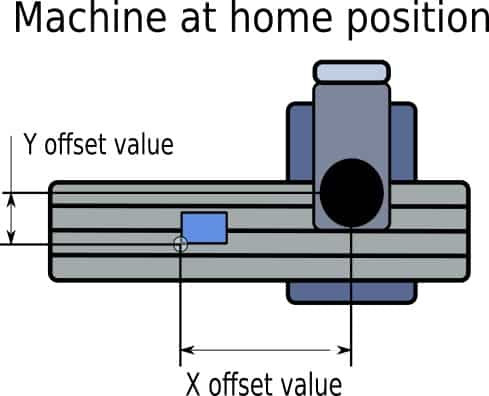
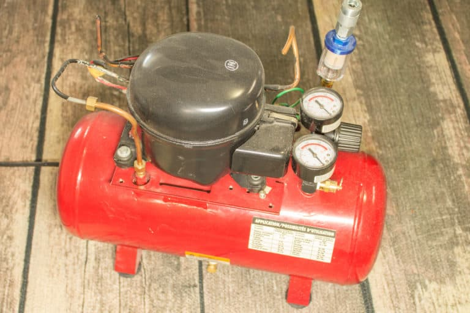
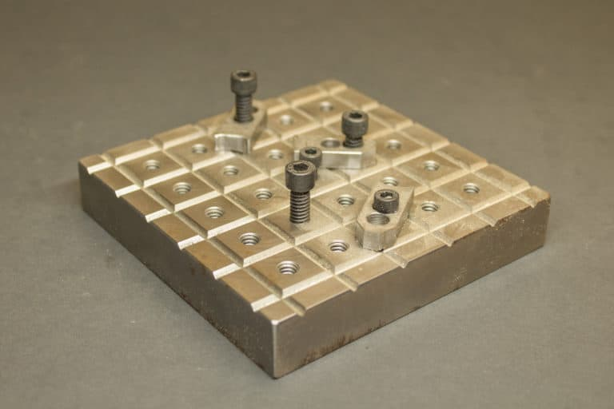
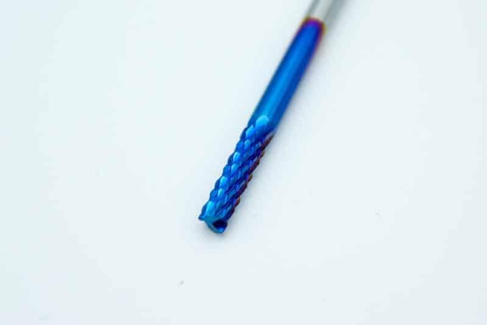

CNC Tutorial
Introduction
This tutorial is designed for beginners. With the relatively cheap CNC routers from China as the 3018, 1419 or the small 1310, everybody is able to start milling a piece of wood. I have started writting this tutorial for my own purposes, and hopefully you will find it usefull.
I personnaly own the 1419, which I find to be beautiful and quite capable, and the 1310 too. Both were very cheap at the beginning of the 2020's. Note that the 3018 is explicitely sold as an "engraving" machine, so don't be surprised if you encounter problems milling with this machine. Sure, there are plenty of YouTube channels showing how "versatile" the 3018 is. But these as often experienced users which already have plenty of experience and know how to take the best from it, all things that a beginner cannot. As they certainly own better machines anyway, I do not see their point. The YouTube channel "Cosmo Channel" (italian) describes carefully how to assemble the 1419. The 1310 is quite small but very well constructed, thus very sturdy. There are also videos in Internet showing how to assemble it. Unfortunately upgrading it is not straightforward. A better spindle mounted on it out of the box would be best. The reality for a machine is: the more expensive, the better!
Nervertheless, to be able to setup and use the machine properly, knowledge of the Grbl Settings is a must. Grbl is the low level software (the "firmware") that is already installed on the control board. Furthermore, to become proefficient in CNC, basic G-Code and M-Code knowledge in needed. G/M-Code instructions are what Grbl (as well as every other CNC controller) handles: the user writes a G-Code file constituted of M/G codes directives, send it to the control board and Grbl processes this G-Code by driving the stepper motors of the machine as well as the spindle or others hardware.
Usually, the user does not write G-Code per hand. A CAD/CAM program can generate a G-Code file from the workpiece and the CAM operations (pocket, etc.) defined on it. To send the G-Code file to the control board, standard, user-friendly desktop computer programs can be used. The most common ones are Candle and UGS. As CAD/CAM programs, we will use Easel, JSCut/PyCut [Fusion360 for advanced users].
So CAD/CAM programs produce G-Code, and this G-Code highly depends on the "options" that are set in the defined CAM operations. So understanding at least the few basic options is also a must.
For this entry level machine, a CAD/CAM 3D program is not really needed. Instead, simple 2D programs are better and a lot easier to handle: Easel is a Web based program where simple forms can be edited and directly transformed into G-Code. It is free and has a non-free "pro" version. Unfortunately, the free version is limited to only a few character fonts. But there are also plenty of geometric patterns ready to use. Default values for the options are given for the CAM operations, and this tutorial will explain them. JSCut is a also a web based application that has SVG as input format and produces G-Code.
So SVG can also be used as an input format for some CAM programs. Unfortunately there are not a lot of programs that create "robust" SVG files, and by "robust" I mean SVG files containing well defined and clean (human readable for modifications) SVG paths (your design). Inkscape, a well-known free SVG program, is unfortunately not a good choice. But SVG files can also be edited per hand, which is quite handy, and leads in my opinion to the best results. Infact, in the documentation of my own CAM program named PyCut (available for free from GitHub), I list some programs that can create SVG files, and unfortunately there are only a few that allow to write SVG files in a decent manner. So this "toolchain" (editing per hand SVGs, loading them in the CAM program, generating G-Code, utilizing a G-Code sender to the machine) is somehow more complex, but still simple enough. However, these simple CAM programs have also settings which are quite important and impact the content of the produced G-Code.
So first , references to Grbl Settings are given. The most important settings are highlighted. Note that the routers are usually already set up per default. Then full reference to M-Code and G-Code is also given (duplicated from the LinuxCNC pages). When using Grbl, only very few of them are worth to know, as Grbl is so basic. Nevertheless, having a look at all the possibilities is worth a look. Note that Grbl_ESP32 or Grbl_HAL are much more capable and can process much more G-Codes.
Many chapters here are also simply copy-pasted from https://cncphilosophy.com. This is because they are so excellent. There is only 1 downsize for them: they are completely plagued with ads, which make them - for me - unreadable. This is the reason I have painfully copy-pasted them for my own reading. Finally, a large part of the tools tutorials are copy-pasted as well from https://cncphilosophy.com.
Grbl Settings
First, connect "physically" your computer to the control board with an USB cable, then connect "logically" to the Grbl board by starting the Candle program and setting in it the right "port" and "Baud rate". You have to tell Candle (see "Settings") which port is related to our Grbl control board. Candle should infact find it alone. Set the baud rate to 115200 as 8-N-1 (8-bits, no parity, and 1-stop bit.) Once connected you should get the Grbl-prompt, which looks like this:
Grbl 1.1f ['$' for help]Note that for some old controller boards, Grbl-0.9 might be pre-installed.
Unfortunaltely, Candle doesn't play well with this version (jog buttons may not work), so you'll have to install Grbl-1.1 on the board. For this you have to install the Arduino IDE on your computer, load the Grbl project and compile it, connect to the board and flash the Grbl-1.1 in the board.
There are 3 types of settings:
Calibration settings include defining steps-per-mm, axes directions, max feed rates, and so on. These settings are used when a new machine is being set up to work, or after a modification of the machine. Here are a few examples of calibration settings:
- Set X-axis steps per mm setting to be 314.961:
$100=314.961 - Reverse Y-axis direction:
$3=2 - Set Z-axis maximum feed rate to 635 mm/min:
$112=635.000
General GRBL commands include functions such as display saved settings, save current settings, and so on. Here are a couple of examples:
- Display the current GRBL settings:
$$ - Display the coordinates and tool length offsets settings:
$#
Real-time commands include actions like soft reset, perform homing cycle, get current machine position, and so on. These commands can be used during a program run or between different operations. Most of these commands do not begin with a ‘$’, but they are Grbl commands nonetheless. Here are a few examples:
- Pause operation:
! - Get current machine and work coordinates:
? - Reset Grbl:
ctrl-x
The most common GRBL settings and commands can be found in DIY Machining’s pocket guide, as well as the GRBL commands wiki page.
The ‘$’-commands are Grbl system commands used to tweak the settings, view or change Grbl's states and running modes, and start a homing cycle. The last four non-'$' commands are realtime control commands that can be sent at anytime, no matter what Grbl is doing. These either immediately change Grbl's running behavior or immediately print a report of the important realtime data like current position (aka DRO).
View Grbl Settings:
To view the settings, type $$ and press enter after connecting to Grbl. Grbl should
respond with a list of the current system settings, as shown in the example below. All of these
settings are persistent and kept in EEPROM, so if you power down, these will be loaded back up the
next time you power up your Arduino.
The x of $x=val indicates a particular setting, while val is the setting value. In prior versions of Grbl, each setting had a description next to it in () parentheses, but Grbl v1.1+ no longer includes them unfortunately. This was done to free up precious flash memory to add the new features available in v1.1. However, most good GUIs will help out by attaching descriptions for you, so you know what you are looking at.
So here are the settings for a standart CNC 1419 router (in green the options that are important and going to be tested):
$x=val - Save Grbl setting
The $x=val command saves or alters a Grbl setting, which can be done manually by
sending this command when connected to Grbl through a serial terminal program, but most Grbl GUIs
will do this for you as a user-friendly feature.
To manually change e.g. the microseconds step pulse option to 10us you would type this, followed by an enter:
$0=10If everything went well, Grbl will respond with an 'ok' and this setting is stored in EEPROM and will be retained forever or until you change them. You can check if Grbl has received and stored your setting correctly by typing $$ to view the system settings again.
Note that some settings (such as $100, $101, $102) require a soft reset for the settings to be properly loaded. Any subsequent movement command could otherwise move the machine to the wrong coordinates causing damage to the machine.
$0 – Step pulse, microseconds
Stepper drivers are rated for a certain minimum step pulse length. Check the data sheet or just try some numbers. You want the shortest pulses the stepper drivers can reliably recognize. If the pulses are too long, you might run into trouble when running the system at very high feed and pulse rates, because the step pulses can begin to overlap each other. We recommend something around 10 microseconds, which is the default value.
$1 - Step idle delay, milliseconds
Every time your steppers complete a motion and come to a stop, Grbl will delay disabling the
steppers by this value. OR, you can always keep your axes enabled (powered so as to hold position)
by setting this value to the maximum 255 milliseconds. Again, just to repeat, you can keep all axes
always enabled by setting $1=255.
The stepper idle lock time is the time length Grbl will keep the steppers locked before
disabling. Depending on the system, you can set this to zero and disable it. On others, you may
need 25-50 milliseconds to make sure your axes come to a complete stop before disabling. This is to
help account for machine motors that do not like to be left on for long periods of time without
doing something. Also, keep in mind that some stepper drivers don't remember which micro step they
stopped on, so when you re-enable, you may witness some 'lost' steps due to this. In this case,
just keep your steppers enabled via $1=255.
$2 – Step port invert, mask
This setting inverts the step pulse signal. By default, a step signal starts at normal-low and goes high upon a step pulse event. After a step pulse time set by $0, the pin resets to low, until the next step pulse event. When inverted, the step pulse behavior switches from normal-high, to low during the pulse, and back to high. Most users will not need to use this setting, but this can be useful for certain CNC-stepper drivers that have peculiar requirements. For example, an artificial delay between the direction pin and step pulse can be created by inverting the step pin.
This invert mask setting is a value which stores the axes to invert as bit flags. You really
don't need to completely understand how it works. You simply need to enter the settings value for
the axes you want to invert. For example, if you want to invert the X and Z axes, you'd send
$2=5 to Grbl and the setting should now read $2=5 (step port invert
mask:00000101).
| Settings values | Mask | Invert X | Invert Y | Invert Z |
|---|---|---|---|---|
| 0 | 00000000 | N | N | N |
| 1 | 00000001 | Y | N | N |
| 2 | 00000010 | N | Y | N |
| 3 | 00000011 | Y | Y | N |
| 4 | 00000100 | N | N | Y |
| 5 | 00000101 | Y | N | Y |
| 6 | 00000110 | N | Y | Y |
| 7 | 00000111 | Y | Y | Y |
$3 - Direction port invert, mask
This setting inverts the direction signal for each axis. By default, Grbl assumes that the axes move in a positive direction when the direction pin signal is low, and a negative direction when the pin is high. Often, axes don't move this way with some machines. This setting will invert the direction pin signal for those axes that move the opposite way.
This invert mask setting works exactly like the step port invert mask and stores which axes to
invert as bit flags. To configure this setting, you simply need to send the value for the axes you
want to invert. Use the table above. For example, if want to invert the Y axis direction only,
you'd send $3=2 to Grbl and the setting should now read $3=2 (dir port invert
mask:00000010)
$4 - Step enable invert, boolean
By default, the stepper enable pin is high to disable and low to enable. If your setup needs the
opposite, just invert the stepper enable pin by typing $4=1. Disable with $4=0. (May
need a power cycle to load the change.)
$5 - Limit pins invert, boolean
By default, the limit pins are held normally-high with the Arduino's internal pull-up resistor.
When a limit pin is low, Grbl interprets this as triggered. For the opposite behavior, just invert
the limit pins by typing $5=1. Disable with $5=0. You may need a power
cycle to load the change.
NOTE: For more advanced usage, the internal pull-up resistor on the limit pins may be disabled in config.h.
$6 - Probe pin invert, boolean
By default, the probe pin is held normally-high with the Arduino's internal pull-up resistor.
When the probe pin is low, Grbl interprets this as triggered. For the opposite behavior, just
invert the probe pin by typing $6=1. Disable with $6=0. You may need a
power cycle to load the change.
$10 - Status report, mask
This setting determines what Grbl real-time data it reports back to the user when a '?' status report is sent. This data includes current run state, real-time position, real-time feed rate, pin states, current override values, buffer states, and the g-code line number currently executing (if enabled through compile-time options).
By default, the new report implementation in Grbl v1.1+ will include just about everything in the standard status report. A lot of the data is hidden and will appear only if it changes. This increases efficiency dramatically over of the old report style and allows you to get faster updates and still get more data about your machine. The interface documentation outlines how it works and most of it applies only to GUI developers or the curious.
To keep things simple and consistent, Grbl v1.1 has only two reporting options. These are primarily here just for users and developers to help set things up.
Position type may be specified to show either machine position (MPos:) or work position (WPos:), but no longer both at the same time. Enabling work position is useful in certain scenarios when Grbl is being directly interacted with through a serial terminal, but machine position reporting should be used by default. Usage data of Grbl's planner and serial RX buffers may be enabled. This shows the number of blocks or bytes available in the respective buffers. This is generally used to helps determine how Grbl is performing when testing out a streaming interface. This should be disabled by default. Use the table below enables and disable reporting options. Simply add the values listed of what you'd like to enable, then save it by sending Grbl your setting value. For example, the default report with machine position and no buffer data reports setting is $10=1. If work position and buffer data are desired, the setting will be $10=2.
| Report Type | Value | Description |
|---|---|---|
| Position Type | 0 | Enable WPos: Disable MPos:. |
| Position Type | 1 | Enable MPos:. Disable WPos:. |
| Buffer Data | 2 | Enabled Buf: field appears with planner and serial RX available buffer. |
$11 - Junction deviation, mm
Junction deviation is used by the acceleration manager to determine how fast it can move through line segment junctions of a G-code program path. For example, if the G-code path has a sharp 10 degree turn coming up and the machine is moving at full speed, this setting helps determine how much the machine needs to slow down to safely go through the corner without losing steps.
How we calculate it is a bit complicated, but, in general, higher values gives faster motion through corners, while increasing the risk of losing steps and positioning. Lower values makes the acceleration manager more careful and will lead to careful and slower cornering. So if you run into problems where your machine tries to take a corner too fast, decrease this value to make it slow down when entering corners. If you want your machine to move faster through junctions, increase this value to speed it up. For curious people, hit this link to read about Grbl's cornering algorithm, which accounts for both velocity and junction angle with a very simple, efficient, and robust method.
$12 – Arc tolerance, mm
Grbl renders G2/G3 circles, arcs, and helices by subdividing them into teeny tiny lines, such that the arc tracing accuracy is never below this value. You will probably never need to adjust this setting, since 0.002mm is well below the accuracy of most all CNC machines. But if you find that your circles are too crude or arc tracing is performing slowly, adjust this setting. Lower values give higher precision but may lead to performance issues by overloading Grbl with too many tiny lines. Alternately, higher values traces to a lower precision, but can speed up arc performance since Grbl has fewer lines to deal with.
For the curious, arc tolerance is defined as the maximum perpendicular distance from a line segment with its end points lying on the arc, aka a chord. With some basic geometry, we solve for the length of the line segments to trace the arc that satisfies this setting. Modeling arcs in this way is great, because the arc line segments automatically adjust and scale with length to ensure optimum arc tracing performance, while never losing accuracy.
$13 - Report inches, boolean
Grbl has a real-time positioning reporting feature to provide a user feedback on where the
machine is exactly at that time, as well as, parameters for coordinate offsets and probing. By
default, it is set to report in mm, but by sending a $13=1 command, you send this
boolean flag to true and these reporting features will now report in inches. $13=0 to
set back to mm.
$20 - Soft limits, boolean
Soft limits is a safety feature to help prevent your machine from traveling too far and beyond the limits of travel, crashing or breaking something expensive. It works by knowing the maximum travel limits for each axis and where Grbl is in machine coordinates. Whenever a new G-Code motion is sent to Grbl, it checks whether or not you accidentally have exceeded your machine space. If you do, Grbl will issue an immediate feed hold wherever it is, shutdown the spindle and coolant, and then set the system alarm indicating the problem. Machine position will be retained afterwards, since it's not due to an immediate forced stop like hard limits.
NOTE: Soft limits requires homing to be enabled and accurate axis maximum travel settings, because Grbl needs to know where it is. $20=1 to enable, and $20=0 to disable.
$21 - Hard limits, boolean
Hard limit work basically the same as soft limits, but use physical switches instead. Basically you wire up some switches (mechanical, magnetic, or optical) near the end of travel of each axes, or where ever you feel that there might be trouble if your program moves too far to where it shouldn't. When the switch triggers, it will immediately halt all motion, shutdown the coolant and spindle (if connected), and go into alarm mode, which forces you to check your machine and reset everything.
To use hard limits with Grbl, the limit pins are held high with an internal pull-up resistor, so all you have to do is wire in a normally-open switch with the pin and ground and enable hard limits with $21=1. (Disable with $21=0.) We strongly advise taking electric interference prevention measures. If you want a limit for both ends of travel of one axes, just wire in two switches in parallel with the pin and ground, so if either one of them trips, it triggers the hard limit.
Keep in mind, that a hard limit event is considered to be critical event, where steppers immediately stop and will have likely have lost steps. Grbl doesn't have any feedback on position, so it can't guarantee it has any idea where it is. So, if a hard limit is triggered, Grbl will go into an infinite loop ALARM mode, giving you a chance to check your machine and forcing you to reset Grbl. Remember it's a purely a safety feature.
$22 - Homing Cycle, boolean
Ahh, homing. For those just initiated into CNC, the homing cycle is used to accurately and precisely locate a known and consistent position on a machine every time you start up your Grbl between sessions. In other words, you know exactly where you are at any given time, every time. Say you start machining something or are about to start the next step in a job and the power goes out, you re-start Grbl and Grbl has no idea where it is due to steppers being open-loop control. You're left with the task of figuring out where you are. If you have homing, you always have the machine zero reference point to locate from, so all you have to do is run the homing cycle and resume where you left off.
To set up the homing cycle for Grbl, you need to have limit switches in a fixed position that won't get bumped or moved, or else your reference point gets messed up. Usually they are setup in the farthest point in +x, +y, +z of each axes. Wire your limit switches in with the limit pins, add a recommended RC-filter to help reduce electrical noise, and enable homing. If you're curious, you can use your limit switches for both hard limits AND homing. They play nice with each other.
Prior to trying the homing cycle for the first time, make sure you have setup everything correctly, otherwise homing may behave strangely. First, ensure your machine axes are moving in the correct directions per Cartesian coordinates (right-hand rule). If not, fix it with the $3 direction invert setting. Second, ensure your limit switch pins are not showing as 'triggered' in Grbl's status reports. If are, check your wiring and settings. Finally, ensure your $13x max travel settings are somewhat accurate (within 20%), because Grbl uses these values to determine how far it should search for the homing switches.
By default, Grbl's homing cycle moves the Z-axis positive first to clear the workspace and then moves both the X and Y-axes at the same time in the positive direction. To set up how your homing cycle behaves, there are more Grbl settings down the page describing what they do (and compile-time options as well.)
Also, one more thing to note, when homing is enabled. Grbl will lock out all G-code commands until you perform a homing cycle. Meaning no axes motions, unless the lock is disabled ($X) but more on that later. Most, if not all CNC controllers, do something similar, as it is mostly a safety feature to prevent users from making a positioning mistake, which is very easy to do and be saddened when a mistake ruins a part. If you find this annoying or find any weird bugs, please let us know and we'll try to work on it so everyone is happy. :)
NOTE: Check out config.h for more homing options for advanced users. You can disable the homing lockout at startup, configure which axes move first during a homing cycle and in what order, and more.
$23 - Homing dir invert, mask
By default, Grbl assumes your homing limit switches are in the positive direction, first moving the z-axis positive, then the x-y axes positive before trying to precisely locate machine zero by going back and forth slowly around the switch. If your machine has a limit switch in the negative direction, the homing direction mask can invert the axes' direction. It works just like the step port invert and direction port invert masks, where all you have to do is send the value in the table to indicate what axes you want to invert and search for in the opposite direction.
Sets direction of travel for homing cycle for each axis. Last 3 bits set direction for ZYX respectively.
$24 - Homing feed, mm/mink
Speed of movement for last part of homing cycle.
$25 - Homing seek, mm/min
Speed of movement for first part of homing cycle.
$26 - Homing debounce, milliseconds
Debounce time in milliseconds for homing switches.
$27 - homing pull-off, millimeters
Amount of pullback when homing routine hits a switch. Ensures that switches are not still activated after homing cycle if limit switches are enabled.
$30 - Max spindle speed, RPM
This sets the spindle speed for the maximum 5V PWM pin output. For example, if you want to set 10000rpm at 5V, program $30=10000. For 255rpm at 5V, program $30=255. If a program tries to set a higher spindle RPM greater than the $30 max spindle speed, Grbl will just output the max 5V, since it can't go any faster. By default, Grbl linearly relates the max-min RPMs to 5V-0.02V PWM pin output in 255 equally spaced increments. When the PWM pin reads 0V, this indicates spindle disabled. Note that there are additional configuration options are available in config.h to tweak how this operates.
It is not clearly stated if the value 1000 means max power or 1000 rpms
CHECKME: 1000 or 8000 In documents, this issue is not "understandable". It is not clearly stated (to me) by the authors.
try 1000 and 8000 and run the spindle. It seems it is the same rpms.
So stick to 1000.
$31 - Min spindle speed, RPM
This sets the spindle speed for the minimum 0.02V PWM pin output (0V is disabled). Lower RPM values are accepted by Grbl but the PWM output will not go below 0.02V, except when RPM is zero. If zero, the spindle is disabled and PWM output is 0V.
$32 - Laser mode, boolean
When enabled, Grbl will move continuously through consecutive G1, G2, or G3 motion commands when programmed with a S spindle speed (laser power). The spindle PWM pin will be updated instantaneously through each motion without stopping. Please read the GRBL laser documentation and your laser device documentation prior to using this mode. Lasers are very dangerous. They can instantly damage your vision permanantly and cause fires. Grbl does not assume any responsibility for any issues the firmware may cause, as defined by its GPL license.
When disabled, Grbl will operate as it always has, stopping motion with every S spindle speed command. This is the default operation of a milling machine to allow a pause to let the spindle change speeds.
In Laser mode(using LASERGrgl), set $32 = 1 and $30 has a value from 0 to 255.
When switching back to Milling Mode(usind Candle), set $32=0. Do not forget to reset the spindle speed too ($30=1000).
$100, $101 and $102 – [X,Y,Z] steps/mm
Grbl needs to know how far each step will take the tool in reality. To calculate steps/mm for an axis of your machine you need to know:
- The mm traveled per revolution of your stepper motor. This is dependent on your belt drive gears or lead screw pitch.
- The full steps per revolution of your steppers (typically 200)
- The microsteps per step of your controller (typically 1, 2, 4, 8, or 16). Tip: Using high microstep values (e.g., 16) can reduce your stepper motor torque, so use the lowest that gives you the desired axis resolution and comfortable running properties.
The steps/mm can then be calculated like this: steps_per_mm = (steps_per_revolution*microsteps)/mm_per_rev
Compute this value for every axis and write these settings to Grbl.
$110, $111 and $112 – [X,Y,Z] Max rate, mm/min
This sets the maximum rate each axis can move. Whenever Grbl plans a move, it checks whether or not the move causes any one of these individual axes to exceed their max rate. If so, it'll slow down the motion to ensure none of the axes exceed their max rate limits. This means that each axis has its own independent speed, which is extremely useful for limiting the typically slower Z-axis.
The simplest way to determine these values is to test each axis one at a time by slowly increasing max rate settings and moving it. For example, to test the X-axis, send Grbl something like G0 X50 with enough travel distance so that the axis accelerates to its max speed. You'll know you've hit the max rate threshold when your steppers stall. It'll make a bit of noise, but shouldn't hurt your motors. Enter a setting a 10-20% below this value, so you can account for wear, friction, and the mass of your workpiece/tool. Then, repeat for your other axes.
NOTE: This max rate setting also sets the G0 seek rates.
$120, $121, $122 – [X,Y,Z] Acceleration, mm/sec^2
This sets the axes acceleration parameters in mm/second/second. Simplistically, a lower value makes Grbl ease slower into motion, while a higher value yields tighter moves and reaches the desired feed rates much quicker. Much like the max rate setting, each axis has its own acceleration value and are independent of each other. This means that a multi-axis motion will only accelerate as quickly as the lowest contributing axis can.
Again, like the max rate setting, the simplest way to determine the values for this setting is to individually test each axis with slowly increasing values until the motor stalls. Then finalize your acceleration setting with a value 10-20% below this absolute max value. This should account for wear, friction, and mass inertia. We highly recommend that you dry test some G-Code programs with your new settings before committing to them. Sometimes the loading on your machine is different when moving in all axes together.
$130, $131, $132 – [X,Y,Z] Max travel, mm
This sets the maximum travel from end to end for each axis in mm. This is only useful if you have soft limits (and homing) enabled, as this is only used by Grbl's soft limit feature to check if you have exceeded your machine limits with a motion command.
Grbl Errors Codes
- error:1 : G-Code words consist of a letter and a value. Letter was not found.
- error:2 : Numeric value format is not valid or missing an expected value.
- error:3 : Grbl ‘$’ system command was not recognized or supported.
- error:4 : Negative value received for an expected positive value.
- error:5 : Homing cycle is not enabled via settings.
- error:6 : Minimum step pulse time must be greater than 3usec
- error:7 : EEPROM read failed. Reset and restored to default values.
- error:8 : Grbl ‘$’ command cannot be used unless Grbl is IDLE. Ensures smooth operation during a job.
- error:9 : G-Code locked out during alarm or jog state
- error:10: Soft limits cannot be enabled without homing also enabled.
- error:11: Max characters per line exceeded. Line was not processed and executed.
- error:12: (Compile Option) Grbl ‘$’ setting value exceeds the maximum step rate supported.
- error:13: Safety door detected as opened and door state initiated.
- error:14: (Grbl-Mega Only) Build info or startup line exceeded EEPROM line length limit.
- error:15: Jog target exceeds machine travel. Command ignored.
- error:16: Jog command with no ‘=’ or contains prohibited G-Code .
- error:20: Unsupported or invalid G-Code command found in block.
- error:21: More than one G-Code command from same modal group found in block.
- error:22: Feed rate has not yet been set or is undefined.
- error:23: G-Code command in block requires an integer value.
- error:24: Two G-Code commands that both require the use of the XYZ axis words were detected in the block.
- error:25: A G-Code word was repeated in the block.
- error:26: A G-Code command implicitly or explicitly requires XYZ axis words in the block but none were detected.
- error:27: N line number value is not within the valid range of 1 – 9,999,999.
- error:28: A G-Code command was sent, but is missing some required P or L value words in the line.
- error:29: Grbl supports six work coordinate systems G54-G59. G59.1, G59.2, and G59.3 are not supported.
- error:30: The G53 G-Code command requires either a G0 seek or G1 feed motion mode to be active. A different motion was active.
- error:31: There are unused axis words in the block and G80 motion mode cancel is active.
- error:32: A G2 or G3 arc was commanded but there are no XYZ axis words in the selected plane to trace the arc.
- error:33: The motion command has an invalid target. G2, G3, and G38.2 generates this error, if the arc is impossible to generate or if the probe target is the current position.
- error:34: A G2 or G3 arc, traced with the radius definition, had a mathematical error when computing the arc geometry. Try either breaking up the arc into semi-circles or quadrants, or redefine them with the arc offset definition.
- error:35: A G2 or G3 arc, traced with the offset definition, is missing the IJK offset word in the selected plane to trace the arc.
- error:36: There are unused, leftover G-Code words that aren’t used by any command in the block.
- error:37: The G43.1 dynamic tool length offset command cannot apply an offset to an axis other than its configured axis. The Grbl default axis is the Z-axis.
- error:38: An invalid tool number sent to the parser
- ALARM:1: Hard limit triggered. Machine position is likely lost due to sudden and immediate halt. Re-homing is highly recommended.
- ALARM:2: G-Code motion target exceeds machine travel. Machine position safely retained. Alarm may be unlocked.
- ALARM:3: Reset while in motion. Grbl cannot guarantee position. Lost steps are likely. Re-homing is highly recommended.
- ALARM:4: Probe fail. The probe is not in the expected initial state before starting probe cycle, where G38.2 and G38.3 is not triggered and G38.4 and G38.5 is triggered.
- ALARM:5: Probe fail. Probe did not contact the workpiece within the programmed travel for G38.2 and G38.4.
- ALARM:6: Homing fail. Reset during active homing cycle.
- ALARM:7: Homing fail. Safety door was opened during active homing cycle.
- ALARM:8: Homing fail. Cycle failed to clear limit switch when pulling off. Try increasing pull-off setting or check wiring.
- ALARM:9: Homing fail. Could not find limit switch within search distance. Defined as 1.5 * max_travel on search and 5 * pulloff on locate phases.
- Hold:0 : Hold complete. Ready to resume.
- Hold:1 : Hold in-progress. Reset will throw an alarm.
- Door:0: Door closed. Ready to resume.
- Door:1: Machine stopped. Door still ajar. Can’t resume until closed.
- Door:2: Door opened. Hold (or parking retract) in-progress. Reset will throw an alarm.
- Door:3: Door closed and resuming. Restoring from park, if applicable. Reset will throw an alarm.
Upgrading the CNC 1310
Mechanics
Here is a link to a video concerning how to mount "the right way" the backlash nuts.
Spindle
There is on Aliexpress a small brushless spindle of diameter 42 cm, so it can be installed on 1310's existing plates. Unfortunately, its screws are disposed differently than the standart spindle. This means, you have to drill some holes on the bottom plate at the right place.
An other possibilty is to "make" new plates for other types of spindles. I give in PyCut source code some freeCAD examples.
Lastly, as seen on YouTube, you can buy an high-end 42 cm diameter rather expensive spindle and a custom bracket that fits inside the existing 2 plates.
Upgrading the CNC 1419
A YouTube channel called "Propeller Labs" demonstrates various upgrades of the CNC 1419.
Spindle
AliExpress sells a whole family of brushless spindles, with power of 300, 400, 500 or 600 W. It seems the 600W spindle has only 9000 rpms, compared to 12000 rpms for the 500 W one for example.
Mouting the spindle on the machine
A straightforward upgrade consists in installing this 500W spindle on the machine. Yes, mounting it does not required any special skills, as its bracket can be attached on the machine with only 4 T-Nut 6mm, also purchasable on AliExpress as well (these T-Nut 6mm are by the way quite practical, and I have bought a bunch of them).
There are also T-Nut 5mm, and Propeller Labs uses theses ones, and encloses the (not so) corresponding 5mm bracket screws in some plastics tubes to fit in the spindle bracket, whose holes are infact 6mm diameter as the standard screws.
What is better ?
Of course you need an extra power supply (48 Volts, 500 W) to run the spindle.
Controlling the spindle from the software
With the standard spindle, this occurs. But when installing the 500W brushless spindle, the controller board does not know anymore the spindle. See Propeller Labs episode #8. CNC 1419 how to fix this!
Basically, one has to connect the board spindle + pin (PWM) and the board 5V+ output, Enable and Ground pins (find them!) to a device transforming the PWM signal to a voltage between 0 - 24 V, and connecting this device to the brushless motor driver.
Just be sure of what you are doing if you don#t want to burn your board. There may be some complications!
Stepper Motors and Stepper Motor Drivers
Reference: https://www.pololu.com/category/120/stepper-motor-drivers
Reference: https://3dwork.io/en/tmc-drivers/
Stepper motor drivers are specifically designed to drive stepper motors, which are capable of continuous rotation with precise position control, even without a feedback system. These modules are generally basic carrier boards for a variety of stepper motor driver ICs that offer low-level interfaces like inputs for directly initiating each step. An external microcontroller is typically required for generating these low-level signals.
The following table, organized by increasing operating voltage, compare some drivers:
Added to the table is the widely used TMC-2209 driver in 3D printers and pins compatibles with the A4988, as well as the TMC-5160 and TB-6600 for information:
 A4988 (original) |
 A4988, Black Ed. |
 DRV8825 |
 TB67S249-FTG |
TMC-2209 |
TMC-5160 |
TB-6600 |
|
|---|---|---|---|---|---|---|---|
| Driver chip: | Allegro A4988 | TI DRV8825 |
Toshiba TB67S249-FTG |
Trinamic TMC-2209 |
Trinamic TMC-5160 |
Toshiba TB-6600 |
|
| Min operating voltage: | 8 V | 8.2 V | 10 V | 4.75 V | 8 V | 9 V | |
| Max operating voltage: | 35 V | 45 V | 47 V | 29 V | 60 V | 40 V | |
| Max continuous current per phase:(1) | 1 A | 1.2 A | 1.5 A | 1.6 A | 2.0 A | 3.0 A | 3.5 A |
| Peak current per phase:(2) | 2 A | 2.2 A | 4.5 A | 2.8 A | 3.0 A | 4.0 A | |
| Microstepping down to: | 1/16 | 1/32 | 1/32 | 1/64 | 1/64 | 1/32 | |
| 1-piece price: | $1.00 | $1.00 | $1.00 | $12.95 | $6.00 | $20.00 | $8.00 |
| 1 without
additional cooling. 2 additional cooling required. |
|||||||
As you can see, the TMC-2209 supports up to 2.0 Amperes (while the A4988 only 2 Amp at peak) it is therefore a perfect driver to run a Nema 17 motor of greater power than those driven by a A4988.
Typically, the A4988 drives small Nema-17 motors. These motors are circa 34 cm long and I think they run at 1.2 or 1.5 Amp and have a torque of 42 Ncm.
Consider the Nema17 17HS19-2004S1 motor of 48cm (19 inches) length: its holding torque is 59 Ncm and runs at 2 Amp, which is the upper limit for a A4988 and thus not well suited for long jobs. But the TMC-2209 is perfectly suited.
An even more powerful motor could be the Nema17 17HS24-2104S, which is 24 inchs long (60cm) and runs at 2.1 Amp. Its holding torque is 65Ncm, and its torque is higher of about 1 third than the Nema17 17HS19-2004S1, but only at low speed (500RPM or less).
Now the neccessary power to run a board with 3 Nema17 17HS19-2004S1 motors is 3 times (24 Volt * 2 Amp) = 3 x 48 W. So a better power supply than the (junk) one given as standard for the CNC 1419 which has a max of 100W (or 120W) is needed. I found 5 ("brick" like) suitable power supply:
- Liteon 120 W at 24 Volt - if you do not upgrade your motors -
- Dell Notebook power supply 130 W at 19.5 Volt
- Dell Notebook power supply 180 W at 19.5 Volt
- Dell Notebook power supply 240 W at 19.5 Volt
- Samsung power supply 180 W at 24 Volt


You just need the right adaptor for the connector output.
Controller Boards
Grbl Boards
These boards are run by the ATMega328P 8-bits chip. They are basically Arduino Uno R3 clones. There are plenty of those on AliExpress
As done in Propeller Labs, it is possible to connect this kind of board with the TB6600 drivers which supports higher current. It is nevertheless not straightforward because of its box enclosure so that connections (wires) from the controller board to the drivers have to be soldered (at best) or plugged into the board stepper motors receptors modules. This adds quite a lot of electric cables and is place consuming. And the drivers needs an extra power supply together with the board own power supply and the 500W spindle power supply too.
Grbl_ESP32 Boards
These boards are run by the 32-bits ESP32 chip.
MakerBase MKS DLC32 V2.1 Board
Easy to buy on AliExpress. Its pre-installed firmware (Marlin) is a clone of the FluidNC firmware and supports the MKT TS35-R V2.0 external display for an easy "offline" control.
Note: You can install the FluidNC firmware on the MKS board, but this latter does not support the MKT TS35-R display.
Why using this board? well it supports the TMC-2209 stepper motor driver. I consider utilizing the MKS DLC32 V2.1 board as a perfect and easy replacement for the CNC-1419 standard Grbl board, with the TMC-2209 drivers and the Nema17 17HS19-2004S1 motors.
FluidNC Boards
FluidNC proposes some "officially" supported boards. Among them are also boards for the TMC-2209 and TMC-5160. The drivers can be placed on a module or be already soldered on the board, depending on the board.
Boards for the TMC5160 seems to be expensive (see FluidNC hardware page).
Reducing the backlash
See Propeller Labs episode #29. CNC 1419 solution.
Better bearings
See Propeller Labs episode #19. CNC 1419 solution.
First Steps - How to (not) crash the machine
The most important of all is not to crash the machine.
You crash the machine when you tell the machine to go 200 mm right when there is only place for a travel of 100mm. This happens if you are already quite on the right.
You crash the machine in all case when you tell the 1419 machine to go up 100mm. The machine has a max travel of about 45mm in the Z direction...
Well, the max travel settings of GRBL should protect you "a little bit", but certainly not in all cases.
Actually, limits switches can avoid these problems. Limits switches are simple ON/OFF interuptors which turn off the machine when the bounds the machine are reached. But the CNC-1419 has no limit switches, and for small machines it may be not easy or even wise to mount some.
Now, what does mean "crashing the machine" ? : for X/Y directions, the gantry cannot move anymore as the motors are trying to do, so in case the the 1419, the couplers will break the connection between the motor shaft the the lead screw. In fact, this is the connection "coupler-motor shaft" which is the weakest and thus that will break first. The connection "coupler- lead screw" will remain.
Couplers are the devices which transfer power from the motor to the lead screw. As such they are central components of a machine. Unfortunately in the 1419 Machine has only the cheapest couplers.
This is a sort of safety mechanism. So the motors will continue to work without any effects on the machine. You just have to abort the job and tighten the coupler again with the motor shaft.
Note: What is the best way to tighten the coupler to the shaft . Nowhere in the web I found a reasonable explaination..... Maybe like this, or should it be only 1 screw ?:
The second way to crash the machine as describe above is to ask "to much" to the machine.
Asking to much to the machine means among others:
- Feed rate too high: how fast in moving the spindle in X/Y direction
- Plunge rate too high: how fast in entering the bit in the stock (Z) direction
- Depth pass too high: how deep is the cut
- The combinaison of the two first is too high
You should be conservative with your settings. Recommended values for milling are:
- Feed Rate: 200mm/min
- Plunge Rate: 50mm/min
- Depth per pass: 0.25 mm per pass (YES)
Recommended values for carving are:
- Feed Rate: 100mm/min (I have forgotten my settings)
- Plunge Rate: 50mm/min (I have forgotten my settings)
- Depth per pass: 0.15 mm per pass (I have forgotten my settings)
By carving, you do not go too deep in the material. Easel will give reasonable values.
These settings are typically in the "transform CAD to G-CODE" section
Remember, the 3018 is quite weak, and is sold as a carving machine, not a milling machine. Milling is funny too, use only best quality wood (Buche) or very light one as plywood (Sperrholz) for this purpose.
If these values are too high, it happens what must happend: one coupler "breaks" the connection, often in the middle of the job. So the job is ruined
You will crash the machine too when you start a job while the spindle is not running. It is impossible for the bit to "enter" into the material. Something bad will happen.
So it is better in the G-Code generation to tell the spindle to start "automatically" (and not "manuallly"). When setting are on "starting manually", you will automatically forget soon or late to start yourself the spindle!
Tools Tutorials
Offline Controller
The offline controller is useful for beginners when checking the machine for the first time, because no computer is needed. So it is useful to check if the motors are working well and the spindle is travelling, but please set a small step size (10mm) and do not use the Z direction (you can do this with Candle). You can of course test the Z direction, but be sure first to have set the step size to 10mm or lower, because the travel in the Z direction is so small.
Anyway, before acting on the Z direction, you should take the habit, before pushing the button, to have a look at the step size on the device (offline controller or computer) and take a second look at the position the the spindle in the Z axis to check its position. Only then push the button Z "up" or Z "down".
It is also useful for advanced users, to start a job without computer. In this case, you have to know exactly what the G-Code will do. At best you do so by visualising the G-Code first in Candle, and check how high the spindle will travel in the Z axis. The travelling in the X/Y direction is somehow already know, because you know the size of your working piece.
Zero positionning
When using it for "production", an important "feature" must be pointed: the machine cannot be zeroed with this mini controller. Practically, this means that when starting a nc file from the controller, the machine supposes it is already at zero. So the user must first place the spindle at its zero, and this means among others that the spindle must touch the stock (z=0). Only starting from this position makes sense.
Here is an example of a nc code which is thus potentially dangerous when starting the file two time (nc code generated from JSCut):
G21 ; Set units to mm
G90 ; Absolute positioning
G1 Z10 F200 ; Move to clearance level
;
; Operation: 0
; Name:
; Type: Engrave
; Paths: 1
; Direction: Conventional
; Cut Depth: 0.4000000000000001
; Pass Depth: 0.24999999999999997
; Plunge rate: 200
; Cut rate: 200
;
; Path 0
; Rapid to initial position
G1 Z0.0000
; plunge
G1 Z-0.2500 F200
; cut
G1 X0.0000 Y29.7365 F200
G1 X29.7365 Y29.7365
G1 X29.7365 Y0.0000
G1 X29.7365 Y0.0000
G1 X0.00000 Y0.0000
; Retract
G1 Z10.0000 F200
M2So at start the spindle goes up 10mm ("Move to clearance level"), then does its job, and finish the job ("Retract") by going up 10mm again. All thing OK, but what happens when you immediately restart the job? Of course in production you will not, but maybe when "testing" the controller. So the second time at start, the spindle goes 10 mm again, that is, it will be 20mm above the stock. So it could reach the maximal height faster than you thought...
Note too that JSCut ommits M3 codes at start and end (but this is an other story)
Testing the Max Travels
The machine dimensions are known, so the Max Travelling parameters can be set: as test, set
$130=45
$131=45
$132=10Then try to jog of a distance of 30mm
Testing the Soft Limits
Softs limits are meant to be used with homing. But the 1419 has no homing. However soft limits can be tested and used.
First positionate the spindle in the middle of the machine. You know there is for example only 60 mm travel in the X direction. Set the Grbl settings $20 = 1 (soft limits "on"), and the max X travel to 45 mm ($130 = 45). First try to move the spindle in the negative range: it won't move. Then try to move the spindle in the positive X direction of a step of 10mm: the spindle moves. Repeat the process : after having reach a total of 40mm, and at this pooint for the next step, the spindle won't move. So it works best when you start a job where the spindle is indeed at the middle of the machine, or a the top left. Set then the machine coordinates to zero, and your G-Code contains only positive coordinates. Then set the max travel to your machine size.
After this test, don't forget to reset $20 = 0 if you don't want to uise soft limits.
Candle
Lesson 1: Jogging - Moving the axis
Note that in Candle, the entry field "step" means a displacement in mm.
Even if the default Grbl settings for the machine should be the right ones, in order not to crash the machine, it is better to start with the minimum step: step= 0.01 and see if the x axis moves a bit. If Ok, set the step to 0,1, then 1, then to 10, then 100mm
As the CNC 1419 is already configured, for a step of 10mm, the x-axis should move of 1cm.
When moving in the z direction, remember that there is much less movement, so 1 click (for a step of 10 mm) can be already dangerous:
- in the down direction: the bed could be reached and the bit damages then the bed
- in the upward direction: then at least the coupler "breaks" because the spindle holder cannot go up anymore
These movements correspond to the G-Code command G1 (linear move) in modus G91 (relative distance mode). G90 and G91 are the basic commands to set the move modus:
- G90: absolute distance modus
- G91: absolute distance modus
G91 (relativ move modus)
G1 X10 (move 10mm on the X axis)Infact GRBL may log an error "22", because the feed rate is not yet set after the G91 command:
G91 (relativ move modus)
G1 X10 F500 (move 10mm on the X axis with feed speed 500)
G1 X-10 (move back)Lesson 2: Calibrating the machine
If one of the axis is moving in the wrong direction, then the $3 parameter has to be set correctly
$3= <value>It is important to calibrate the axis: the relevant parameters are:
$100
$101
$102The current value $100=800 means that the machine takes 800
steps to move 1mm. To check this, move the machine in the x direction of (theorically) 100mm wiht
the jogg control, measure then the real distance moved and calculate a new steps per mm value:
value = [ theorical jogged distance / real measured distance ] * current steps/mmExample: the machine moved in reality 105 mm , so
value = [100.0 / 100.5 ] * 800 = 796 => $100 = 796Repeat the procedure in the y and z direction. For the z direction, this is a bit harder. TECHYDIY YouTube
Lesson-3: Controlling the spindle
So pushing on the GUI the button to start on/off, the spindle effectively starts on/off...
You can achieve the same effect by sending commands one after the other to Grbl: in the console, type:
M3 S1 // start
M5 // stop
M3 S1 // start
M3 S1000 // change
M5 // stop
M4 S1 // start counterclockwise
M5 // stopLesson-4: Setting Machine Zeros Coordinates
Candle has 2 buttons for settings the machine Zeros coordinates:
- X-Y Zeros
- Z Zero
The equivalent in G-Code is
G92 X0Y0G92 Z0Setting Zeros coordinates is different than "Homing".
LaserGRBL
The custom button "Zeros coordinates" is used for setting the Zeros Coordinates.
Do not use the "Homing" button, this is somethings completely different!
For beginners: Setting the machine to its zeros
The very basic settings are setting the zeros of the machine. Jogg ("move") the spindle at the desired start position in the X/Y axis. This will be oft on the left and bottom of the stock. Then push the X/Y Zero button in Candle.
Setting the zero for the Z is also easy. With small steps "down" (1mm or lower), try to set the carving bit as near as possible to the stock. Put a piece of paper between the stock and the bit. The bit should be as low as possible in order that the paper becomes hard to drag by hand. If it cannot move you are already too low. At some point, take even a smaller step (0.1mm) as goes down so that, as already said, dragging the paper becomes difficult. Then push the Z-zero button. You are done and you can do up again with 1mm step size.
Easel
Lesson-5: Milling a rectangle - Spindle Control Off
Let's generate a G code program with Easel. In Easel, the "Machine Settings" are (per default)
- Safety Height: 3.8 mm
- Step Over: 40%
- V-Bit Detail Step Over: 1%
- Accessory Commands: --EMPTY--
- Spindle Control: MANUAL
- Enable Pinning Shapes: --EMPTY--
Cut Settings - Automatic
- Feed Rate: 762 mm/min
- Plunge Rate: 228.6 mm/min
- Depth per Pass: 0.7 mm
Activate the Manual Cut Settings - by selecting the "Manual" tab, and edit the values:
- Feed Rate: 200 mm/min
- Plunge Rate: 50 mm/min
- Depth per Pass: 0.7 mm
Now observe attentively the produced G-Code and which settings values are "forwarded" to the produced G code:
G21 ( G21: metrics: mm G20 -> inches)
G90 ( G90: Distance Mode : absolute G91: Distance Mode : relative )
G1 Z3.810 F228.6 ( slow motion - notice the safety height and the plunge rate )
G0 X28.391 Y10.038 ( fast motion: go above path in the air )
G1 Z-0.700 F50.0 ( plunge into material - notice plunge rate )
G1 X29.111 Y10.337 F200.0 ( mill - notice feed rate )
G1 X29.663 Y10.888 F200.0
G1 X29.962 Y11.610 F200.0 ( mill a line on X=29.962 from Y=11.61 ... )
G1 X30.000 Y28.000 F200.0 ( ... to Y=28.000 )
G1 X29.848 Y28.766 F200.0
G1 X29.414 Y29.414 F200.0
G1 X28.766 Y29.848 F200.0
G1 X28.000 Y30.000 F200.0 ( mill a line on Y=30 from X=28 ... )
G1 X11.610 Y29.962 F200.0 ( ... to X=11.610 )
G1 X10.888 Y29.663 F200.0
G1 X10.337 Y29.111 F200.0
G1 X10.038 Y28.391 F200.0 ( mill a line on X=10 from Y=28.391 ... )
G1 X10.000 Y12.000 F200.0 ( ... to Y=12.000 )
G1 X10.152 Y11.235 F200.0
G1 X10.585 Y10.585 F200.0
G1 X11.235 Y10.152 F200.0
G1 X12.000 Y10.000 F200.0 ( mill a line on Y=10 from X=12.000 ... )
G1 X28.391 Y10.038 F200.0 ( ... to X=28.391 )
G1 Z-1.000 F50.0 ( second path => plunge at desired depth )
G1 X29.111 Y10.337 F200.0
G1 X29.663 Y10.888 F200.0
...
G1 X11.235 Y10.152 F200.0
G1 X12.000 Y10.000 F200.0
G1 X28.391 Y10.038 F200.0
G21
G90
G1 Z3.810 F50.0 ( go up - notice plunge rate )
G0 X0.000 Y0.000 ( go to origin )
G4 P0.1 ( G4: Dwell P seconds to dwell )So notice how the precision of the cut cannot be better than 0.038 mmm (see last line cut)
Lesson-6: Milling a rectangle - Spindle Control On
Hopefully you've noticed what means the safety height: the spindle goes up from Z=0 to this given "safety" height.
So setting a large value (50mm) will certainly crash your machine.... 50mm is simply too big for our machine which has only 45 mm max. clearance in the z direction.
But a safety height of 20mm could also crash the machine, if your stock to work is dick enough and when the spindle bit is set and touch the stock, there are only 10mm clearance for the Z axis to move up...
so take care of this safety height, which depends on your current stock:
So the new Machine Settings are:
- Safety Height: 1.0 mm
- Step Over: 40%
- V-Bit Detail Step Over: 1%
- Accessory Commands: --EMPTY--
- Spindle Control: AUTOMATIC - Default RPM: 8000
- Enable Pinning Shapes: --EMPTY--
Cut Settings - Automatic
- Feed Rate: 762 mm/min
- Plunge Rate: 228.6 mm/min
- Depth per Pass: 0.7 mm
Cut Settings - Manual - ACTIVE
- Feed Rate: 200 mm/min
- Plunge Rate: 50 mm/min
- Depth per Pass: 0.7 mm
The exported GCode is the following
G21
M3 S8000 ( start the spindle clockwise at the S speed )
G90
G1 Z1.000 F228.6
G0 X28.391 Y10.038
G1 Z-0.700 F50.0
G1 X29.111 Y10.337 F200.0
G1 X29.663 Y10.888 F200.0
...
G1 X12.000 Y10.000 F200.0
G1 X28.391 Y10.038 F200.0
G1 Z-1.000 F50.0
G1 X29.111 Y10.337 F200.0
G1 X29.663 Y10.888 F200.0
...
G1 X12.000 Y10.000 F200.0
G1 X28.391 Y10.038 F200.0
G21
G90
G1 Z3.810 F50.0 ( go up - notice plunge rate )
G0 X0.000 Y0.000 ( go to origin )
G4 P0.1 ( G4: Dwell P seconds to dwell )
M5 ( M5: stop the spindle)Cnc offsets and machine reference explained
https://cncphilosophy.com/cnc-offsets-and-machine-reference-explained/
In this post I am going to explain what cnc offsets are, how they are used, and how they relate to a machine reference point or home position. But first I should begin by explaining the basic rules that cnc machines operate by…
Cartesian coordinate system – cnc axis directions
“A Cartesian coordinate system is a coordinate system that specifies each point uniquely in a plane by a set of numerical coordinates”.
To specify positions in three dimensional space, this system needs to have three axes, X , Y and Z.
The point where these three axes meet is called the origin.
If you can remember back to when you were at school and you drew points on graphs, cnc machines use the same system to move to specific points in its work area.
There is an X axis, travelling left to right, a Y axis travelling front to back and a Z axis travelling up and down. If you have a position for each axis, x y and z, you can plot that exact point in space from the origin.
Cnc axis explained
Using these positions you can tell a cnc machine where to move to.
If you specify a positive X value e.g. X15. the position will be to the right of the origin.
If you specify a negative X value e.g. X-1.5 it will be to the left of the origin.
If you specify a positive Y value e.g. Y8. the position will be forward of the origin, away from you. If you specify a negative Y value e.g. Y-1.5 it will be behind the origin, more toward you.
If you specify a positive Z value e.g. Z2. the position will be above the origin. If you specify a negative Z value e.g. Z-1.5 it will be below the origin.
One other important point to note is that the direction of travel refers to the movement of the tool.
So if it is the table that moves, an X positive move will need the table to move to the left. This makes the tool move to the right in relation to the part you are machining.
Likewise, to make a Y positive move, the table will need to move toward you. Moving the tool in a positive direction in relation to the part on the table.
What is a machine reference position?
A machines reference position or home position, as it is sometimes referred to, is the point at which all 3 axes read Zero. This is usually set as far as the machine can move in a positive direction in all 3 axes.
It can be set anywhere you want but you definitely want it all the way up (positive) in Z. Also having the machine go in positive directions for X and Y will get the tool as far away from the part as possible when you “home” the machine.
This makes it a lot easier to set up your parts because when you home the machine, the spindle moves out of the way.
Once you have set your machines reference position it should not change. You will not need to change it for programming reasons at all, ever.
Most, if not all, industrial machines have limit switches, these tell the software that the machine is about to run out of available movement, preventing any damage. These limit switches are also used to locate the reference or home position for the machine.
Most hobby cnc machines do not come equipped with limit switches, but the software we use has limit switch functionality. This means they can be added if you want.
This is not necessary if you do not want to fit them. I have addressed this “great debate” in another article here.
What you should always do is home your machine before you switch it off. This is because when you switch it back on, where the machine is when you start it up is where your “new” home position will be.
Keeping the home position the same as always means you can pick up where you left off if you did not finish a part or project during your last session.
Get into the routine of including a homing command at the end of every program you run, that way you don’t have to remember to do it using MDI or manually.
What are cnc machine offsets?
Cnc machine offsets or work coordinate system (WCS) are positions you set that are referenced from your machines home position.
You can set multiple offsets in a program.This is usually done when machining several parts at the same time. The offset positions are given Gcode numbers, most commonly G54 through G59.
When you set an offset, for example G54, you will locate a position for each axis on the part to be machined. Setting these positions to G54 in the machine software offset table. G54 will then be displayed as an X, Y and Z value that is a set distance from the machines reference point.
When an offset is activated in your Program, the machine control software will know where your part is relative to its home position. It will then compensate the readout to show where the machine is with regard to the active offset.
This enables you to visually confirm your tools position relative to the part datum and not the machines home position. If you cancelled the offset in the program with a G53, (offset cancel command), the machine would run the program relative to its home position. Also the readout in the machine control software would reflect this change.
So what would your offset values look like? Well, if you positioned your machine reference point at all three axes most positive position, all three of your offset values will be negative. Everytime and with every offset you set.
Knowing this will enable you to see if something is very wrong when you give your offset positions a quick visual check.
For example, if your cnc machine has about 4” of Z axis movement and your G54 Z offset value is Z-5.423, and you set it to the top of your part, you know it has been set incorrectly and you can change it.
Doing these types of checks are vital if you want to prevent crashing your machine, possibly damaging it.
I have written an article explaining how to set your datums here.
A quick overview of setting your offsets to machine a part
- Fixture the part to be machined to the table
- Load a tool such as an edge finder into the machine spindle
- Use it to pick up the designated datum edge of the part in X and Y
- This is done by referencing the position in your software when the edge finder is located against the datum edge. That value will then be stored in the offset table.
- Repeat for the second axis
- The Z can be set in several ways. The most basic way is to load a tool in the spindle then manually move the tool down to just touch the datum face. The position is then stored in the relevant offset table.
- Each axis will now have an offset value from the machine reference position stored in the software offset table. This is now ready to be called up and used by a Gcode program.
Setting the datums on your cnc machine
https://cncphilosophy.com/setting-the-datums-on-your-cnc-machine/
What are G code G54 cnc datums?
Datums can also be referred to as machine offsets or Work Coordinate System (WCS) positions.
Every time you use a cnc machine it needs to know where the part is located. You tell the machine where the part is by using datums. All you do is set the distance to the part from the machine reference (home) position.
Then, when you set up the machine to run the program you will position the datum on the raw stock in the same location as the program.
This could be a corner, if the stock material is a square machined block. Or if you have a rough sawn block of metal with no defined edges, you could locate the center of the part, then move to where the corner of the part will be when it is finished.
How To Set The Part Datums On A Cnc Machine
On a typical hobby cnc machine there will be three axes, X, Y and Z. So you will need to set all three axes everytime you setup a new part in your machine.
Locating The X And Y Datums Using A Cnc Edge Finder
The most common tool for a hobbyist to set the X and Y datums is a cnc edge finder. There are different variations of edge finder design but they all operate the same way.
The end of the edge finder has a separate part that is held with a spring. Move the end so it is slightly offset. It will now wobble when it is rotated. Load the edge finder in the spindle and start the spindle.
Then manually jog the part close to the edge you want to set. When you get close, reduce the increments so the axis only moves very slowly. The end of the edge finder is moved against the edge of the part until it stops wobbling. It will then move to one side when it reaches the edge of the part.
Now the spindle is located accurately against the side of the part you can go ahead and store the position using your machine control software. It will be stored in the work offset table. You will have to choose the offset number you used in your Gcode program.
This will put the stored datum value exactly on the edge of your part.
You can now repeat this process for the other axis. Once you have set your X and Y datums you can set your Z axis.
Setting The Z Axis Datum
The way you set the Z datum on a hobby cnc machine is different to how it is set on an industrial cnc machine. Almost all industrial cnc machining centers have a tool changer with a magazine full of tools at the operators disposal.
A typical hobby machine does not have this option.

All you do is jog the tool down slowly onto the top of the part, without it spinning. Do this in the same way as setting your X and Y datums with the edge finder. When you get close, but still maintaining visual separation, slide a feeler gauge between the tool and the face.
Move the tool down in Z using .001” (.0254mm) increments. As soon as the cutter bites into the feeler gauge you will know how far off the tool is to the face. You can now store this position in the Z value field of your offset page.
One important point to note with this method is that you are ignoring the use of a tool length offset. These are really only useful when you have a tool changer and a tool magazine full of tools. Just check that the tool offset number you are using is set to zero.
What Are The Gcodes For Cnc Datums?
The most used Gcodes for datum positions are:-
- G54
- G55
- G56
- G57
- G58
- G59
There are different variations depending on the machine and its software but these codes are the most common.
This would be useful if you had a fixture that held six identical parts, you could write one program then copy and paste it six times using a different offset code, each offset code being set to a different part position.
G53 is the Gcode that cancels any currently active offset code.
It is not recommended to set your machine zero (home position) at the part datum, you need to recognise the difference between the two and understand how they relate to each other.
Don’t Have An Edge Finder Or Wobbler?
If you don’t have an edge finder of any kind there are alternative ways of setting your X and Y datums.
The simplest way is to use a dowel or turn a cutter upside down in the spindle. All you do is jog the dowel carefully towards the edge of the part. Then you place a piece of paper or feeler gauge between the dowel and the part until the dowel grips the paper or feeler gauge.

You can then set the position taking into account the radius of the dowel (or cutter) and the thickness of the paper. This is a similar method to how I described setting your Z offset.
If you own a small finger dial you can hold it in the spindle and “sweep” the side of the part.
Then note the machine position value and move the dial to the other side of the part and repeat.
You now have two values for that axis. All you do is add them together, divide the result by 2 and the answer will give you the middle of the part. Manually type this value into the offset table.
If you use a vise for making a part you can find the position of the fixed jaw. Everytime you grip a part in the vise you will know the Y axis datum, or at least be able to calculate it from the fixed jaws known position.
Tool length Compensation Explained
https://cncphilosophy.com/tool-length-compensation-explained/
As the name suggests, tool length compensation enables a cnc machine to compensate for many tools of different lengths. It allows a machinist to set a Z axis datum on a part and use multiple tools without having to reset the Z datum for each tool used.
This function is needed when a cnc machine has a tool changer and a magazine that holds many different types of cutting tools. An operator may need to use a lot of these tools in one program.
The machine can change tools automatically, enabling the machine to finish the part quicker than if the tools were changed by an operator. All the tools are loaded in interchangeable chucks or arbors with a standard taper clamping system that all cnc machine tools use.
Tool Length Compensation G Codes
- G43
- G44
- G49
G43
The G43 Gcode is the most commonly used command to activate tool length compensation.
This command will be accompanied with a “H” value to tell the machine control software which compensation value to apply.
An example line of code will look similar to this:-
G43 H2 Z1.This line will activate the tool length value H2 and move the tool 1” above the z datum. The H2 value would have already been set by the operator when the tool was set up.
The H value number is usually associated with the tool number, i.e. Tool 2 will have its tool length stored in the H2 value block in the tool offset page.
The H values are all positive so it will compensate the Z axis position in a positive direction, moving the machine the exact length of the tool away from the workpiece.
Using multiple tools means the Z datum has to be set to the face of the spindle without having any tool loaded.
G44
In thirty years of being a cnc machinist I have never used G44, so I’m going to take a stab in the dark and suggest you will never need it also. I had to google it and it sounds counter intuitive.
Maybe there is a very specific type of machine that it makes sense to use it on. I’m going to pretend it doesn’t exist, you should too.
G49
G49 is the tool length compensation cancel command.
It cancels it.
This command is usually only used in a safety line at the beginning of a program.
The reason you don’t need to use it is because the active tool compensation “H” value gets cancelled when you activate the next “H” value.
Also any active “H” value also gets cancelled at the end of a program with an M30 command.
(The M30 command tells the machine the program is ended and to stop and go back to the start of the program.)
Your Cnc Machine Does Not Have A Tool Changer…
So given that this website is about cnc machining as a hobby, I’m sure you are saying, “ my machine does not have a tool changer, what do I do?”.
Well, that’s easy.
All you do is load the tool you need to use in the spindle and touch the bottom of it on the face of the part you want to set as the datum. When it is in position at the Z datum face you can store that position in the datum offset page. Then, in the tool length offset page, make sure the value is set at zero.
Then you can still use the G43 Gcode command and an H value, as you would if your machine has a tool changer.
The reason you should do it this way is because it is a good habit to get into and if you use a Cad/Cam program the post processor will probably create the program using these commands anyway.
How Do I Check My Z Datum Value?
Every once in a while most machinists will crash their machine. It happens and it is not a good experience. A common cause of these crashes is forgetting to set your tool length or your Z datum.
A good habit to employ is by programming a Z safety line.
Most Z datums are set to the top of the part so by making your initial Z move to a set position above the part will enable you to check this distance. For example the sample code I showed you before looked like this:-
G43 H2 Z1.If you make the machine stop after it has executed this line of code, it should be 1” above the part. You can stop the spindle and check that distance with a 1” gauge block or a 1-2-3 block.
If the cutter is exactly 1” above the datum face you know you have set your datum and tool length correctly.
Using a safety line when using rapid moves in between milling or drilling will prevent you crashing into clamps or fixturing. Just make sure you program your safety line higher than any obstacle.
What Do You Do If Your Datum Reference Face Gets Machined Away?
Occasionally you may face a situation where the roughing passes will completely remove the top face that you used to set your Z zero datum, preventing you from setting the Z datum for the remaining tools.
When you change to your next tool you can set the Z datum by using a separate reference face.
All you have to do is plan ahead.
Prior to roughing away the reference face of the part, choose an accurate square block such as a 1-2-3 block, place it on the machine table and record the height difference to your datum.
You can use your machine to measure the distance by touching the Z datum face, then zero the relative distance on your machine software (e.g. mach 3), then touch the top of the reference block.
Make a note of the distance. This block can now be used to set the Z datums for the rest of the tools you need to complete the job.
G28 G Code Demystified
https://cncphilosophy.com/g28-g-code-demystified/
How To Use G28 G Code
The G28 G code is one of those commands that can confuse and be the cause of an unwanted crash or near miss. But it is a command I use in every program I write and is vital to how I run my desktop cnc machine.
Once you understand how to use it you will jump for joy, honest.
The G28 G code command will return your machine to its home position or machine reference position
It will do this via an intermediate point that you specify.
The intermediate point will be referenced from the active work offset e.g. G54, G55 etc
Before I give you some examples of how the G28 command works I should explain two more G codes you need to
- G90
- G91
G90 specifies Absolute programming mode. The machines positioning is always referenced from the active part datum.
G91 specifies incremental programming mode. The machines positioning is always referenced from its previous position.
We can use these commands with the G28
G28 is used along with X Y and Z movements, you can use just one or all of the axis movements.
First of all I will show and explain the way I use G28.
G91 G28 X0. Y0. Z0.The G91 is used to put the machine in incremental mode. Doing this will prevent the machine from moving to its intermediate position. Incremental means the machine will move the amount specified from its previous position, I have specified zero for each axis.
Therefore the machine will move Zero distance, then it will go to its home position. In a nutshell, using the command this way will make the machine move straight to the home position.
The fact that I specified all three axes means it will go to the home position of all three axes.
I always use it this way in every program I write. It is good practice to send your machine to its home position in all axes when it has finished running a program.
When using it this way it is important to always retract your tool in the Z axis to a position above the highest point of the part you are machining.
This ensures that your machine does not try to pass through the job on its way home.
If you wanted to retract the Z axis first and then home the X and Y axis you could do that using two separate G28 commands like this:-
G91 G28 Z0.
G28 X0. Y0.The G91 command only has to be specified on the initial line because it is a modal command.
This means it remains active until it is cancelled. In this situation you would want to cancel it on the next line using a G90 to re-establish absolute programming mode.
If you don’t specify G91 you have to be careful with what axis moves you decide to use. They will be different with every program you make.
Here are a few more examples to help show you what this command can do,
G91 G28 Z0.In the example above the machine will move straight up to the Z axis home only
G28 X0. Y0. Z1.In the example above the machine will move to its part datum in X and Y while moving to 1” above the active part datum before going to its home position in all three axes. One thing to note is that it will move to its intermediate point in all three axes at the same time. It won’t move up to Z+1 then move in X and Y. So it could pass through the part on its way to the intermediate point.
G28 Z0.In the example above the machine will rapid to its Z zero part position before moving to its Z home position only. This is a good example of what not to do unless you enjoy scaring yourself.
So if any of the examples tell you anything it should be to use G28 in incremental mode (G91) from a safety line above the highest part of the project you are machining.
Another important point is to always re-establish G90 (absolute programming) after the G28 command if you specify G91.
So the end of a typical program could look like this:-
G00 Z1. M09 (move up in Z 1” above the Z datum, turn off coolant)
M05 (stop the spindle)
G91 G28 X0. Y0. Z0. (rapid move to home position)
G90 (re-establish absolute programming mode)
M30 (finish program and rewind to the beginning and stop)
% (identify the end of the program)
The excerpt above could be used in most programs as a “footer”. This could be saved as a sample program along with a “header” for the beginning of a program.
To write a quick G-Code program you could make a copy of the header and footer program then fill in the middle with your milling or drilling cycle.
This is a really quick method for writing a program, you should even keep full programs and title them descriptively, copy, edit the tool path for whatever you need.
Writing programs this way is quicker than using cad/cam but limited to only basic programming such as drilling or simple profile shapes.
An example of a “header” could look something similar to this:-
% (Identifies the start of the program)
ODRILL (program name)
G17 G20 G40 G49 G80 G90 (safety line establishing important G codes)
T1 MO6 (Tool call and tool change commands)
G00 G54 X0. Y0. S2000 M03 (X and Y pre-position line)
G43 H1 Z1. (Tool length offset command and Z pre-position line)The safety line above contains the following G codes:-
- G17 = X Y plane selection
- G20 = Programming in inches (G21 is metric)
- G40 = Cancels tool radius or diameter compensation
- G49 = Cancels tool length offsets
- G80 = Cancel
- G90 = Absolute programming
The tool call line is asking for Tool 1 and M06 is telling the machine to pull tool 1 from the tool changer. Your hobby mill will not have a tool changer but that is ok, the command won’t create an error or stop the program from running.
Most Cam post processors will put these commands in the program anyway, you don’t have to change it.
The X and Y pre-position line is specifying rapid moves (G00), and establishing G54 as the active datum offset. This line also tells the machine to move to X zero and Y zero, switching the spindle on (M03), with an RPM of 2000, (S2000).
Only a few hobby cnc mills will have a variable speed spindle but leaving the command in will not cause any errors. It will let you know approx what speed you ran the spindle at if you use the program again. You just set the speed manually yourself.
The last line in our example program “header” switches on tool length compensation, G43, specifying H1 offset length. Then it commands the z axis down to 1” above the Z datum.
Again, most hobby mills do not have tool changers but specifying a tool length offset is a good habit to use and most post processors will output a program with it as shown. Just have your tool length set as Zero
My tool length offset article is here, It explains this in more detail.
Put the header and footer together and it will form the basis of a program you can copy and paste to quickly write and edit for a new project.
The header and footer below would be ideal for adding to G-Code created by a simple G-Code generator like the one included in the vector software ‘Inkscape’ or even a cnc project from fusion 360.
%
ODRILL
G17 G20 G40 G49 G80 G90
T1 MO6
G00 G54 X0. Y0. S2000 M03
G43 H1 Z1.
(insert the main program here)
G00 Z1. M09
M05
G91 G28 X0. Y0. Z0.
G90
M30
%If you haven’t seen any G code before and all these codes have you scratching your head take a quick look at my G code programming article and an explanation of cnc terminology.
Most usuful G Codes
G00 G-Code Command
G01 G-Code Command
G02 G-Code Command
G03 G-Code Command
G03 is a G-code command used in CNC machining to specify a counter clockwise circular movement of the cutting tool. It is used to create circular cuts, arcs, and contours in the workpiece. The G03 command requires parameters to define the center point of the arc, the radius of the arc, and the end point of the arc. The command is typically followed by an X, Y, and Z coordinate to specify the end point of the arc.
G04 G-Code Command
G17 G-Code Command
G17 is a code used in CNC machining that specifies the plane in which circular interpolation will occur. In particular, G17 specifies that circular interpolation will occur in the XY plane. This means that any circular movements made by the CNC machine will be constrained to the XY plane, with the Z-axis remaining fixed. This code is particularly useful when machining parts with circular features or contours, as it allows the machine to move in a smooth and accurate circular motion in the specified plane.
How G17 G-Code Command is used
Here’s an example of how G17 might be used in a G code program:
G90 ; Set absolute coordinates
G17 ; Set circular interpolation plane to XY
G0 X0 Y0 Z0 ; Move to starting position
G2 X10 Y10 I5 J0 ; Move in a clockwise arc from current position to X=10, Y=10, with a center point of X=5, Y=0 (in the XY plane)
G1 X20 Y10 ; Move in a straight line to X=20, Y=10
G3 X30 Y0 I5 J-10 ; Move in a counterclockwise arc from current position to X=30, Y=0, with a center point of X=5, Y=-10 (in the XY plane)
G1 X30 Y-20 ; Move in a straight line to X=30, Y=-20In this example, we start by setting the absolute coordinates and then setting the circular interpolation plane to XY using the G17 command. We then move to the starting position at X=0, Y=0, Z=0.
Next, we use the G2 command to move in a clockwise arc from the current position to X=10, Y=10, with a center point of X=5, Y=0 (in the XY plane). The I and J parameters specify the distance from the current position to the center point of the arc in the X and Y directions, respectively.
We then use the G1 command to move in a straight line to X=20, Y=10.
Next, we use the G3 command to move in a counterclockwise arc from the current position to X=30, Y=0, with a center point of X=5, Y=-10 (in the XY plane). The I and J parameters are again used to specify the distance from the current position to the center point of the arc.
Finally, we use the G1 command to move in a straight line to X=30, Y=-20.
G18 G-Code Command
G18 is a G-code command used in CNC machining that specifies the plane of movement for circular interpolation in the X-Z plane, which is perpendicular to the Y-axis. This command is often used in conjunction with G02 and G03 commands, which respectively specify clockwise and counterclockwise circular interpolation movements. By using G18 along with these commands, CNC machines can create circular shapes and contours in the X-Z plane with precision and accuracy.
How G18 G-Code Command is used
Here’s an example of G18 being used in a G-code program with comments:
G90 // Absolute positioning
G54 // Work coordinate system 1
G00 X0 Y0 Z0 // Rapid move to starting position
M03 S1000 // Spindle on, clockwise rotation at 1000 RPM
G01 Z-0.5 F100 // Move down to cutting depth at a feed rate of 100 mm/min
G18 // Select X-Z plane for circular interpolation
G02 X50 Z-25 R25 // Move in a clockwise circular arc with a radius of 25 mm
G01 X70 F200 // Move linearly to the right at a feed rate of 200 mm/min
G03 X90 Z-45 R25 // Move in a counterclockwise circular arc with a radius of 25 mm
G01 X110 F200 // Move linearly to the right at a feed rate of 200 mm/min
G00 Z10 // Rapid move up to retract the tool
M05 // Spindle offIn this example, the G18 command is used after the tool has reached the cutting depth to specify that the subsequent circular interpolation movements will be in the X-Z plane. The G02 and G03 commands are then used to create clockwise and counterclockwise circular arcs in the X-Z plane, respectively.
G19 G-Code Command
G19 is a G-code command used in CNC machining to specify the plane in which circular interpolation is to be performed. Specifically, G19 commands the machine to perform circular interpolation in the YZ plane. This means that the machine will move the cutting tool in a circular path in the YZ plane, as specified by the parameters of the G-code command.
In contrast, G17 specifies circular interpolation in the XY plane, and G18 specifies circular interpolation in the XZ plane. These commands are important for controlling the movement of the cutting tool in CNC machining, and they allow for precise and complex shapes to be cut with high accuracy.
How G19 G-Code Command is used
Here’s an example of G19 being used in a G-code program with comments:
G00 X0 Y0 Z0 ; Rapid move to the starting position
G90 ; Set absolute positioning mode
G19 ; Set circular interpolation plane to YZ
G02 X10 Y10 I5 J0 ; Perform a clockwise circular interpolation in the YZ plane, with a center point at (5,0) and a radius of 10 units
G01 X20 Y0 ; Move in a straight line to (20,0)
G03 X30 Y10 I5 J0 ; Perform a counterclockwise circular interpolation in the YZ plane, with a center point at (25,0) and a radius of 10 units
G00 X0 Y0 ; Rapid move back to the starting position
In this example, the G-code program starts by moving the cutting tool to the starting position at (0,0,0) using a rapid move (G00). It then sets the absolute positioning mode (G90) and specifies that circular interpolation should be performed in the YZ plane (G19).The program then performs two circular interpolations using G02 and G03 commands. The first interpolation is a clockwise circle with a center point at (5,0) and a radius of 10 units. The second interpolation is a counterclockwise circle with a center point at (25,0) and a radius of 10 units. Both of these circular interpolations are performed in the YZ plane, as specified by the G19 command.
Finally, the program moves the cutting tool back to the starting position using a rapid move (G00).
G20 G-Code Command
G21 G-Code Command
G21 is a G-code command used in CNC machining to set the machine to operate in metric units. This means that all subsequent commands and measurements will be interpreted in millimeters instead of inches. G20, on the other hand, is the G-code command used to set the machine to operate in inches. The choice between G20 and G21 depends on the specific requirements of the machining project and the preferences of the operator.
How G21 G-Code Command is used
Here’s an example of how G21 can be used in a G-code program:
G21 (Switch to metric units)
G90 (Set absolute positioning mode)
G1 X50 Y50 (Move to X=50mm, Y=50mm)
G1 X100 Y100 (Move to X=100mm, Y=100mm)In this example, the first line (G21) tells the machine to operate in metric units. The second line (G90) sets the positioning mode to absolute, meaning that the machine will move to the exact coordinates specified in the subsequent commands. The third and fourth lines (G1 X50 Y50 and G1 X100 Y100) are movement commands that tell the machine to move to the specified X and Y coordinates in millimeters.
The comments in brackets are added for human readability and do not affect the operation of the machine.
G40 G-Code Command
G41 G-Code Command
G42 G-Code Command
G43 G-Code Command
G53 G-Code Command
The G53 command is used to cancel all work offsets, such as G54, G55 etc. If the machine was programmed to continue running with all offsets cancelled it would use its home positions as its reference. In my experience this command is not used very often, only in very specific cases. An example would be during an automated probing cycle, if you wanted the probe to reference a position from the machine reference (home position) a G53 would be used in the program to clear the active offset. If G53 was not used the probe would reference from the currently active offset.
How G53 G-Code Command is used
Here’s an example of how the G53 command might be used in a G-code program, with comments in brackets and a spindle on command for 2000 RPM:
G90 ; Set absolute coordinates
G53 X0 Y0 ; Move the tool to the machine's home position [cancels all work offsets]
G01 Z0 F1000 ; Move the tool to the top of the workpiece at a feedrate of 1000 mm/min
M03 S2000 ; Turn on the spindle and set it to 2000 RPM
G01 X10 Y10 ; Move the tool to a specific position on the workpiece
G02 X20 Y10 I5 J0 ; Perform a clockwise arc from the current position to X20 Y10, with a radius of 5 mm
G01 X30 Y20 ; Move the tool to another position on the workpiece
M05 ; Turn off the spindle
G53 Z0 ; Move the tool to the machine's home position [cancels all work offsets]In this example, the G53 command is used instead of a typical offset call, such as G54: This would force the machine to reference its home positions when running the program. At the beginning of the program it will move the tool to the machine’s home position (cancelling all work offsets), and again at the end of the program to return the tool to the Z home position. The M03 command is used to turn on the spindle and set it to 2000 RPM, and the M05 command is used to turn off the spindle. The other G-code commands are used to move the tool to specific positions on the workpiece and perform machining operations.
G54 G-Code Command
G77 G-Code Command
G80 G-Code Command
G80 is a common code used in CNC machining that refers to canceling a canned cycle. A canned cycle is a pre-programmed sequence of operations that is commonly used in CNC machining to simplify the programming process.
When a G80 command is executed, it cancels the current canned cycle.
It’s worth noting that the specific functionality of G80 may vary depending on the specific CNC machine being used, as different machines may have different interpretations of the code.
How G80 G-Code Command Is Used
Here’s an example of how G80 might be used in a G code program:
G90 (Set absolute positioning mode)
G54 (Select work offset 1)
G00 X0 Y0 Z0 (Rapid move to starting position)
G81 R1.0 Z-10.0 F100.0 (Begin drilling cycle at depth -10.0mm, feed rate 100.0mm/min)
G80 (Cancel drilling cycle)
G00 Z10.0 (Rapid move to clear workpiece)
M30 (End of program)In this example, the program begins by setting the machine to absolute positioning mode and selecting the first work offset. It then rapidly moves to the starting position and begins a drilling cycle with a retract distance of 1.0mm, a depth of -10.0mm, and a feed rate of 100.0mm/min.
Then the G80 command is executed, canceling the cycle and returning the machine to the starting position. The program then rapidly moves to clear the workpiece and ends with the M30 command.
G81 G-Code Command
G83 G-Code Command
G83 is a G-code used in CNC machining to drill holes with peck drilling. Peck drilling is a technique used to drill deep holes in metal or other materials by retracting the drill bit periodically to clear chips and cool the bit. G83 is used to control the peck drilling process and specifies the depth, feed rate, and retract distance for each peck. It is commonly used in machining operations that require deep holes, such as in the aerospace and automotive industries.
How G83 G-Code Command Is Used
Here is an example of how G83 could be used in a G-code program for drilling a hole with peck drilling, with comments in brackets and a spindle on command for 725 RPM:
T01 M06 (Select tool 1, perform tool change)
G90 (Set absolute positioning mode)
G54 (Select work offset coordinate system)
M03 S725 (Turn on spindle clockwise at 725 RPM)
G00 X0 Y0 (Rapid move to start position)
G43 Z10 H01 (Rapid move to Z safe height position, activate tool length compensation)
G00 X10 Y10 (Rapid move to hole position)
G83 Z-20 R5 Q2 F100 (Peck drilling cycle with a depth of -20mm, peck increment of 2mm, clearance height of 5mm and a feed rate of 100 mm/min.)
G80 (Cancel peck drilling cycle)
M05 (Stop spindle)
G00 Z50 (Rapid move to clearance height)
M30 (End of program)In this example, the program begins by performing a tool change, setting the machine to absolute positioning mode, selecting a work offset coordinate system, and turning on the spindle at 725 RPM. The program then moves to the hole position, and initiates the G83 peck drilling cycle with specified parameters. After the cycle is complete, the program cancels the cycle, stops the spindle, and moves to a clearance height before ending the program. Another peck drilling cycle is the G73 G-Code command.
G84 G-Code Command
G98 G-Code Command
G98 is a G-code command used in CNC machining to specify a canned cycle return to the initial point. This means that the Z-axis returns to its initial starting point between each X/Y position, which allows for programming up and around areas of the part, clamps, and fixtures. This command is one that is used most commonly with G81 and G83 canned drilling cycles.
How G98 G-Code Command Is Used
Here’s an example of a G-code program that uses G98 in a drilling canned cycle with comments in brackets and a spindle on command for 2000 rpm:
O0001 (Drilling Canned Cycle with G98 and Spindle On)
G90 G54 G00 X0 Y0 (Absolute positioning, rapid move to X0 Y0)
M03 S2000 (Spindle on clockwise at 2000 rpm)
G43 H01 Z50 (Tool Length on, move to Z50)
G98 G81 Z-10. R2. F50. (Drilling canned cycle with G98)
X10. Y10. (Move to 2nd drilling position at X10.0 Y10.0)
G80 (End drilling canned cycle)
M05 (Spindle off)
G91 G28 X0 Y0 Z0 (Return to home position)
G90 (reset absolute positioning)
M30 (End of program)In this example, the program starts by setting up the work coordinate system and turning on the spindle at 2000 rpm. The program then runs a G81 drilling cycle using G98 to return to the initial Z position, in this case Z50, before moving to the 2nd drilling position at X10 Y10. The program then turns off the spindle and returns to the home position.
Specifying the G98 with the G81 drilling cycle lifts the drill up to Z50 enabling the tool to clear any clamps or protruding features in the workpiece. The other alternative is to use G99 which you can read about here.
G99 G-Code Command
G99 is a G-code command used in CNC machining that instructs the machine to return to the initial level of the Z-axis after completing a drilling cycle. This command is often used in combination with G81, which is a drilling cycle command that instructs the machine to perform a series of holes at a specific depth. After completing each drilling cycle, the G99 command tells the machine to retract only to the ‘R’ value specified in the canned cycle, making it ready for the next operation.
How The G99 G-Code Command is Used
Here’s an example G-code program that uses G99 with a drilling canned cycle and spindle on command for 2000 RPM, with comments in brackets:
% O1234 (Program name)
G90 (Absolute programming)
G54 (Work offset)
M03 S2000 (Spindle on clockwise at 2000 RPM)
G00 X0 Y0 (Rapid move to first hole position)
G43 H01 Z50 (Tool length offset and rapid move to approach position)
G99 G81 R5 Z-10 F10 (Drilling canned cycle, R is the retract height, Z is the drill depth, F is the feed rate)
X10 Y10 (drill another hole)
G80 (cancel canned cycle)
G00 Z50 (Rapid move to safe height)
M05 (Spindle stop)
G91 G28 X0 Y0 Z0 (send the machine to home position)
G90 (re establish absolute positioning)
M30 (Program end)In this example, the program starts by setting up some basic parameters, such as the program name, absolute programming, and work offset. Then, the spindle is turned on clockwise at 2000 RPM.
The program then moves the tool to the starting position, sets the tool length offset, and moves to the approach position using a rapid move. The drilling canned cycle with G99 is then initiated with a retract height of 5 units, a drill depth of -10 units, and a feed rate of 10 units per minute.
After completing the first hole, the G99 command returns the tool to the initial level of the Z-axis, in this example it is Z5 as specified by the ‘R’ value in the G81 canned cycle. The program then moves to the next hole position and drills the second hole. The drilling cycle is then cancelled with the G80 G-Code command. Then the tool retracts to a safe height, M05 stops the spindle, and the program ends with the M30 command.
This is typically used when the drill does not have to avoid any clamps or features on the workpiece. The G99 G-Code command is especially useful when lots of holes are being drilled as it eliminates a longer retract movement, thus speeding up the cycle time.
If the drill has to avoid clamps or features on the workpiece, G98 can be used instead to move the tool higher.
Limits Switches - Why you don't need them!
https://cncphilosophy.com/cnc-limit-switches-why-you-dont-need-them/
What Are Limit Switches Used For?
Limit switches are used to prevent a machine from running into the end of its travel and getting damaged. On a small hobby mill, limit switches can also be used for homing a machine at its ‘machine reference point’.
Cnc Mill Without Limit Switches?
When working with home based cnc machines such as routers and desktop mills, I often see questions on internet forums about homing switches. Do you need them? How to set them up? Can you run a machine without them?
This article will answer all these questions and more… well maybe not more, but I will explain what I do and why I don’t use them on my taig desktop cnc mill.
The Great Limit Switch Debate
I am sure that somewhere on the internet at any given time there will be several people having a discussion on the need for limit switches on a hobby cnc machine
Simply put, if your machine did not get delivered with them it does not need them to operate.
Every machine I have run in my career as a machinist has had limit switches built into it. The difference with these “industrial” machines is that the software is designed to use them and they are essential for it to operate correctly.

When I ordered my Taig cnc desktop mill I added some limit switches to my order thinking I would need to use them as homing switches.
After setting up my machine and getting used to how it operates with Mach 3 software I quickly realised they were not necessary.
In fact they would probably be an extra hassle if they malfunctioned and also they would need to be kept clear of chips and dirt; Also there is very little room to mount them and in comparison to the size of the machine they are huge.
Basically they would look terrible and I had my doubts as to how accurate they would be. The main reason I wanted them was so I could leave a part unfinished, switch the machine off, then switch it back on and be able to finish the part without any mismatch issues.
I soon realised a more reliable way of homing the machine existed and it did not need limit switches to work.
Set Your Home Or Reference Position
Most software I have researched for home use, will locate the reference position at the point it is at when you start the machine up
Therefore, if you want to keep the reference point the same every time you operate the machine you need to return it to that position before you switch off the machine.
First off, manually move your machine to where you want the home position to be. I moved all three of my axes in the positive direction to just before they would hit the limit of their movement.
Then you can simply switch the machine and software off and back on again.
All you have to do now is to home the machine at the end of every program you run.
Simple.
To home the machine you can add the G28 code just before the M30 or M01 like this:-
G91 G28 Z0.
G28 X0. Y0.
G90
M30If you need the G28 code explaining in more detail you can check out my article, “G28 G code demystified”.
Will Using Limit Switches Prevent A Crash?
When I say crash, I mean over run the limits of the machines travel in any of its axes. Doing this could cause damage to the machine or at least cause it to lose steps and need the machine reference position re-establishing.
Yes, limit switches will prevent your machine trying to twist itself to pieces.
I also believe that limit switches are not specifically designed to establish the home position although they can be used to do both jobs
I never did install the limit switches I ordered because the mach3 software I use has a feature called “soft limits”. This enables you to set up virtual limit switches that are referenced to the machine home position.
To access this feature go to the “config” menu, then select “homing/limits”. A table will appear where you can set your distances in each axis from the reference position.
All I do is manually jog the machine to the extreme travel distance of each axis and enter that amount in the appropriate column in the table. I would reduce the distance approx 0.1” so it doesn’t stop too close.
There is also a “slow zone” column in the table which gives a distance away from the limits where the machine will slow down by a percentage of the feed rate. This amount can be entered in the “speed%” column.
Once you have your distances set in the “homing/limits” table, you will need to switch on the “soft limits” switch on the program run page. The border of the “soft limits” switch will turn green when it is active.
Then you will need to toggle the “display mode” button to switch on the table display in the graphics window.
The work area will show up as a white dashed line.
Now when you load a program the graphics window will display the tool paths, enabling you to check that the program stays within your work area.
With the soft limits now active you will be prevented from manually moving your machine up against its “hard limits” preventing any accidental damage.
If you try to run a program that goes outside of the soft limit range the software will give you a warning asking you if you want to continue.
This would be a good time to check your program and correct any toolpaths that are exceeding your limits.
Do I Recommend You Buy A Limit Switch Set For Your Machine?
There is certainly nothing wrong with using them, if your machine is big enough to accommodate them they are an extra safety measure. You will also be able to use the software’s homing function and use them as homing switches.
When you do crash into your part, (because you will), you will still have to check or reset your part datums because it is likely something will have moved. It makes no difference if you are using digital soft limits or physical limit switches.
It still sucks.
Cnc Milling Equipment
https://cncphilosophy.com/cnc-milling-equipment/
I’m going to give you a quick rundown on what equipment you will need to get started with a benchtop cnc milling machine in your workshop.
What equipment will you need to operate benchtop cnc mill?
There is going to be a bare minimum of equipment that you will need to run your cnc machine. Some of these are going to be dependant on what type of machine you have or want…
The first most essential part will be a room or workshop.
You don’t want to put your machine in your bedroom.
I use a room in the basement, this is ideal for keeping the noise away from the rest of the house.
Small machines are not very loud, but it could get old quickly for anyone else in the house if they can hear it running.
A bench
Once you have your room, a sturdy bench will be necessary for all but the smallest cnc engraving machine
A desktop cnc mill like a taig will need bolting to the bench to keep it from moving about.
This is certainly a safety issue, so make sure your machine is secured properly.
Windows PC
You will need a computer to run your machine. It can be done with a laptop, but ideally you will want a desktop computer.
You will not need an expensive PC, most people have an old desktop they are not using. You can pick up a cheap second hand machine from local classified ads if you don’t have one.
Don’t bother trying with an apple computer. I’m sure it can be done, but just don’t..
Cnc control software
Once you have your PC you will need software on it to control your machine. Popular choices are Mach3 or universal gcode sender.
I wrote a post about connecting a cnc machine to a computer, you can read it through this link.
G-Code Visualizer
Writing your own G-Code programs can be tricky, being able to check them visually before running them on your machine is recommended.
You can do this using G-Code visualizer software. Although not essential, there are free ones available, so they are worth mentioning.
Check out my ‘G Code simulator‘ article.
An endmill or engraving tool
This one is pretty obvious. If your machine didn’t come with an endmill you will have to get one.
The cheapest one you can find will do if you are a noob and need to practice.
I would suggest getting the largest size dia that your machine will take. The bigger the diameter, the less likely they are to break if you abuse it.
You can get a set of endmills from Amazon like these, they certainly won’t break the bank.
No products found.
Something to test your programs on
One trick I do occasionally is to do a test run on a piece of throw away material, such as wood or insulation foam.
It will help me prove out a program and see if it might cause any problems when it gets run in aluminum or steel.
Insulation foam only needs some double sided tape to keep it in place while you practice.
If you do mill wood or foam, use a shop vac to suck up the dust while it runs, don’t breathe it in…
Safety glasses
Speaking of safety, getting some glasses and wearing them will stop you from losing your eyesight. They are super cheap.
I have had metal in my eye more than a few times, it’s not fun. Don’t try it.
Recommended equipment needed for your cnc machine
After you have the basics and have got your machine running, there is a ton of other equipment you could invest in. A lot of choices will depend on the type of machine you have and what you want to make with it.
I will list what I think is recommended based mainly on machining metal projects. There will be some equipment that will be usable for any type of machine and some that will be specific for metalwork.
Fixturing, vise, clamps etc
This is a big one. Not having anything to hold your projects will stop you before you even get started.
A vise suited to the size of your machine is essential. I have two, this helps if your part is quite long, both ends of the part can be clamped in each vise.
The other fixturing essential are clamps, threaded studs and t-slot nuts. These are the standard for clamping larger parts to the table.
They can be used to clamp custom made fixture plates to the table for holding many smaller parts.

MPG Pendant
I consider an MPG Pendant is an essential accessory. The machines I use at work always have an MPG, ( manual pulse generator).
As soon as you use one you will wonder how you managed before.
They make manually jogging your machine to set your datums a breeze. You will have more control over your machine making it less likely to crash when setting up your machine.
The tactile feel you have when using it beats pressing soft keys with your mouse any day.
A newer version of the Vista cnc pendant that I own and recommend is available on Amazon.
You can check out my full review of the Vistacnc pendant shown below.
Endmills and drills
A larger selection of endmills of various sizes will be needed if you want to machine more complex parts.
Ball endmills are essential if you want to do surface machining of 3D forms and angles.
A drill index in both imperial and metric will be almost a necessity so you never get stuck trying to make a part.
Holes can be machined on a mill but drilling is quicker and can go a lot deeper than using an endmill. A center drill will also be needed if you are using drill bits.
Air compressor
A source of compressed air is extremely useful, keeping your parts clear of chips will help prevent cutters from breaking.
A big compressor is not necessary, a small d.i.y. unit is all you will need.
The big issue with these budget compressors is the noise they produce. It can be really bad in a small room and definitely a no go in a house.
I avoid this problem by using an old fridge compressor retrofitted to the tank of a “donor” compressor.
It buzzes like a fridge.
Edge finder
To accurately find the edge of a part to set your datum you will need some type of edge finder or wobbler.
There are various types available from the classic wobbler to an electronic edge finder that lights up when it touches the edge.
Here is an article dedicated to edge finders, it explains how they are used and which type is recommended for use on a hobby machine.
Measuring Equipment
If you want to make accurate components for your hobby that may even be part of an assembly you will need measuring tools.
This will include dial or digital calipers, micrometers, gauges of all types and even a steel rule will be essential.
Here is an article dedicated to micrometers, explaining which ones are recommended for use in a home workshop.
Dial test indicator
These are important whatever type of machine you own.
I have one permanently attached to my manual micro lathe. I use it with an extra long tip for the Z axis. It’s basically a poor man’s readout.
The main use is to check for flatness or angle. It can also be used to measure depths and distances.
I find that a smaller finger dial is more useful for a small desktop cnc.
They are more compact and can be mounted in the machine spindle. This enables it to be used for setting datums to the center of a part by “sweeping” against an edge or diameter.
I have an article explaining the uses of different dial indicators and recommending the dials I use.
1-2-3 Blocks
These are precision ground steel blocks. They measure 3” by 2” by 1”.
They are very useful, you can check the price on Amazon here.
I couldn’t possibly list everything they can be used for but here are a few.
- As a square
- As a fixture block or a stop
- Check the calibration of micrometers
- Set the height offset of tools
I have written a full article on 1-2-3 blocks, click the link to read it.
ER collet sets
Having a spindle that takes ER collets makes your machine very versatile when it comes to tool choices for your machine.
Having a full set of imperial and metric collets will ensure you are very rarely limited to the size of drills and cutters you can use.
I have found that using a drill chuck in your mill takes up way too much space. Having a good choice of ER collets eliminates this problem.
You can read my article on ER Collets if you need to know more.
These can be found on Amazon.
ER Collet racks are also available, or you can make your own with G Code available in the Cnc Philosophy store.
Parallel set
If you have a vise for your machine you will need some parallels.
These will lift your part above the vise jaws while keeping them level to the table.
A small cnc machine vice will only need a couple of small pairs of parallels but they are only available in sets.
I have written a full article about parallels, you can read it here. .
Soft blow hammer
These hammers or mallets have heads on them made of plastic or leather.
They are designed to avoid leaving dents or marks on the face you are hitting.
They are most useful for making sure a part is sat down firmly on a pair of parallels in the vise.
Small shop vac
Once you have made a mess you need to clean it up.
Using a small shop vac has to be the easiest and most efficient way of doing this.
One of those purchases that will always get used.
Selection of hand tools
A set of small hand files and a hole deburring tool are just a few of the hand tools you should consider owning. I just collect them as they are needed.
Tap and die sets
I’ll let you into a big secret. The tap and die sets you can buy from the big box stores or Amazon are shit.
They can be useful, mainly for repairing or cleaning out rusty or damaged threads. So if that is something you need to do then these sets certainly have value.
The difference between tapping a hole with a cheap tap and a good quality tap is like night and day.
I would recommend buying individual good quality taps from an industrial supplier such as mcmaster carr. If they are available, choose HSS taps, (high speed steel), then it should last you a few hundred holes.
Micro lathe
I know this might seem extreme for an accessory for your mill, but as you start doing more projects you will discover that they are pretty much a necessity.
I own the Taig micro lathe and I probably use it more than my mill. It really comes in handy for quick fix it jobs.
I used it to make an arbor for a slitting saw, fixturing parts and prepping round stock for my A axis on my cnc mill.
Then, once you own a lathe, you will need accessories for it….
Cnc Milling Machine Terminology
https://cncphilosophy.com/cnc-milling-machine-terminology/
G codes and M codes
The terminology you will encounter when you are researching cnc machining can be confusing, knowing what they mean will be a good start to your Cnc education.
The most common type of terminology you will encounter will be G code and M code commands. These are just prefix letters for writing G code programs which the software running your machine can use to execute various commands.
There are lots of these commands, but for hobby machines you will only need to get familiar with a small handful of each type.
I have listed the most common here:
G codes
- G00 = rapid movement
- G01 = move at the specified feedrate
- G02 = clockwise arc or circle movement
- G03 = counter clockwise arc or circle movement
- G17 = X Y plane selection
- G20 = coordinates in inches
- G21 = coordinates in MM
- G28 = home position return
- G40 = cutter compensation cancel
- G41 = cutter compensation left
- G42 = cutter compensation right
- G43 = tool length compensation on
- G53 = cancel work offsets
- G54,G55,G56,G57,G58 and G59 = work offsets
- G80 = cancel canned cycle
- G81 = basic drilling canned cycle
- G83 = peck drilling canned cycle
- G90 = absolute programming
- G91 = incremental programming
M Codes
- M00 = program stop
- M01 = optional stop
- M03 = spindle on
- M05 = spindle off
- M06 = tool change
- M30 = end of program, rewind and reset
This list may seem like a lot to learn but quite a few of these codes will only be used once in each program you do. The most frequently used codes in a program will be G00, G01, G02 and G03 movement commands, depending on how complex the tool path is.
General Cnc Terminology
I’ve listed some of the most common terminology below, although I could have ended up with a huge list I considered the most likely ones a hobby cnc user might come across.
Endmill
Endmill is a general term used to identify a milling cutter. Specifically one that uses its edge to do the machining. Although most newer (modern?) carbide endmills are capable of cutting on both the face and the edge. This means the tool is able to plunge, i.e. drill into the workpiece.
Slot drill
A slot drill is just a 2 flute endmill and as such it is more able to plunge faster enabling it to be the tool of choice for machining slots. The extra clearance with only having 2 flutes leaves more room for the chips to evacuate helping to prevent the tool from clogging up and breaking.
Center drill
A center drill is a short and sturdy tool that is used to create a hole for a lathe center. It has two diameters, the smaller diameter prevents the lathe center point from bottoming out in the hole. It can also be used for creating a guide hole for a HSS drill. The hole it creates is used to guide a HSS drill bit so that it does not wander when it starts to drill into the part.
Spot Drill
A spot drill is similar to a center drill but its only purpose is to create a positioning guide for a HSS drill. It can also be used to chamfer small holes. To program a spot drill you would use a G81 canned cycle, e.g. G81 R.1 Z-.02 F2.
Drill Bit
A drill bit is a tool for drilling holes. They can be used in a program with a G83 canned cycle.
e.g. G83 R.1 Q.05 Z-.5 F2.5
Fixture Plate
A fixture plate is an additional plate that can be clamped to a milling machine table with customised clamping features for a specific type of milling operation.
I even have a fixture plate made from melamine board. This is useful for machining wood or plastic with the board being a sacrificial piece. This means a profile can be machined deeper than the part without damaging the actual table of the machine.
Spindle speed
This is the r.p.m of the machine spindle. It is specified in a g code program with an S.
E.g. S1200 M03
Most desktop cnc mills will not have the ability to automatically change the spindle speed but it will still be posted in a program if you use CAM software. It will not produce an error if your spindle is not controlled by the software, the command will just be ignored.
Feed Rate
This is the speed the machine will move the tool at. The feed rate is stated in the program and can be changed on every new line of code.
The g code prefix is an F, e.g. G01 X2. Y0. F30.
The unit of feed is inches per minute for imperial programs and millimeters per minute for metric programs. It dictates how far the machine will move the tool per minute, e.g. F30. in an imperial program will move the tool 30 inches every minute.
See my feeds and speeds article for an in depth look at working out feed rates.
IPM
This is an acronym for Inches Per Minute for describing a feed rate. See above.IPR
This is an acronym for Inches Per Revolution for describing a feed rate. This type of feed rate will be very small, e.g. a feed rate of F.012 would be typical for an endmill. So in this example the tool would move .012” for every revolution. The equivalent feed rate in IPM would be 24 if the spindle speed was 2000 RPM.
2000 X .012 = 24
IPT
This is an acronym for Inches Per Tooth for describing feed rate (also known as feed per tooth). This is similar to Inches Per rev but enables you to differentiate your speed rate based on how many flutes the cutter has. For example an IPT of .003” with a 4 flute cutter turning at 2000 RPM will have a feed rate of 24” per minute.
.003 X 4 X 2000 = 24
Safety Plane
This is a Z axis height at which it is safe to use rapid movement. The height of this is set by the programmer and will usually be determined by how high any clamps or fixturing are in the work area.
Datum
A datum is a fixed position on your workpiece which is set as the active work offset with the X, Y and Z axes at zero. E.g. G54 offset position.
Machine Reference position
Also known as a machines home position. This is the position where all axes on the machine are at zero with no work offset active.
MDI
MDI is an acronym for Manual Data Input. This is a mode in your cnc control software that lets you input and execute single lines of code. This is useful for doing simple operations that may usually be done on a manual machine.Offset Page
This is a page on your cnc control software that displays your offset tables. It will show your datum offset values for each stored offset, G54, G55 etc and your tool length offsets for each tool e.g. T1, T2, T3, etc. The offset page will also show the Diameter or radius offsets for each tool.
Work Offsets
Work offsets are stored values for G54 to G59. They consist of distance values for each axis from the machines reference position.Tool Offsets
Tool offsets are stored values for the length of the tool and also the radius or diameter offset values.
Climb milling
Climb milling refers to the direction an endmill is moving in relation to the side of the tool that is cutting the material. When a tool is climb milling it is behaving like a rolling wheel. This can also be described as “cutter left”. The G code for cutter compensation left is G41. An example line of code would be G01 G41 D1 X2.1 Y0. F20.
Conventional Milling
Conventional milling is the opposite of climb milling. It is when the endmill’s direction of rotation is turning against the direction of travel. Also known as cutter right. The G code for cutter compensation right is G42. An example line of code would be G01 G42 D1 X2.1 Y0. F20.
4th Axis
4th axis refers to the addition of an extra axis to the cnc machine after the 3 main permanent axes, X, Y and Z. A 4th axis is usually rotary and will be clamped to the table on any side.
It doesn’t spin like a lathe chuck, but is powered by a stepper motor so it can programmed to move measured amounts just like any of the main machine axes.
CAD/CAM
Cad is an acronym for computer aided design, Cam is an acronym for computer aided manufacturing. These can be separate software programs or combined. Cad is used to design or draw the part to be machined, and Cam is used to create the cutter paths and also post process the cutter paths into a G code program.
Post Processor
A post processor is normally integrated into CAM software, it processes cutter paths into G Code programs.
Absolute programming
The machines positioning is always referenced from the active part datum. G90 is the G code that commands Absolute programming mode.
Incremental programming
The machines positioning is always referenced from its previous position. G91 is the G code that commands incremental programming mode.
Thou
“Thou” is short for thousandth. It refers to one thousandth of an inch, or .001”.
Tenth
“Tenth” refers to a tenth of a thousandth of an inch, or .0001”.
Chatter
Chatter is a descriptive term used when a workpiece is vibrating and the tool leaves a rough or uneven finish on the machined surface.
Push off
This is another descriptive term that refers to the effect of tool deflection. Commonly seen when using a long endmill that deflects from the cutting forces applied to it. The result is a vertical face that’s not so vertical. The amount of deflection is usually only a few “thou”.
Types of Mill Cutters
https://cncphilosophy.com/types-of-mill-cutters/
This article, just like my website, will concentrate on types of milling cutters that are used with hobby cnc machines. The amount of tooling available for industrial machines is mind boggling and way too much for one book, never mind one blog article.
So, the main type of tools that cnc hobbyists use, and sometimes the only type they use, are end mills and ball end mills. Drills are used a lot if you work with metals, but this article will focus only on end mills and ball nose end mills.
I have curated a list of common questions that people ask and have given an answer that best fits the concerns a cnc hobbyist may have.
End Mills
What is an end mill used for?
For an extremely basic answer, an end mill is rotated in the spindle of a milling machine and moved against a piece of material (metal or otherwise) and the rotating ‘blades’ on the edge of the tool will slice away material to produce the desired form or shape.
Originally an end mill was used to remove material using only the cutting flutes on the side of its diameter. So this would involve approaching the workpiece from the side, moving in the X and Y axes only to remove material with the side edge of the tool.
Fortunately the end mill evolved to include cutting edges on the bottom face vastly increasing its versatility into a workhorse tool that can accomplish most milling tasks.
Having cutting edges on the base of the tool enables it to plunge or ramp down into your material.
Combined with a cnc machine an end milling operation can be used to create slots, holes, contours and profiles to name only a few of the most common tasks.
The wide availability of carbide end mills, as opposed to high speed steel (less durable), increases its use to harder exotic materials or just to improve its life expectancy making the extra expense more cost effective, especially for a hobbyist.
If used properly and conservatively a carbide end mill can last quite a long time.
Can you drill with an end mill?
If it has cutting edges on the bottom face, yes, you can drill with an end mill.
This is mainly described as ‘plunging’ and enables you to open up an ‘internal’ pocket without having to use another tool to open up a space for the end mill to move down into.
This ability does not replace the use of a drill bit and plunging a deep hole with an end mill is not good practice.
A deep hole can be milled with an end mill by using a smaller diameter tool than the required hole and cnc programming a ‘spiral’, ramping down in a circle. This is the better way to create a hole using an end mill with the added bonus of being able to fine tune and adjust the finished diameter.
What are 2 flute end mills for?
Two flute end mills are known as slot drills. They are primarily used for milling slots or pockets.
What is the difference between an end mill and a slot drill?
A slot drill is a two flute version of an end mill. They are specifically designed to plunge into material in the Z axis when milling a slot, e,g, for a keyway.
Having only two flutes increases the space in the spiral of the tool which gives more room for chips to evacuate.
This helps prevent the tool from clogging up and breaking when plunging.
This gives a slot drill the improved ability to plunge and mill a slot without breaking, hence the name.
Can an end mill plunge?
Most end mills have cutting edges on the bottom face which will let you plunge into your material.
Plunging is usually done at a slower feedrate than when milling along the X and Y axes and avoid going too deep before moving in X and/or Y directions. (shallow depth of cut).
A plunging feedrate of about 10% compared to your X and Y feedrate would be a good starting point.
What is an upcut end mill?
An upcut end mill is when the spiral of the side flute rakes backward. This will force the chips up and away from the workpiece helping to prevent a build up of chips and to prevent tool breakage.
Most end mills are designed as up cut.
The direction of the flute rake is the same as a drill bit which forces the chips along the flutes and out of the hole.
What is a down cut end mill?
A down cut end mill is when the spiral of the side flutes is raked forward. This forces the material being removed downward. These types of tools are primarily used on softer materials such as wood and plastic.
This design feature prevents the material splintering or chipping on the top edge improving the finish and appearance.
The tool is still designed to rotate in the same direction.
How can you tell if an endmill is center cut?
The cutting edges on the bottom face will extend all the way to the center.
Some slot drills will have opposing flutes that meet slightly off center (asymmetrical). This helps the tool cut in the middle where the rotational speed is at its slowest.
How many flutes do you need for milling steel?
There is no specific requirement for a certain amount of flutes for milling steel. The amount of flutes can dictate what abilities the tool may have that make it better for specific operations.
For example, slot drills have two flutes and are designed for plunging.
An eight flute end mill will be able to feed faster using the same feed per tooth than a four flute end mill.
Is aluminum easier to mill than steel?
Yes, it’s a lot easier. Although trying to mill poor quality aluminum can be frustrating. The aluminum you can buy at the local big box store is not ideal for machining. It is typically gummy and clogs up and breaks end mills. It is too soft and only useful for fabrication etc.
Free machining Aluminum is what you want to buy, they typically have a grade such as 6061.
Sometimes these types of grades are referred to as aerospace grade or aircraft grade, which is just a fancy way of saying they are machinable.
What is the best endmill for aluminum?
There are end mills designed specifically for aluminum. They usually have a steep rake angle on the helix and have only two flutes. This is to take advantage of higher speeds and feeds that industrial machines can run at with aluminum, i.e. very fast.
For hobby machines these high spindle speeds and feeds are not possible so just using an ordinary carbide end mill is fine and actually preferable.
Best endmill for stainless steel?
A good quality Carbide end mill will be the tool of choice for any hard alloys.
Just decrease the speeds and feeds to accommodate for the harder alloy and hope your hobby machine has the power to handle it.
Best end mill for wood?
Two flute and even one flute end mills, small dia ball end mills for finishing complex reliefs. There are also the burr style bits for machining wood. Upcut and downcut styles to suit different densities of wood etc.
Wood is quite forgiving to machine, so test different styles and find what suits your needs.
Best end mill for plastic?
Single flute end mills are the best for cutting acrylic. This enables the machine to run at a high rpm yet still maintain an achievable feedrate for the required feed per tooth.
How do I know if my end mill is carbide?
Hold a magnet to it, it should have very little magnetic attraction. Also check to feel the weight of it. Carbide is extremely dense and it should feel heavy compared to its size.
How long should my carbide end mill last?
In an industrial setting tooling manufacturers sometimes quote an approximate time an endmill will last machining a specific material. The time will be for the actual cutter being ‘buried in the material’ working as hard as it can and removing a lot of steel, this ‘lifespan’ may be less than an hour.
For hobby machining though an endmill can last a long time, you will not be pushing it hard at all, the machines are just not capable of doing that.
As an example, I was machining a ‘heavy’ cut using my 1419 engraving machine with a ⅛ “ carbide end mill and the machine ground to a stop without breaking the endmill. Which tells me that the endmill is stronger than the machine.
Ball End Mills
What is a ball nose?
A ball nose end mill is just another name for a ball end mill. This type of cutter has a full radius on the end.
There are also bull nose end mills, these have radiused corners that are smaller than the radius of the cutter.
What is a ball end mill used for?
There are a few ball end mill uses, the big one being the ability to produce free form curves. This enables a cnc machine to machine complex flowing shapes to reproduce decorative attractive projects.
They can also create a radius in a corner:)
Tapered ball end mills
These end mills are ideal for machining reliefs and decorative projects. The radius on the end can be very small for detail work, but the taper will add a lot of strength to prevent breakage.
The taper will prevent you from being able to mill a vertical face but it will not be a problem on a relief, for example.
Can you plunge with a ball nose end mill?
You can, but I would try and avoid it. If you have to plunge it is a good idea to ramp down. This means moving along the X and/or Y axis while plunging at a shallow angle, i.e. less than 3 degrees.
If I was able to answer your question with this article, you can check out my site map. You will see a list of all my posts and I might be able to help you with some more cnc topics.
Feeds And Speeds
Feed refers to the rate of movement of the axes of your machine, it is programmed in inches per minute (IPM) or millimeters per minute for metric.
Speed refers to the RPM of the machine spindle, i.e. the rotational speed of the tool on a mill or workpiece for a lathe.
Establishing the rpm and feed rate for end mills and drills can seem like sorcery to many people, especially hobby machinists.
There will always be variations between different machines, different setups, different materials, different tools, the list goes on.
How to calculate feeds and speeds
What I can do is show a formula that will give you a starting point from which you can adjust to suit your machine and the type of material you are milling.
Feeds and speeds formula
Calculate RPM
RPM = SFM * X 3.82 / diameter of the tool (* SFM = Surface Feet per Minute)Next, the formula for the feedrate uses the RPM from the previous calculation,
Calculate Feedrate
Feedrate = RPM X Feed per tooth X Number of teethor
Feedrate = RPM X Feed per revI am going to recommend that you only use carbide endmills when machining metals, they are inexpensive enough and make the task a lot easier than using HSS (high speed steel) endmills.
A safe starting point for a good quality carbide endmill machining a typical ‘soft’ alloy steel would be approximately 250 SFM. (a HSS endmill will be considerably slower, around 120)
Using 250 SFM in the formula above, with a .25” (¼”) dia endmill results in an RPM of 3,820.
To calculate the feedrate we need to find out the feed per tooth or the feed per rev. Again a good starting point using a good quality endmill would be .002” per tooth. So if we had a 4 flute cutter this would be .008” per REV, (4 X .002”).
Now you can use the second formula using the rpm we just calculated,
3,820rpm X .002” X 4 flutes = 30.56 inches/minute feedrate.
Next we can consider machining some aluminum stock. A SFM, on a benchtop mill or router, of 500 would be a safe starting point.
Using the same end mill as in the previous calculation you get an RPM of 7,640 which, as you would expect, is double the previous result.
Again when you calculate the feedrate it is double the previous result at 61 in/min.
Hobby mill limitationsy
Now we have to consider the type of machine you are running. Most hobby machines have a limited RPM range and limited feedrate capabilities. To get around this we will need to make adjustments.
For example a router usually has a very high RPM, 12,000 and up, so to enable a higher RPM you can use a smaller dia cutter.
Using a ⅛” (.125”) diameter cutter instead of a ¼” (.25”) cutter the required RPM for aluminum example will be:-
500SFM X 3.82 / .125 = 15,280rpm.
This would be in the range of a typical cnc router.
The next issue would be the feedrate. Using an RPM of 15,280 would give a feedrate of 122 in/min. This is too fast a feedrate for many hobby machines. So what you can do is use an endmill with only 2 flutes. This will half the feedrate down to 61 in/min.
Variable speed spindle?
Using the calculations above is ok if you have a variable speed spindle, but what if you don’t? My Taig benchtop cnc mill has a series of pulleys to control its spindle speed.
The RPM speeds available are:-
- 1100rpm
- 1900rpm
- 2900rpm
- 4300rpm
- 6500rpm
- 10500rpm
Using the calculation of 3820rpm and 30ipm, for my machine I would set it to the 2900rpm pulley and adjust the feedrate to suit the slower rpm.
2900 X .002” X 4flutes = 23.2ipm,
so I would set the feedrate at 23 inches/min in the G-code program.
I have found that milling aluminum at speeds and feeds you would expect to use on a soft alloy steel on an industrial machine will produce effortless results.
Speeds and Feeds for Drilling
Although I suggested only using carbide for your endmills, high speed steel (HSS) drill bits will work perfectly fine.
It is really easy to break a drill if it is blunt or damaged.
A good starting point for drilling steel with a HSS drill bit would be 75 SFM with a feedrate of .001/tooth or .002” per rev.
For aluminum I would use 130 SFM and keep the feedrate at .002” per rev, at least initially.
Using a ⅛” (.125”) drill as an example:-
75 X 3.82 / .125 = 2,292rpm
2292 x .002” = 4.5 ipm
It is important to use a pecking drill cycle (G83) and use a lubricant. If your machine isn’t equipped with a coolant system you can use WD40. Just spray it occasionally as it is drilling and don’t let it get dry.
The depth of the peck is not too critical until you start using small diameter drills.
To give you an example, when drilling with a 1/16” drill or smaller I will set the peck depth at .01” or less and reduce the feedrate to about .0005″/rev.
It will take a while to drill a hole but it will drill it and come out of the hole in one piece. Again use a lubricant and always check the cutting edges on the drill look good before you use it.
Troubleshooting Feeds and Speeds
Using the calculations I have given above should be a good starting point for getting the ideal speeds and feeds for your programs. But there are hundreds of variations that can affect the results you are getting.
Some of the problems you may encounter:-
- Vibration
- Spindle stalling
- Poor surface finish
- Tools breaking
Vibration
This will probably be the most common problem which may be caused by:-
- Incorrect spindle speed, typically too fast
- Poorly clamped workpiece
- Machine lacking rigidity (budget machine)
- Poor quality tooling or the wrong choice of tool
- A combination of all or some of the above
Spindle Stalling
This will be caused by a lack of power in your spindle motor. Slow down both spindle and feed. On machines with a pulley system to control RPM, a slower spindle pulley will generate more torque.
Poor Surface Finish
Potential causes include:-
- Poorly clamped workpiece
- Worn, chipped or poor quality tools
- Incorrect SFM for the tool or material
- Lack of lubrication
- A combination of all or some of the above
Tools Breaking
- Poor quality tooling
- Wrong choice of tool for the operation
- Lack of lubrication
- Too aggressive depth of cut
Suggested SFM for different materials
This is a difficult question to answer for a hobby cnc machine. They all have different qualities and an ideal SFM on one machine may be a lot different on another.
This would be way too much for a small benchtop cnc machine. Hobby machines are too limited in their spindle speeds and movement.
Use what I have suggested and work with an SFM that is within your machines capabilities.
Steel
As previously suggested, start at around 250 SFM or maybe lower and test, working up, or down, until you find what works for your machine. You may have to go slower and RPM may restrict how low you can go. If so, use a smaller diameter tool to stay within your machines RPM range.
Aluminum
I would start at 500 SFM and work up, your machines RPM or feedrate may dictate how far you can go.
I want to make a point of mentioning that not all metals are made equally.
The metal they sell can be close to unmachinable. The aluminum can be really soft and gummy, you could struggle to get good results which can be confusing and fustrating when you are trying to learn how to machine.
Plastics
This is a tricky one because there are probably hundreds of different plastics with different properties.
There are endmills specifically designed for acrylics, some being single flute. This will give you more control with your feedrate, you will be able to run a slower feed reducing the risk of overheating the plastic.
Wood
There are a large variations of hardness in wood, but luckily it is very forgiving to machine, just pick a speed and go for it.
HSS (high speed steel) endmills are perfect for wood and they cost less than carbide.
One note to keep in mind is you don’t have to go faster just because a material is softer. Start slow and if it works for you, just stick with it.
Feed and speed calculators
There are machinists calculators available which are helpful to have on hand in your workshop.
They have functions to call up the SFM for the most common materials. It will take the guesswork out of your calculations for many areas of machining.
There are some available on Amazon, such as the calculated industries machining calculator.
Loupe
I highly recommend getting a Loupe, they are really cheap and you will be surprised how much clearer you can see the condition of your tooling. Especially useful when using the smaller tooling that a hobby mill will use. This jewelry loupe on Amazon looks perfect for this purpose.
Final Thoughts
Although it is not possible to give a definitive answer to what feed and speed you should use for any milling or turning operation, using the information in this article should help establish a baseline for your machine.
Once I discovered the ‘sweet spots’ for my Taig mill I was able to produce repeatable results that prolonged the life of my endmills and reduced potential ‘wear and tear’ on my machine.
MCode Reference [linux cnc]
| Code | Description |
|---|---|
| M0 M1 | Program Pause |
| M2 M30 | Program End |
| M60 | Pallet Change Pause |
| M3 M4 M5 | Spindle Control |
| M6 | Tool Change |
| M7 M8 M9 | Coolant Control |
| M19 | Orient Spindle |
| M48 M49 | Feed & Spindle Overrides Enable/Disable |
| M50 | Feed Override Control |
| M51 | Spindle Override Control |
| M52 | Adaptive Feed Control |
| M53 | Feed Stop Control |
| M61 | Set Current Tool Number |
| M62-M65 | Output Control |
| M66 | Input Control |
| M67 | Analog Output Control |
| M68 | Analog Output Control |
| M70 | Save Modal State |
| M71 | Invalidate Stored Modal State |
| M72 | Restore Modal State |
| M73 | Save Autorestore Modal State |
| M98 M99 | Call and Return From Subprogram |
| M100-M199 | User Defined M-Codes |
M0, M1 Program Pause
M0 - pause a running program temporarily. LinuxCNC remains in the Auto Mode so MDI and other manual actions are not enabled. Pressing the resume button will restart the program at the following line.
M1 - pause a running program temporarily if the optional stop switch is on. LinuxCNC remains in the Auto Mode so MDI and other manual actions are not enabled. Pressing the resume button will restart the program at the following line.
Note: It is OK to program M0 and M1 in MDI mode, but the effect will probably not be noticeable, because normal behavior in MDI mode is to stop after each line of input anyway.
M2, M30 Program End
M2 - end the program. Pressing
Cycle Start("R" in the Axis GUI) will restart the program at the beginning of the file.M30 - exchange pallet shuttles and end the program. Pressing
Cycle Startwill start the program at the beginning of the file.
Change from Auto mode to MDI mode.
Origin offsets are set to the default (like G54).
Selected plane is set to XY plane (like G17).
Distance mode is set to absolute mode (like G90).
Feed rate mode is set to units per minute (like G94).
Feed and speed overrides are set to ON (like M48).
Cutter compensation is turned off (like G40).
The spindle is stopped (like M5).
The current motion mode is set to feed (like G1).
Coolant is turned off (like M9).
Cycle Start will start the program at the beginning of the file.
M60 Pallet Change Pause
M60 - exchange pallet shuttles and then pause a running program temporarily (regardless of the setting of the optional stop switch). Pressing the cycle start button will restart the program at the following line.
M3, M4, M5 Spindle Control
M3 [$n] - start the selected spindle clockwise at the S speed.
M4 [$n] - start the selected spindle counterclockwise at the S speed.
M5 [$n] - stop the selected spindle.
Use $ to operate on specific spindles. If $ is omitted then the commands default to operating on spindle.0 Use $-1 to operate on all active spindles.
This example will start spindles 0, 1, and 2 simultaneously at different speeds:
S100
S200 $1
S300 $2
M3 $-1This example will then reverse spindle 1 but leave the other spindles rotating forwards:
M4 $1And this will stop spindle 2 and leave the other spindles rotating:
M5 $2If the $ is omitted then behaviour is exactly as normal for a single spindle machine
It is OK to use M3 or M4 if the S spindle speed is set to zero. If this is done (or if the speed override switch is enabled and set to zero), the spindle will not start turning. If, later, the spindle speed is set above zero (or the override switch is turned up), the spindle will start turning. It is OK to use M3 or M4 when the spindle is already turning or to use M5 when the spindle is already stopped.
M6 Tool Change
6.1. Manual Tool Change
If the HAL component hal_manualtoolchange is loaded, M6 will stop the spindle and prompt the user to change the tool based on the last T- number programmed. For more information on hal_manualtoolchange see the Manual Tool Change section.
6.2. Tool Changer
To change a tool in the spindle from the tool currently in the spindle to the tool most recently selected (using a T word - see Section Select Tool), program M6. When the tool change is complete:
The spindle will be stopped.
The tool that was selected (by a T word on the same line or on any line after the previous tool change) will be in the spindle.
If the selected tool was not in the spindle before the tool change, the tool that was in the spindle (if there was one) will be placed back into the tool changer magazine.
If configured in the .ini file some axis positions may move when a M6 is issued. See the EMCIO section for more information on tool change options.
No other changes will be made. For example, coolant will continue to flow during the tool change unless it has been turned off by an M9.
The tool change may include axis motion. It is OK (but not useful) to program a change to the tool already in the spindle. It is OK if there is no tool in the selected slot; in that case, the spindle will be empty after the tool change. If slot zero was last selected, there will definitely be no tool in the spindle after a tool change. The tool changer will have to be setup to perform the tool change in hal and possibly classicladder.
M7, M8, M9 Coolant Control
M7 - turn mist coolant on. M7 controls iocontrol.0.coolant-mist pin.
M8 - turn flood coolant on. M8 controls iocontrol.0.coolant-flood pin.
M9 - turn both M7 and M8 off.
Connect one or both of the coolant control pins in HAL before M7 or M8 will control an output. M7 and M8 can be used to turn on any output via G code.
It is OK to use any of these commands, regardless of the current coolant state.
M19 Orient Spindle
M19 R- Q- [P-] [$-]
R Position to rotate to from 0, valid range is 0-360 degrees
Q Number of seconds to wait until orient completes. If spindle.N.is-oriented does not become true within Q timeout an error occurs.
P Direction to rotate to position.
0 rotate for smallest angular movement (default)
1 always rotate clockwise (same as M3 direction)
2 always rotate counterclockwise (same as M4 direction)
$ The spindle to orient (actually only determines which HAL pins carry the spindle position commands)
M19 is cleared by any of M3,M4,M5.
Spindle orientation requires a quadrature encoder with an index to sense the spindle shaft position and direction of rotation.
INI Settings in the [RS274NGC] section.
ORIENT_OFFSET = 0-360 (fixed offset in degrees added to M19 R word)
HAL Pins
spindle.N.orient-angle (out float) Desired spindle orientation for M19. Value of the M19 R word parameter plus the value of the [RS274NGC]ORIENT_OFFSET ini parameter.
spindle.N.orient-mode (out s32) Desired spindle rotation mode. Reflects M19 P parameter word, Default = 0
spindle.N.orient (out bit) Indicates start of spindle orient cycle. Set by M19. Cleared by any of M3,M4,M5. If spindle-orient-fault is not zero during spindle-orient true, the M19 command fails with an error message.
spindle.N.is-oriented (in bit) Acknowledge pin for spindle-orient. Completes orient cycle. If spindle-orient was true when spindle-is-oriented was asserted, the spindle-orient pin is cleared and the spindle-locked pin is asserted. Also, the spindle-brake pin is asserted.
spindle.N.orient-fault (in s32) Fault code input for orient cycle. Any value other than zero will cause the orient cycle to abort.
spindle.N.locked (out bit) Spindle orient complete pin. Cleared by any of M3,M4,M5.
M48, M49 Speed and Feed Override Control
M48 - enable the spindle speed and feed rate override controls.
M49 - disable both controls.
These commands also take an optional $ parameter to determine which spindle they operate on.
It is OK to enable or disable the controls when they are already enabled or disabled. See the Feed Rate Section for more details.
M50 Feed Override Control
M50 <P1> - enable the feed rate override control. The P1 is optional.
M50 P0 - disable the feed rate control.
While disabled the feed override will have no influence, and the motion will be executed at programmed feed rate. (unless there is an adaptive feed rate override active).
M51 Spindle Speed Override Control
M51 <P1> <$->- enable the spindle speed override control for the selected spindle. The P1 is optional.
M51 P0 <$-> - disable the spindle speed override control program. While disabled the spindle speed override will have no influence, and the spindle speed will have the exact program specified value of the S-word (described in Spindle Speed Section).
M52 Adaptive Feed Control
M52 <P1> - use an adaptive feed. The P1 is optional.
M52 P0 - stop using adaptive feed.
When adaptive feed is enabled, some external input value is used together with the user interface feed override value and the commanded feed rate to set the actual feed rate. In LinuxCNC, the HAL pin motion.adaptive-feed is used for this purpose. Values on motion.adaptive-feed should range from -1 (programmed speed in reverse) to 1 (full speed). 0 is equivalent to feed-hold.
M53 Feed Stop Control
M53 <P1> - enable the feed stop switch. The P1 is optional. Enabling the feed stop switch will allow motion to be interrupted by means of the feed stop control. In LinuxCNC, the HAL pin motion.feed-hold is used for this purpose. A true value will cause the motion to stop when M53 is active.
M53 P0 - disable the feed stop switch. The state of motion.feed-hold will have no effect on feed when M53 is not active.
M61 Set Current Tool
M61 Q- - change the current tool number while in MDI or Manual mode without a tool change. One use is when you power up LinuxCNC with a tool currently in the spindle you can set that tool number without doing a tool change.
It is an error if:
Q- is not 0 or greater
M62 - M65 Digital Output Control
M62 P- - turn on digital output synchronized with motion. The P- word specifies the digital output number.
M63 P- - turn off digital output synchronized with motion. The P- word specifies the digital output number.
M64 P- - turn on digital output immediately. The P- word specifies the digital output number.
M65 P- - turn off digital output immediately. The P- word specifies the digital output number.
The P-word ranges from 0 to a default value of 3. If needed the the number of I/O can be increased by using the num_dio parameter when loading the motion controller. See the Motion Section for more information.
The M62 & M63 commands will be queued. Subsequent commands referring to the same output number will overwrite the older settings. More than one output change can be specified by issuing more than one M62/M63 command.
The actual change of the specified outputs will happen at the beginning of the next motion command. If there is no subsequent motion command, the queued output changes won’t happen. It’s best to always program a motion G code (G0, G1, etc) right after the M62/63.
M64 & M65 happen immediately as they are received by the motion controller. They are not synchronized with movement, and they will break blending.
M66 Wait on Input
M66 P- | E- <L->P- - specifies the digital input number from 0 to 3.
E- - specifies the analog input number from 0 to 3.
L- - specifies the wait mode type.
Mode 0: IMMEDIATE - no waiting, returns immediately. The current value of the input is stored in parameter #5399
Mode 1: RISE - waits for the selected input to perform a rise event.
Mode 2: FALL - waits for the selected input to perform a fall event.
Mode 3: HIGH - waits for the selected input to go to the HIGH state.
Mode 4: LOW - waits for the selected input to go to the LOW state.
Q- - specifies the timeout in seconds for waiting. If the timeout is exceeded, the wait is interrupt, and the variable #5399 will be holding the value -1. The Q value is ignored if the L-word is zero (IMMEDIATE). A Q value of zero is an error if the L-word is non-zero.
Mode 0 is the only one permitted for an analog input.
M66 Example Lines
M66 P0 L3 Q5 (wait up to 5 seconds for digital input 0 to turn on)M66 wait on an input stops further execution of the program, until the selected event (or the programmed timeout) occurs.
It is an error to program M66 with both a P-word and an E-word (thus selecting both an analog and a digital input). In LinuxCNC these inputs are not monitored in real time and thus should not be used for timing-critical applications.
The number of I/O can be increased by using the num_dio or num_aio parameter when loading the motion controller. See the Motion Section for more information.
Example HAL Connection
net signal-name motion.digital-in-00 <= parport.0.pin10-inM67 Analog Output,Synchronized
M67 E- Q-M67 - set an analog output synchronized with motion.
E- - output number ranging from 0 to 3.
Q- - is the value to set (set to 0 to turn off).
The actual change of the specified outputs will happen at the beginning of the next motion command. If there is no subsequent motion command, the queued output changes won’t happen. It’s best to always program a motion G code (G0, G1, etc) right after the M67. M67 functions the same as M62-63.
The number of I/O can be increased by using the num_dio or num_aio parameter when loading the motion controller. See the Motion Section for more information.
M68 Analog Output, Immediate
M68 E- Q-M68 - set an analog output immediately.
E- - output number ranging from 0 to 3.
Q- - is the value to set (set to 0 to turn off).
M68 output happen immediately as they are received by the motion controller. They are not synchronized with movement, and they will break blending. M68 functions the same as M64-65.
The number of I/O can be increased by using the num_dio or num_aio parameter when loading the motion controller. See the Motion Section for more information.
M70 Save Modal State
To explicitly save the modal state at the current call level, program M70. Once modal state has been saved with M70, it can be restored to exactly that state by executing an M72.
A pair of M70 and M72 instructions will typically be used to protect a program against inadvertant modal changes within subroutines.
The state saved consists of:
current G20/G21 settings (imperial/metric)
selected plane (G17/G18/G19 G17.1,G18.1,G19.1)
status of cutter compensation (G40,G41,G42,G41.1,G42,1)
distance mode - relative/absolute (G90/G91)
feed mode (G93/G94,G95)
current coordinate system (G54-G59.3)
tool length compensation status (G43,G43.1,G49)
retract mode (G98,G99)
spindle mode (G96-css or G97-RPM)
arc distance mode (G90.1, G91.1)
lathe radius/diameter mode (G7,G8)
path control mode (G61, G61.1, G64)
current feed and speed (F and S values)
spindle status (M3,M4,M5) - on/off and direction
mist (M7) and flood (M8) status
speed override (M51) and feed override (M50) settings
adaptive feed setting (M52)
feed hold setting (M53)
Note that in particular, the motion mode (G1 etc) is NOT restored.
current call level means either:
executing in the main program. There is a single storage location for state at the main program level; if several M70 instructions are executed in turn, only the most recently saved state is restored when an M72 is executed.
executing within a G-Code subroutine. The state saved with M70 within a subroutine behaves exactly like a local named parameter - it can be referred to only within this subroutine invocation with an M72 and when the subroutine exits, the parameter goes away.
A recursive invocation of a subroutine introduces a new call level.
M71 Invalidate Stored Modal State
Modal state saved with an M70 or by an M73 at the current call level is invalidated (cannot be restored from anymore).
A subsequent M72 at the same call level will fail.
If executed in a subroutine which protects modal state by an M73, a subsequent return or endsub will not restore modal state.
The usefulness of this feature is dubious. It should not be relied upon as it might go away.
M72 Restore Modal State
Modal state saved with an M70 code can be restored by executing an M72.
The handling of G20/G21 is specially treated as feeds are interpreted differently depending on G20/G21: if length units (mm/in) are about to be changed by the restore operation, 'M72 'will restore the distance mode first, and then all other state including feed to make sure the feed value is interpreted in the correct unit setting.
It is an error to execute an M72 with no previous M70 save operation at that level.
The following example demonstrates saving and explicitely restoring modal state around a subroutine call using M70 and M72. Note that the imperialsub subroutine is not "aware" of the M7x features and can be used unmodified:
O<showstate> sub
(DEBUG, imperial=#<_imperial> absolute=#<_absolute> feed=#<_feed> rpm=#<_rpm>)
O<showstate> endsub
O<imperialsub> sub
g20 (imperial)
g91 (relative mode)
F5 (low feed)
S300 (low rpm)
(debug, in subroutine, state now:)
o<showstate> call
O<imperialsub> endsub
; main program
g21 (metric)
g90 (absolute)
f200 (fast speed)
S2500 (high rpm)
(debug, in main, state now:)
o<showstate> call
M70 (save caller state in at global level)
O<imperialsub> call
M72 (explicitely restore state)
(debug, back in main, state now:)
o<showstate> call
m2M73 Save and Autorestore Modal State
To save modal state within a subroutine, and restore state on subroutine endsub or any return path, program M73.
Aborting a running program in a subroutine which has an M73 operation will not restore state .
Also, the normal end (M2) of a main program which contains an M73 will not restore state.
The suggested use is at the beginning of a O-word subroutine as in the following example. Using M73 this way enables designing subroutines which need to modify modal state but will protect the calling program against inadvertant modal changes. Note the use of predefined named parameters in the showstate subroutine.
O<showstate> sub
(DEBUG, imperial=#<_imperial> absolute=#<_absolute> feed=#<_feed> rpm=#<_rpm>)
O<showstate> endsub
O<imperialsub> sub
M73 (save caller state in current call context, restore on return or endsub)
g20 (imperial)
g91 (relative mode)
F5 (low feed)
S300 (low rpm)
(debug, in subroutine, state now:)
o<showstate> call
; note - no M72 is needed here - the following endsub or an
; explicit 'return' will restore caller state
O<imperialsub> endsub
; main program
g21 (metric)
g90 (absolute)
f200 (fast speed)
S2500 (high rpm)
(debug, in main, state now:)
o<showstate> call
o<imperialsub> call
(debug, back in main, state now:)
o<showstate> call
m2M98 and M99
The interpreter supports Fanuc-style main- and sub-programs with the M98 and M99 M-codes. See Fanuc-Style Programs.
Selectively Restoring Modal State
Executing an M72 or returning from a subroutine which contains an M73 will restore all modal state saved.
If only some aspects of modal state should be preserved, an alternative is the usage of predefined named parameters, local parameters and conditional statements. The idea is to remember the modes to be restored at the beginning of the subroutine, and restore these before exiting. Here is an example, based on snippet of nc_files/tool-length-probe.ngc:
O<measure> sub (measure reference tool)
;
#<absolute> = #<_absolute> (remember in local variable if G90 was set)
;
g30 (above switch)
g38.2 z0 f15 (measure)
g91 g0z.2 (off the switch)
#1000=#5063 (save reference tool length)
(print,reference length is #1000)
;
O<restore_abs> if [#]
g90 (restore G90 only if it was set on entry:)
O<restore_abs> endif
;
O<measure> endsub M100 - M199 User Defined Commands
M1-- <P- Q->M1-- - an integer in the range of 100 - 199.
P- - a number passed to the file as the first parameter.
Q- - a number passed to the file as the second parameter.
The external program named M100 through M199 (no extension and a capitol M) is executed with the optional P and Q values as its two arguments. Execution of the G code file pauses until the external program exits. Any valid executable file can be used. The file must be located in the search path specificed in the ini file configuration. See the Display Section for more information on search paths.
The error Unknown M code used denotes one of the following
The specified User Defined Command does not exist
The file is not an executable file
The file name has an extension
The file name does not follow this format M1nn where nn = 00 through 99
The file name used a lower case M
For example to open and close a collet closer that is controlled by a parallel port pin using a bash script file using M101 and M102. Create two files named M101 and M102. Set them as executable files (typically right click/properties/permissions) before running LinuxCNC. Make sure the parallel port pin is not connected to anything in a HAL file.
M101 Example File
#!/bin/bash
# file to turn on parport pin 14 to open the collet closer
halcmd setp parport.0.pin-14-out True
exit 0M102 Example File
#!/bin/bash
# file to turn off parport pin 14 to open the collet closer
halcmd setp parport.0.pin-14-out False
exit 0To pass a variable to a M1nn file you use the P and Q option like this:
M100 P123.456 Q321.654M100 Example File
#!/bin/bash
voltage=$1
feedrate=$2
halcmd setp thc.voltage $voltage
halcmd setp thc.feedrate $feedrate
exit 0To display a graphic message and stop until the message window is closed use a graphic display program like Eye of Gnome to display the graphic file. When you close it the program will resume.
M101 Example File
#!/bin/bash
eog /home/john/linuxcnc/nc_files/message.png
exit 0To display a graphic message and continue processing the G code file suffix an ampersand to the command.
M110 Example display and keep going
#!/bin/bash
eog /home/john/linuxcnc/nc_files/message.png &
exit 0GCode Reference [linuxcnc]
G0 Rapid Move
G0 axesFor rapid motion, program G0 axes, where all the axis words are optional. The G0 is optional if the current motion mode is G0. This will produce coordinated motion to the destination point at the maximum rapid rate (or slower). G0 is typically used as a positioning move.
Rapid Velocity Rate
The MAX_VELOCITY setting in the ini file [TRAJ] section defines the maximum rapid traverse rate. The maximum rapid traverse rate can be higher than the individual axes MAX_VELOCITY setting during a coordinated move. The maximum rapid traverse rate can be slower than the MAX_VELOCITY setting in the [TRAJ] section if an axis MAX_VELOCITY or trajectory constraints limit it.
G0 Example
G90 (set absolute distance mode)
G0 X1 Y-2.3 (Rapid linear move from current location to X1 Y-2.3)
M2 (end program)- See G90 & M2 sections for more information.
If cutter compensation is active, the motion will differ from the above; see the Cutter Compensation Section.
If G53 is programmed on the same line, the motion will also differ; see the G53 Section for more information.
The path of a G0 rapid motion can be rounded at direction changes and depends on the trajectory control settings and maximum acceleration of the axes.
It is an error if:
- An axis letter is without a real value.
- An axis letter is used that is not configured
G1 Linear Move
G1 axesFor linear (straight line) motion at programed feed rate (for cutting or not), programG1 'axes', where all the axis words are optional. The G1 is optional if the current motion mode is G1. This will produce coordinated motion to the destination point at the current feed rate (or slower).
G1 Example
G90 (set absolute distance mode)
G1 X1.2 Y-3 F10 (linear move at a feed rate of 10 from current position to
X1.2 Y-3)
Z-2.3 (linear move at same feed rate from current position to Z-2.3)
Z1 F25 (linear move at a feed rate of 25 from current position to Z1)
M2 (end program)- See G90 & F & M2. sections for more information.
If cutter compensation is active, the motion will differ from the above; see the Cutter Compensation Section.
If G53 is programmed on the same line, the motion will also differ; see the G53 Section for more information.
It is an error if:
- No feed rate has been set.
- An axis letter is without a real value.
- An axis letter is used that is not configured
G2, G3 Arc Move
G2 or G3 axes offsets (center format)
G2 or G3 axes R- (radius format)
G2 or G3 offsets|R- <P-> (full circles)A circular or helical arc is specified using either G2 (clockwise arc) or G3 (counterclockwise arc) at the current feed rate. The direction (CW, CCW) is as viewed from the positive end of the axis about which the circular motion occurs.
The axis of the circle or helix must be parallel to the X, Y, or Z axis of the machine coordinate system. The axis (or, equivalently, the plane perpendicular to the axis) is selected with G17 (Z-axis, XY-plane), G18 (Y-axis, XZ-plane), or G19 (X-axis, YZ-plane). Planes 17.1, 18.1, and 19.1 are not currently supported. If the arc is circular, it lies in a plane parallel to the selected plane.
To program a helix, include the axis word perpendicular to the arc plane, for example, if in the G17 plane, include a Z word. This will cause the Z axis to move to the programmed value during the circular XY motion.
To program an arc that gives more than one full turn, use the P word specifying the number of full turns plus the programmed arc. The P word must be an integer. If P is unspecified, the behavior is as if P1 was given that is, only one full or partial turn will result. For example, if a 180 degree arc is programmed with a P2, the resulting motion will be 1 1/2 rotations. For each P increment above 1 an extra full circle is added to the programmed arc. Multi turn helical arcs are supported and give motion useful for milling holes or threads.
If a line of code makes an arc and includes rotary axis motion, the rotary axes turn at a constant rate so that the rotary motion starts and finishes when the XYZ motion starts and finishes. Lines of this sort are hardly ever programmed.
If cutter compensation is active, the motion will differ from the above; see the Cutter Compensation Section.
The arc center is absolute or relative as set by G90.1 or G91.1 respectively.
Two formats are allowed for specifying an arc: Center Format and Radius Format.
It is an error if:
- No feed rate has been set.
- The P word is not an integer.
Center Format Arcs
Center format arcs are more accurate than radius format arcs and are the preferred format to use.
The end point of the arc along with the offset to the center of the arc from the current location are used to program arcs that are less than a full circle. It is OK if the end point of the arc is the same as the current location.
The offset to the center of the arc from the current location and optionally the number of turns are used to program full circles.
When programming arcs an error due to rounding can result from using a precision of less than 4 decimal places (0.0000) for inch and less than 3 decimal places (0.000) for millimeters.
Incremental Arc Distance Mode
Arc center offsets are a relative distance from the start location of the arc. Incremental Arc Distance Mode is default.
One or more axis words and one or more offsets must be programmed for an arc that is less than 360 degrees.
No axis words and one or more offsets must be programmed for full circles. The P word defaults to 1 and is optional.
For more information on 'Incremental Arc Distance Mode see the G91.1 section.
Absolute Arc Distance Mode
Arc center offsets are the absolute distance from the current 0 position of the axis.
One or more axis words and both offsets must be programmed for arcs less than 360 degrees.
No axis words and both offsets must be programmed for full circles. The P word defaults to 1 and is optional.
For more information on 'Absolute Arc Distance Mode see the G90.1 section.
XY-plane (G17)
G2 or G3 <X- Y- Z- I- J- P->- Z - helix
- I - X offset
- J - Y offset
- P - number of turns
XZ-plane (G18)
G2 or G3 <X- Z- Y- I- K- P->- Y - helix
- I - X offset
- K - Z offset
- P - number of turns
YZ-plane (G19)
G2 or G3 <Y- Z- X- J- K- P->- X - helix
- J - Y offset
- K - Z offset
- P - number of turns
It is an error if:
- No feed rate is set with the F word.
- No offsets are programmed.
When the arc is projected on the selected plane, the distance from the current point to the center differs from the distance from the end point to the center by more than (.05 inch/.5 mm) OR ((.0005 inch/.005mm) AND .1% of radius).
Deciphering the Error message Radius to end of arc differs from radius to start:
- start - the current position
- center - the center position as calculated using the i, j, or k words
- end - the programmed end point
- r1 - radius from the start position to the center
- r2 - radius from the end position to the center
5.2. Center Format Examples
Calculating arcs by hand can be difficult at times. One option is to draw the arc with a cad program to get the coordinates and offsets. Keep in mind the tolerance mentioned above, you may have to change the precision of your cad program to get the desired results. Another option is to calculate the coordinates and offset using formulas. As you can see in the following figures a triangle can be formed from the current position the end position and the arc center.
In the following figure you can see the start position is X0 Y0, the end position is X1 Y1. The arc center position is at X1 Y0. This gives us an offset from the start position of 1 in the X axis and 0 in the Y axis. In this case only an I offset is needed.
G2 Example Line
G0 X0 Y0
G2 X1 Y1 I1 F10 (clockwise arc in the XY plane)Figure 1. G2 Example
In the next example we see the difference between the offsets for Y if we are doing a G2 or a G3 move. For the G2 move the start position is X0 Y0, for the G3 move it is X0 Y1. The arc center is at X1 Y0.5 for both moves. The G2 move the J offset is 0.5 and the G3 move the J offset is -0.5.
Figure 2. G2-G3 Example Line
G0 X0 Y0
G2 X0 Y1 I1 J0.5 F25 (clockwise arc in the XY plane)
G3 X0 Y0 I1 J-0.5 F25 (counterclockwise arc in the XY plane)In the next example we show how the arc can make a helix in the Z axis by adding the Z word.
G2 Example Helix
G0 X0 Y0 Z0
G17 G2 X10 Y16 I3 J4 Z-1 (helix arc with Z added)In the next example we show how to make more than one turn using the P word.
P word Example
G0 X0 Y0 Z0
G2 X0 Y1 Z-1 I1 J0.5 P2 F25In the center format, the radius of the arc is not specified, but it may be found easily as the distance from the center of the circle to either the current point or the end point of the arc.
5.3. Radius Format Arcs
G2 or G3 axes R- <P->- R - radius from current position
It is not good practice to program radius format arcs that are nearly full circles or nearly semicircles because a small change in the location of the end point will produce a much larger change in the location of the center of the circle (and, hence, the middle of the arc). The magnification effect is large enough that rounding error in a number can produce out-of-tolerance cuts. For instance, a 1% displacement of the endpoint of a 180 degree arc produced a 7% displacement of the point 90 degrees along the arc. Nearly full circles are even worse. Other size arcs (in the range tiny to 165 degrees or 195 to 345 degrees) are OK.
In the radius format, the coordinates of the end point of the arc in the selected plane are specified along with the radius of the arc. Program G2 axes R- (or use G3 instead of G2 ). R is the radius. The axis words are all optional except that at least one of the two words for the axes in the selected plane must be used. The R number is the radius. A positive radius indicates that the arc turns through less than 180 degrees, while a negative radius indicates a turn of more than 180 degrees. If the arc is helical, the value of the end point of the arc on the coordinate axis parallel to the axis of the helix is also specified.
It is an error if:
- both of the axis words for the axes of the selected plane are omitted
- the end point of the arc is the same as the current point.
G2 Example Line
G17 G2 X10 Y15 R20 Z5 (radius format with arc)The above example makes a clockwise (as viewed from the positive Z-axis) circular or helical arc whose axis is parallel to the Z-axis, ending where X=10, Y=15, and Z=5, with a radius of 20. If the starting value of Z is 5, this is an arc of a circle parallel to the XY-plane; otherwise it is a helical arc.
G4 Dwell
G4 P-- P - seconds to dwell (floating point)
The P number is the time in seconds that all axes will remain unmoving. The P number is a floating point number so fractions of a second may be used. G4 does not affect spindle, coolant and any I/O.
G4 Example Line
G4 P0.5 (wait for 0.5 seconds before proceeding)It is an error if:
- the P number is negative or not specified.
G5 Cubic Spline
G5 X- Y- <I- J-> P- Q-- I - X incremental offset from start point to first control point
- J - Y incremental offset from start point to first control point
- P - X incremental offset from end point to second control point
- Q - Y incremental offset from end point to second control point
G5 creates a cubic B-spline in the XY plane with the X and Y axes only. P and Q must both be specified for every G5 command.
For the first G5 command in a series of G5 commands, I and J must both be specified. For subsequent G5 commands, either both I and J must be specified, or neither. If I and J are unspecified, the starting direction of this cubic will automatically match the ending direction of the previous cubic (as if I and J are the negation of the previous P and Q).
For example, to program a curvy N shape:
G5 Sample initial cubic spline
G90 G17
G0 X0 Y0
G5 I0 J3 P0 Q-3 X1 Y1A second curvy N that attaches smoothly to this one can now be made without specifying I and J:
G5 Sample subsequent cubic spline
G5 P0 Q-3 X2 Y2It is an error if:
- P and Q are not both specified
- Just one of I or J are specified
- I or J are unspecified in the first of a series of G5 commands
- An axis other than X or Y is specified
- The active plane is not G17
G5.1 Quadratic Spline
G5.1 X- Y- I- J-- I - X incremental offset from start point to control point
- J - Y incremental offset from start point to control point
G5.1 creates a quadratic B-spline in the XY plane with the X and Y axis only. Not specifying I or J gives zero offset for the unspecified axis, so one or both must be given.
For example, to program a parabola, through the origin, from X-2 Y4 to X2 Y4:
G5.1 Sample quadratic spline
G90 G17
G0 X-2 Y4
G5.1 X2 I2 J-8It is an error if:
- both I and J offset are unspecified or zero
- An axis other than X or Y is specified
- The active plane is not G17
G5.2 G5.3 NURBS Block
G5.2 <P-> <X- Y-> <L->
X- Y- <P->
...
G5.3G5.2 is for opening the data block defining a NURBS and G5.3 for closing the data block. In the lines between these two codes the curve control points are defined with both their related weights (P) and the parameter (L) which determines the order of the curve.
The current coordinate, before the first G5.2 command, is always taken as the first NURBS control point. To set the weight for this first control point, first program G5.2 P- without giving any X Y.
The default weight if P is unspecified is 1. The default order if L is unspecified is 3.
G5.2 Example
G0 X0 Y0 (rapid move)
F10 (set feed rate)
G5.2 P1 L3
X0 Y1 P1
X2 Y2 P1
X2 Y0 P1
X0 Y0 P2
G5.3
; The rapid moves show the same path without the NURBS Block
G0 X0 Y1
X2 Y2
X2 Y0
X0 Y0
M2Sample NURBS Output
More information on NURBS can be found here: http://wiki.linuxcnc.org/cgi-bin/wiki.pl?NURBS
G7 Lathe Diameter Mode
G7Program G7 to enter the diameter mode for axis X on a lathe. When in the diameter mode the X axis moves on a lathe will be 1/2 the distance to the center of the lathe. For example X1 would move the cutter to 0.500” from the center of the lathe thus giving a 1” diameter part.
G8 Lathe Radius Mode
G8Program G8 to enter the radius mode for axis X on a lathe. When in Radius mode the X axis moves on a lathe will be the distance from the center. Thus a cut at X1 would result in a part that is 2" in diameter. G8 is default at power up.
G10 L0 Reload Tool Table Data
G10 L0G10 L0 reload all tool table data. Requires that there is no current tool loaded in spindle.
G10 L1 Set Tool Table
G10 L1 P- axes <R- I- J- Q->- P - tool number
- R - radius of tool
- I - front angle (lathe)
- J - back angle (lathe)
- Q - orientation (lathe)
G10 L1 sets the tool table for the P tool number to the values of the words.
A valid G10 L1 rewrites and reloads the tool table.
G10 L1 Example Line
G10 L1 P1 Z1.5 (set tool 1 Z offset from the machine origin to 1.5)
G10 L1 P2 R0.015 Q3 (lathe example setting tool 2 radius to 0.015 and
orientation to 3)It is an error if:
- Cutter Compensation is on
- The P number is unspecified
- The P number is not a valid tool number from the tool table
- The P number is 0
For more information on cutter orientation used by the Q word, see the Lathe Tool Orientation diagram.
G10 L2 Set Coordinate System
G10 L2 P- <axes R->- P - coordinate system (0-9)
- R - rotation about the Z axis
G10 L2 offsets the origin of the axes in the coordinate system specified to the value of the axis word. The offset is from the machine origin established during homing. The offset value will replace any current offsets in effect for the coordinate system specified. Axis words not used will not be changed.
Program P0 to P9 to specify which coordinate system to change.
Table 1. Coordinate System
| P Value | Coordinate System | G code |
| 0 | Active | n/a |
| 1 | 1 | G54 |
| 2 | 2 | G55 |
| 3 | 3 | G56 |
| 4 | 4 | G57 |
| 5 | 5 | G58 |
| 6 | 6 | G59 |
| 7 | 7 | G59.1 |
| 8 | 8 | G59.2 |
| 9 | 9 | G59.3 |
Optionally program R to indicate the rotation of the XY axis around the Z axis. The direction of rotation is CCW as viewed from the positive end of the Z axis.
All axis words are optional.
Being in incremental distance mode (G91) has no effect on G10 L2.
Important Concepts:
- G10 L2 Pn does not change from the current coordinate system to the one specified by P, you have to use G54-59.3 to select a coordinate system.
- When a rotation is in effect jogging an axis will only move that axis in a positive or negative direction and not along the rotated axis.
- If a G52 local offset or G92 origin offset was in effect before G10 L2, it will continue to be in effect afterwards.
- When programming a coordinate system with R, any G52 or G92 will be applied after the rotation.
- The coordinate system whose origin is set by a G10 command may be active or inactive at the time the G10 is executed. If it is currently active, the new coordinates take effect immediately.
It is an error if:
- The P number does not evaluate to an integer in the range 0 to 9.
- An axis is programmed that is not defined in the configuration.
G10 L2 Example Line
G10 L2 P1 X3.5 Y17.2In the above example the origin of the first coordinate system (the one selected by G54) is set to be X=3.5 and Y=17.2. Because only X and Y are specified, the origin point is only moved in X and Y; the other coordinates are not changed.
G10 L2 Example Line
G10 L2 P1 X0 Y0 Z0 (clear offsets for X,Y & Z axes in coordinate system
1)The above example sets the XYZ coordinates of the coordinate system 1 to the machine origin.
The coordinate system is described in the Coordinate System section.
G10 L10 Set Tool Table
G10 L10 P- axes <R- I- J- Q->- P - tool number
- R - radius of tool
- I - front angle (lathe)
- J - back angle (lathe)
- Q - orientation (lathe)
G10 L10 changes the tool table entry for tool P so that if the tool offset is reloaded, with the machine in its current position and with the current G5x and G52/G92 offsets active, the current coordinates for the given axes will become the given values. The axes that are not specified in the G10 L10 command will not be changed. This could be useful with a probe move as described in the G38 section.
G10 L10 Example
T1 M6 G43 (load tool 1 and tool length offsets)
G10 L10 P1 Z1.5 (set the current position for Z to be 1.5)
G43 (reload the tool length offsets from the changed tool table)
M2 (end program)See T & M6, and G43/G43.1 sections for more information.
It is an error if:
- Cutter Compensation is on
- The P number is unspecified
- The P number is not a valid tool number from the tool table
- The P number is 0
G10 L11 Set Tool Table
G10 L11 P- axes <R- I- J- Q->- P - tool number
- R - radius of tool
- I - front angle (lathe)
- J - back angle (lathe)
- Q - orientation (lathe)
G10 L11 is just like G10 L10 except that instead of setting the entry according to the current offsets, it is set so that the current coordinates would become the given value if the new tool offset is reloaded and the machine is placed in the G59.3 coordinate system without any G52/G92 offset active.
This allows the user to set the G59.3 coordinate system according to a fixed point on the machine, and then use that fixture to measure tools without regard to other currently-active offsets.
It is an error if:
- Cutter Compensation is on
- The P number is unspecified
- The P number is not a valid tool number from the tool table
- The P number is 0
G10 L20 Set Coordinate System
G10 L20 P- axes- P - coordinate system (0-9)
G10 L20 is similar to G10 L2 except that instead of setting the offset/entry to the given value, it is set to a calculated value that makes the current coordinates become the given value.
G10 L20 Example Line
G10 L20 P1 X1.5 (set the X axis current location in coordinate system 1 to 1.5)It is an error if:
- The P number does not evaluate to an integer in the range 0 to 9.
- An axis is programmed that is not defined in the configuration.
G17 - G19.1 Plane Select
These codes set the current plane as follows:
- G17 - XY (default)
- G18 - ZX
- G19 - YZ
- G17.1 - UV
- G18.1 - WU
- G19.1 - VW
The UV, WU and VW planes do not support arcs.
It is a good idea to include a plane selection in the preamble of each G code file.
The effects of having a plane selected are discussed in Section G2 G3 Arcs and Section G81 G89
G20, G21 Units
- G20 - to use inches for length units.
- G21 - to use millimeters for length units.
It is a good idea to include units in the preamble of each G code file.
G28, G28.1 Go/Set Predefined Position
G28 uses the values stored in parameters 5161-5169 as the X Y Z A B C U V W final point to move to. The parameter values are absolute machine coordinates in the native machine units as specified in the ini file. All axes defined in the ini file will be moved when a G28 is issued. If no positions are stored with G28.1 then all axes will go to the machine origin.
- G28 - makes a rapid move from the current position to the absolute position of the values in parameters 5161-5166.
- G28 axes - makes a rapid move to the position specified by axes including any offsets, then will make a rapid move to the absolute position of the values in parameters 5161-5166 for all axes specified. Any axis not specified will not move.
- G28.1 - stores the current absolute position into parameters 5161-5166.
G28 Example Line
G28 Z2.5 (rapid to Z2.5 then to Z location specified in #5163)It is an error if :
- Cutter Compensation is turned on
G30, G30.1 Go/Set Predefined Position
G30 functions the same as G28 but uses the values stored in parameters 5181-5189 as the X Y Z A B C U V W final point to move to. The parameter values are absolute machine coordinates in the native machine units as specified in the ini file. All axes defined in the ini file will be moved when a G30 is issued. If no positions are stored with G30.1 then all axes will go to the machine origin.
- G30 - makes a rapid move from the current position to the absolute position of the values in parameters 5181-5189.
- G30 axes - makes a rapid move to the position specified by axes including any offsets, then will make a rapid move to the absolute position of the values in parameters 5181-5189 for all axes specified. Any axis not specified will not move.
- G30.1 - stores the current absolute position into parameters 5181-5186.
G30 Example Line
G30 Z2.5 (rapid to Z2.5 then to the Z location specified in #5i83)It is an error if :
- Cutter Compensation is turned on
G33 Spindle Synchronized Motion
G33 X- Y- Z- K- $-- K - distance per revolution
For spindle-synchronized motion in one direction, code G33 X- Y- Z- K- where K gives the distance moved in XYZ for each revolution of the spindle. For instance, if starting at Z=0, G33 Z-1 K.0625 produces a 1 inch motion in Z over 16 revolutions of the spindle. This command might be part of a program to produce a 16TPI thread. Another example in metric, G33 Z-15 K1.5 produces a movement of 15mm while the spindle rotates 10 times for a thread of 1.5mm.
The (optional) $ argument sets which spindle the motion is synchronised to (default is zero). For example G33 Z10 K1 $1 will move the spindle in synchrony with the spindle.N.revs HAL pin value.
Spindle-synchronized motion waits for the spindle index and spindle at speed pins, so multiple passes line up. G33 moves end at the programmed endpoint. G33 could be used to cut tapered threads or a fusee.
All the axis words are optional, except that at least one must be used.
Technical Info
At the beginning of each G33 pass, LinuxCNC uses the spindle speed and the machine acceleration limits to calculate how long it will take Z to accelerate after the index pulse, and determines how many degrees the spindle will rotate during that time. It then adds that angle to the index position and computes the Z position using the corrected spindle angle. That means that Z will reach the correct position just as it finishes accelerating to the proper speed, and can immediately begin cutting a good thread.
HAL Connections
The pin spindle.N.at-speed must be set or driven true for the motion to start. Additionally spindle.N.revs must increase by 1 for each revolution of the spindle and the spindle.N.index-enable pin must be connected to an encoder (or resolver) counter which resets index-enable once per rev.
See the Integrators Manual for more information on spindle synchronized motion.
G33 Example
G90 (absolute distance mode)
G0 X1 Z0.1 (rapid to position)
S100 M3 (start spindle turning)
G33 Z-2 K0.125 (move Z axis to -2 at a rate to equal 0.125 per revolution)
G0 X1.25 (rapid move tool away from work)
Z0.1 (rapid move to starting Z position)
M2 (end program)- See G90 & G0 & M2. sections for more information.
It is an error if:
- All axis words are omitted.
- The spindle is not turning when this command is executed
- The requested linear motion exceeds machine velocity limits due to the spindle speed
G33.1 Rigid Tapping
G33.1 X- Y- Z- K- I- $-- K - distance per revolution
- I - optional spindle speed multiplier for faster return move
- $ - optional spindle selector
For rigid tapping (spindle synchronized motion with return), code G33.1 X- Y- Z- K- where K- gives the distance moved for each revolution of the spindle.
A rigid tapping move consists of the following sequence:
- A move from the current coordinate to the specified coordinate, synchronized with the selected spindle at the given ratio and starting from the current coordinate with a spindle index pulse.
- When reaching the endpoint, a command to reverse the spindle, and speed up by a factor set by the multiplier (e.g., from clockwise to counterclockwise).
- Continued synchronized motion beyond the specified end coordinate until the spindle actually stops and reverses.
- Continued synchronized motion back to the original coordinate.
- When reaching the original coordinate, a command to reverse the spindle a second time (e.g., from counterclockwise to clockwise).
- Continued synchronized motion beyond the original coordinate until the spindle actually stops and reverses.
- An unsynchronized move back to the original coordinate.
Spindle-synchronized motions wait for spindle index, so multiple passes line up G33.1 moves end at the original coordinate.
All the axis words are optional, except that at least one must be used.
G33.1 Example
G90 (set absolute mode)
G0 X1.000 Y1.000 Z0.100 (rapid move to starting position)
S100 M3 (turn on the spindle, 100 RPM)
G33.1 Z-0.750 K0.05 (rigid tap a 20 TPI thread 0.750 deep)
M2 (end program)See G90 & G0 & M2. sections for more information.
It is an error if:
- All axis words are omitted.
- The spindle is not turning when this command is executed
- The requested linear motion exceeds machine velocity limits due to the spindle speed
G38.n Straight Probe
G38.n axes- G38.2 - probe toward workpiece, stop on contact, signal error if failure
- G38.3 - probe toward workpiece, stop on contact
- G38.4 - probe away from workpiece, stop on loss of contact, signal error if failure
- G38.5 - probe away from workpiece, stop on loss of contact
Program G38.n axes to perform a straight probe operation. The axis words are optional, except that at least one of them must be used. The axis words together define the destination point that the probe will move towards, starting from the current location. If the probe is not tripped before the destination is reached G38.2 and G38.4 will signal an error.
The tool in the spindle must be a probe or contact a probe switch.
In response to this command, the machine moves the controlled point (which should be at the center of the probe ball) in a straight line at the current feed rate toward the programmed point. In inverse time feed mode, the feed rate is such that the whole motion from the current point to the programmed point would take the specified time. The move stops (within machine acceleration limits) when the programmed point is reached, or when the requested change in the probe input takes place, whichever occurs first.
| Code | Target State | Move orientation | Error Signal |
|---|---|---|---|
G38.2 |
Touched |
Toward piece |
Yes |
G38.3 |
Touched |
Toward piece |
No |
G38.4 |
Untouched |
From piece |
Yes |
G38.5 |
Untouched |
From piece |
No |
After successful probing, parameters #5061 to #5069 will be set to the X, Y, Z, A, B, C, U, V, W coordinates of the location of the controlled point at the time the probe changed state (in the current work coordinate system). After unsuccessful probing, they are set to the coordinates of the programmed point. Parameter 5070 is set to 1 if the probe succeeded and 0 if the probe failed. If the probing operation failed, G38.2 and G38.4 will signal an error by posting an message on screen if the selected GUI supports that. And by halting program execution.
Here is an example formula to probe tool height with conversion from a local coordinate system Z offset to machine coordinates which is stored in the tool table. The existing tool height compensation is first cancelled with G49 to avoid including it in the calculation of height, and the new height is loaded from the tool table. The start position must be high enough above the tool height probe to compensate for the use of G49.
G38.2 Example
G49
G38.2 Z-100 F100
# = [#[5203 + #5220 * 20] + #5213 * #5210]
G10 L1 P#5400 Z# (set new tool offset)
G43 A comment of the form (PROBEOPEN filename.txt) will open filename.txt and store the 9-number coordinate consisting of XYZABCUVW of each successful straight probe in it. The file must be closed with (PROBECLOSE). For more information see the Comments Section.
An example file smartprobe.ngc is included (in the examples directory) to demonstrate using probe moves to log to a file the coordinates of a part. The program smartprobe.ngc could be used with ngcgui with minimal changes.
It is an error if:
- the current point is the same as the programmed point.
- no axis word is used
- cutter compensation is enabled
- the feed rate is zero
- the probe is already in the target state
G40 Compensation Off
- G40 - turn cutter compensation off. If tool compensation was on the next move must be a linear move and longer than the tool diameter. It is OK to turn compensation off when it is already off.
G40 Example
; current location is X1 after finishing cutter compensated move
G40 (turn compensation off)
G0 X1.6 (linear move longer than current cutter diameter)
M2 (end program)See G0 & M2. sections for more information.
It is an error if:
- A G2/G3 arc move is programmed next after a G40.
- The linear move after turning compensation off is less than the tool diameter.
G41, G42 Cutter Compensation
G41 <D-> (left of programmed path)
G42 <D-> (right of programmed path)- D - tool number
The D word is optional; if there is no D word the radius of the currently loaded tool will be used (if no tool is loaded and no D word is given, a radius of 0 will be used).
If supplied, the D word is the tool number to use. This would normally be the number of the tool in the spindle (in which case the D word is redundant and need not be supplied), but it may be any valid tool number.
To start cutter compensation to the left of the part profile, use G41. G41 starts cutter compensation to the left of the programmed line as viewed from the positive end of the axis perpendicular to the plane.
To start cutter compensation to the right of the part profile, use G42. G42 starts cutter compensation to the right of the programmed line as viewed from the positive end of the axis perpendicular to the plane.
The lead in move must be at least as long as the tool radius. The lead in move can be a rapid move.
Cutter compensation may be performed if the XY-plane or XZ-plane is active.
User M100-M199 commands are allowed when Cutter Compensation is on.
The behavior of the machining center when cutter compensation is on is described in the Cutter Compensation Section along with code examples.
It is an error if:
- The D number is not a valid tool number or 0.
- The YZ plane is active.
- Cutter compensation is commanded to turn on when it is already on.
G41.1, G42.1 Dynamic Cutter Compensation
G41.1 D- <L-> (left of programmed path)
G42.1 D- <L-> (right of programmed path)- D - cutter diameter
- L - tool orientation (see lathe tool orientation)
G41.1 & G42.1 function the same as G41 & G42 with the added scope of being able to program the tool diameter. The L word defaults to 0 if unspecified.
It is an error if:
- The YZ plane is active.
- The L number is not in the range from 0 to 9 inclusive.
- The L number is used when the XZ plane is not active.
- Cutter compensation is commanded to turn on when it is already on.
G43 Tool Length Offset
G43 <H->- H - tool number (optional)
G43 enables tool length compensation. G43 changes subsequent motions by offsetting the axis coordinates by the length of the offset. G43 does not cause any motion. The next time a compensated axis is moved, that axis’s endpoint is the compensated location.
G43 without an H word uses the currently loaded tool from the last Tn M6.
G43 Hn uses the offset for tool n.
G43 H- Example Line
G43 H1 (set tool offsets using the values from tool 1 in the tool table)It is an error if:
- the H number is not an integer, or
- the H number is negative, or
- the H number is not a valid tool number (though note that 0 is a valid tool number on nonrandom tool changer machines, it means "the tool currently in the spindle")
G43.1 Dynamic Tool Length Offset
G43.1 axes- G43.1 axes - change subsequent motions by replacing the current offset(s) of axes. G43.1 does not cause any motion. The next time a compensated axis is moved, that axis’s endpoint is the compensated location.
G43.1 Example
G90 (set absolute mode)
T1 M6 G43 (load tool 1 and tool length offsets, Z is at machine 0 and DRO shows Z1.500)
G43.1 Z0.250 (offset current tool offset by 0.250, DRO now shows Z1.250)
M2 (end program)See G90 & T & M6. sections for more information.
It is an error if:
- motion is commanded on the same line as G43.1
G43.2 Apply additional Tool Length Offset
G43.2 H- axes-- H - tool number
- G43.2 - applies an additional simultaneous tool offset.
G43.2 Example
G90 (set absolute mode)
T1 M6 (load tool 1)
G43 (or G43 H1 - replace all tool offsets with T1's offset)
G43.2 H10 (also add in T10's tool offset)
M2 (end program)You can sum together an arbitrary number of offsets by calling G43.2 more times. There are no built-in assumptions about which numbers are geometry offsets and which are wear offsets, or that you should have only one of each.
Like the other G43 commands, G43.2 does not cause any motion. The next time a compensated axis is moved, that axis’s endpoint is the compensated location.
It is an error if:
- H is unspecified and no axis offsets are specified.
- H is specified and the given tool number does not exist in the tool table.
- H is specified and axes are also specified.
G49 Cancel Tool Length Compensation
- G49 - cancels tool length compensation
It is OK to program using the same offset already in use. It is also OK to program using no tool length offset if none is currently being used.
G52 Local Coordinate System Offset
G53 axesG52 is used in a part program as a temporary "local coordinate system offset" within the workpiece coordinate system. More information on G52 is in the Local and Global Offsets section.
G53 Move in Machine Coordinates
G53 axesTo move in the machine coordinate system, program G53 on the same line as a linear move. G53 is not modal and must be programmed on each line. G0 or G1 does not have to be programmed on the same line if one is currently active.
For example G53 G0 X0 Y0 Z0 will move the axes to the home position even if the currently selected coordinate system has offsets in effect.
G53 Example
G53 G0 X0 Y0 Z0 (rapid linear move to the machine origin)
G53 X2 (rapid linear move to absolute coordinate X2)
See G0 section for more information.It is an error if:
- G53 is used without G0 or G1 being active,
- or G53 is used while cutter compensation is on.
G54-G59.3 Select Coordinate System
- G54 - select coordinate system 1
- G55 - select coordinate system 2
- G56 - select coordinate system 3
- G57 - select coordinate system 4
- G58 - select coordinate system 5
- G59 - select coordinate system 6
- G59.1 - select coordinate system 7
- G59.2 - select coordinate system 8
- G59.3 - select coordinate system 9
The coordinate systems store the axis values and the XY rotation angle around the Z axis in the parameters shown in the following table.
Table 3. Coordinate System Parameters
| Select | CS | X | Y | Z | A | B | C | U | V | W | R |
|---|---|---|---|---|---|---|---|---|---|---|---|
| G54 | 1 | 5221 | 5222 | 5223 | 5224 | 5225 | 5226 | 5227 | 5228 | 5229 | 5230 |
| G55 | 2 | 5241 | 5242 | 5243 | 5244 | 5245 | 5246 | 5247 | 5248 | 5249 | 5250 |
| G56 | 3 | 5261 | 5262 | 5263 | 5264 | 5265 | 5266 | 5267 | 5268 | 5269 | 5270 |
| G57 | 4 | 5281 | 5282 | 5283 | 5284 | 5285 | 5286 | 5287 | 5288 | 5289 | 5290 |
| G58 | 5 | 5301 | 5302 | 5303 | 5304 | 5305 | 5306 | 5307 | 5308 | 5309 | 5310 |
| G59 | 6 | 5321 | 5322 | 5323 | 5324 | 5325 | 5326 | 5327 | 5328 | 5329 | 5330 |
| G59.1 | 7 | 5341 | 5342 | 5343 | 5344 | 5345 | 5346 | 5347 | 5348 | 5349 | 5350 |
| G59.2 | 8 | 5361 | 5362 | 5363 | 5364 | 5365 | 5366 | 5367 | 5368 | 5369 | 5370 |
| G59.3 | 9 | 5381 | 5382 | 5383 | 5384 | 5385 | 536 | 5387 | 5388 | 5389 | 5390 |
It is an error if:
- selecting a coordinate system is used while cutter compensation is on.
See the Coordinate System Section for an overview of coordinate systems.
G61 Exact Path Mode
- G61 - Exact path mode, movement exactly as programed. Moves will slow or stop as needed to reach every programed point. If two sequential moves are exactly co-linear movement will not stop.
G61.1 Exact Stop Mode
- G61.1 - Exact stop mode, movement will stop at the end of each programed segment.
G64 Path Blending
G64 <P- <Q->>- P - motion blending tolerance
- Q - naive cam tolerance
- G64 - best possible speed. Without P means to keep the best speed possible, no matter how far away from the programmed point you end up.
- G64 P- - Blend between best speed and deviation tolerance
- G64 P- <Q- > blending with tolerance. It is a way to fine tune your system for best compromise between speed and accuracy. The P- tolerance means that the actual path will be no more than P- away from the programmed endpoint. The velocity will be reduced if needed to maintain the path. In addition, when you activate G64 P- Q- it turns on the naive cam detector; when there are a series of linear XYZ feed moves at the same feed rate that are less than Q- away from being collinear, they are collapsed into a single linear move. On G2/G3 moves in the G17 (XY) plane when the maximum deviation of an arc from a straight line is less than the G64 P- tolerance the arc is broken into two lines (from start of arc to midpoint, and from midpoint to end). those lines are then subject to the naive cam algorithm for lines. Thus, line-arc, arc-arc, and arc-line cases as well as line-line benefit from the naive cam detector. This improves contouring performance by simplifying the path. It is OK to program for the mode that is already active. See also the Trajectory Control Section for more information on these modes. If Q is not specified then it will have the same behavior as before and use the value of P-. Set Q to zero to disable the Naive CAM Detector.
G64 P- Example Line
G64 P0.015 (set path following to be within 0.015 of the actual path)It is a good idea to include a path control specification in the preamble of each G code file.
G70 Lathe finishing cycle
G70 Q- <X-> <Z-> <D-> <E-> <P->- Q - The subroutine number.
- X - The starting X position, defaults to the initial position.
- Z - The starting Z position, defaults to the initial position.
- D - The starting distance of the profile, defaults to 0.
- E - The ending distance of the profile, defaults to 0.
- P - The number of passes to use, defaults to 1.
The G70 cycle is intended to be used after the shape of the profile given in the subroutine with number Q has been cut with G71 or G72.
- Preliminary motion.
- If Z or X are used a rapid move to that position is done. This position is also used between each finishing pass.
- Then a rapid move to the start of the profile is executed.
- The path given in Q- is followed using the G1 and [gcode:g2-g3] commands.
- If a next pass is required there is another rapid to the intermediate location, before a rapid is done to the start of the profile.
- After the final pass, the tool is left at the end of the profile including E-.
- Multiple passes. The distance between the pass and the final profile is (pass-1)*(D-E)/P+E. Where pass the pass number and D,E and P are the D/E/P numbers.
- The distance is computed using the starting position of the cycle, with a positive distance towards this point.
- Fillet and chamfers in the profile. It is possible to add fillets or chamfers in the profile, see [gcode:g71-g72] for more details.
It is an error if:
- There is no subroutine defined with the number given in Q.
- The path given in the profile is not monotonic in Z or X.
- [gcode:g17-g19.1] has not been used to select the ZX plane.
G71 G72 Lathe roughing cycles
G71 Q- <X-> <Z-> <D-> <I-> <R->
G71.1 Q- <X-> <Z-> <D-> <I-> <R->
G71.2 Q- <X-> <Z-> <D-> <I-> <R->
G72 Q- <X-> <Z-> <D-> <I-> <R->
G72.1 Q- <X-> <Z-> <D-> <I-> <R->
G72.2 Q- <X-> <Z-> <D-> <I-> <R->- Q - The subroutine number.
- X - The starting X position, defaults to the initial position.
- Z - The starting Z position, defaults to the initial position.
- D - The remaining distance to the profile, defaults to 0.
- I - The cutting increment, defaults to 1.
- R - The retracting distance, defaults to 0.5.
The G71/G72 cycle is intended to rough cut a profile on a lathe. The G71 cycles remove layers of the material while traversing in the Z direction. The G72 cycles remove material while traversing the X axis, the so called facing cycle. The direction of travel is the same as in the path given in the subroutine. For the G71 cycle the Z coordinate must be monotonically changing, for the G72 this is required for the X axis.
The profile is given in a subroutine with number Q-. This subroutine may contain G0, G1, G2 and G3 motion commands. All other commands are ignored, including feed and speed settings. The [gcode:g0] commands are interpreted as G1 commands. Each motion command may also include an optional A- or C- number. If the number A- is added a fillet with the radius given by A will be inserted at the endpoint of that motion, if this radius is too large the algorithm will fail with a non-monotonic path error. It is also possible to use the C- number, which allows a chamfer to be inserted. This chamfer has the same endpoints as a fillet of the same dimension would have but a straight line is inserted instead of an arc.When in absolute mode the U (for X) and W (for Z) can be used as incremental displacements.
The G7x.1 cycles do not cut pockets. The G7x.2 cycles only cut after the first pocket and continue where G7x.1 stopped. It is advisible to leave some additional material to cut before the G7x.2 cycle, so if G7x.1 used a D1.0 the G7x.2 can use D0.5 and 0.5mm will be removed while moving from one pocket to the next.
The normal G7x cycles cut the entire profile in one cycle.
- Preliminary motion.
- If Z or X are used a rapid move to that position is done.
- After the profile has been cut, the tool stops at the end of the profile, including the distance specified in D.
- The D number is used to keep a distance from the final profile, to allow material to remain for finishing.
It is an error if:
- There is no subroutine defined with the number given in Q.
- The path given in the profile is not monotonic in Z or X.
- [gcode:g17-g19.1] has not been used to select the ZX plane.
- [gcode:g41-g42] is active.
G73 Drilling Cycle with Chip Breaking
G73 X- Y- Z- R- Q- <L->- R - retract position along the Z axis.
- Q - delta increment along the Z axis.
- L - repeat
The G73 cycle is drilling or milling with chip breaking. This cycle takes a Q number which represents a delta increment along the Z axis.
- Preliminary motion.
- If the current Z position is below the R position, The Z axis does a rapid move to the R position.
- Move to the X Y coordinates
- Move the Z-axis only at the current feed rate downward by delta or to the Z position, whichever is less deep.
- Rapid up a bit.
- Repeat steps 2 and 3 until the Z position is reached at step 2.
- The Z axis does a rapid move to the R position.
It is an error if:
- the Q number is negative or zero.
- the R number is not specified
G74 Left-hand Tapping Cycle, Dwell
G74 (X- Y- Z-) or (U- V- W-) R- L- P- $-- R- - Retract position along the Z axis.
- L- - Used in incremental mode; number of times to repeat the cycle. See G81 for examples.
- P- - Dwell time (seconds).
- $- - Selected spindle.
- F- - Feed rate (spindle speed multiplied by distance traveled per revolution (thread pitch)).
The G74 cycle is intended for tapping with floating chuck and dwell at the bottom of the hole.
- Preliminary motion, as described in the Preliminary and In-Between Motion section.
- Disable Feed and Speed Overrides.
- Move the Z-axis at the current feed rate to the Z position.
- Stop the selected spindle (chosen by the $ parameter)
- Start spindle rotation clockwise.
- Dwell for the P number of seconds.
- Move the Z-axis at the current feed rate to clear Z
- Restore Feed and Speed override enables to previous state
The length of the dwell is specified by a P- word in the G74 block. Thread pitch is F divided by S. In example S100 F125 gives pitch of 1.25MM per revolution.
G76 Threading Cycle
G76 P- Z- I- J- R- K- Q- H- E- L- $-Figure 3. G76 Threading
- Drive Line - A line through the initial X position parallel to the Z.
- P- - The thread pitch in distance per revolution.
- Z- - The final position of threads. At the end of the cycle the tool will be at this Z position.
- I- - The thread peak offset from the drive line. Negative I values are external threads, and positive I values are internal threads. Generally the material has been turned to this size before the G76 cycle.
- J- - A positive value specifying the initial cut depth. The first threading cut will be J beyond the thread peak position.
- K- - A positive value specifying the full thread depth. The final threading cut will be K beyond the thread peak position.
Optional settings
- $- - The spindle number to which the motion will be synchronised (default 0). For example is $1 is programmed then the motion will begin on the reset od spindle.1.index-enable and proceed in synchrony with the value of spindle.1.revs
- R- - The depth degression. R1.0 selects constant depth on successive threading passes. R2.0 selects constant area. Values between 1.0 and 2.0 select decreasing depth but increasing area. Values above 2.0 select decreasing area. Beware that unnecessarily high degression values will cause a large number of passes to be used. (degression = a descent by stages or steps.)
- Q- - The compound slide angle is the angle (in degrees) describing to what extent successive passes should be offset along the drive line. This is used to cause one side of the tool to remove more material than the other. A positive Q value causes the leading edge of the tool to cut more heavily. Typical values are 29, 29.5 or 30.
- H- - The number of spring passes. Spring passes are additional passes at full thread depth. If no additional passes are desired, program H0.
- E- - Specifies the distance along the drive line used for the taper. The angle of the taper will be so the last pass tapers to the thread crest over the distance specified with E.' E0.2' will give a taper for the first/last 0.2 length units along the thread. For a 45 degree taper program E the same as K
- L- - Specifies which ends of the thread get the taper. Program L0 for no taper (the default), L1 for entry taper, L2 for exit taper, or L3 for both entry and exit tapers. Entry tapers will pause at the drive line to synchronize with the index pulse then move at the feed rate in to the beginning of the taper. No entry taper and the tool will rapid to the cut depth then synchronize and begin the cut.
The tool is moved to the initial X and Z positions prior to issuing the G76. The X position is the drive line and the Z position is the start of the threads.
The tool will pause briefly for synchronization before each threading pass, so a relief groove will be required at the entry unless the beginning of the thread is past the end of the material or an entry taper is used.
Unless using an exit taper, the exit move is not synchronized to the spindle speed and will be a rapid move. With a slow spindle, the exit move might take only a small fraction of a revolution. If the spindle speed is increased after several passes are complete, subsequent exit moves will require a larger portion of a revolution, resulting in a very heavy cut during the exit move. This can be avoided by providing a relief groove at the exit, or by not changing the spindle speed while threading.
The final position of the tool will be at the end of the drive line. A safe Z move will be needed with an internal thread to remove the tool from the hole.
It is an error if:
- The active plane is not the ZX plane
- Other axis words, such as X- or Y-, are specified
- The R- degression value is less than 1.0.
- All the required words are not specified
- P-, J-, K- or H- is negative
- E- is greater than half the drive line length
HAL Connections
The pins spindle.N.at-speed and the encoder.n.phase-Z for the spindle must be connected in your HAL file before G76 will work. See the spindle pins in the Motion section for more information.
Technical Info
The G76 canned cycle is based on the G33 Spindle Synchronized Motion. For more information see the G33 Technical Info.
The sample program g76.ngc shows the use of the G76 canned cycle, and can be previewed and executed on any machine using the sim/lathe.ini configuration.
G76 Example
G0 Z-0.5 X0.2
G76 P0.05 Z-1 I-.075 J0.008 K0.045 Q29.5 L2 E0.045In the figure the tool is in the final position after the G76 cycle is completed. You can see the entry path on the right from the Q29.5 and the exit path on the left from the L2 E0.045. The white lines are the cutting moves.
Figure 4. G76 Example
G80-G89 Canned Cycles
The canned cycles G81 through G89 and the canned cycle stop G80 are described in this section.
All canned cycles are performed with respect to the currently-selected plane. Any of the nine planes may be selected. Throughout this section, most of the descriptions assume the XY-plane has been selected. The behavior is analogous if another plane is selected, and the correct words must be used. For instance, in the G17.1 plane, the action of the canned cycle is along W, and the locations or increments are given with U and V. In this case substitute U,V,W for X,Y,Z in the instructions below.
Rotary axis words are not allowed in canned cycles. When the active plane is one of the XYZ family, the UVW axis words are not allowed. Likewise, when the active plane is one of the UVW family, the XYZ axis words are not allowed.
Common Words
All canned cycles use X, Y, Z, or U, V, W groups depending on the plane selected and R words. The R (usually meaning retract) position is along the axis perpendicular to the currently selected plane (Z-axis for XY-plane, etc.) Some canned cycles use additional arguments.
Sticky Words
For canned cycles, we will call a number sticky if, when the same cycle is used on several lines of code in a row, the number must be used the first time, but is optional on the rest of the lines. Sticky numbers keep their value on the rest of the lines if they are not explicitly programmed to be different. The R number is always sticky.
In incremental distance mode X, Y, and R numbers are treated as increments from the current position and Z as an increment from the Z-axis position before the move involving Z takes place. In absolute distance mode, the X, Y, R, and Z numbers are absolute positions in the current coordinate system.
Repeat Cycle
The L number is optional and represents the number of repeats. L=0 is not allowed. If the repeat feature is used, it is normally used in incremental distance mode, so that the same sequence of motions is repeated in several equally spaced places along a straight line. When L- is greater than 1 in incremental mode with the XY-plane selected, the X and Y positions are determined by adding the given X and Y numbers either to the current X and Y positions (on the first go-around) or to the X and Y positions at the end of the previous go-around (on the repetitions). Thus, if you program L10 , you will get 10 cycles. The first cycle will be distance X,Y from the original location. The R and Z positions do not change during the repeats. The L number is not sticky. In absolute distance mode, L>1 means do the same cycle in the same place several times, Omitting the L word is equivalent to specifying L=1.
Retract Mode
The height of the retract move at the end of each repeat (called clear Z in the descriptions below) is determined by the setting of the retract mode, either to the original Z position (if that is above the R position and the retract mode is G98, OLD_Z), or otherwise to the R position. See the G98 G99 Section.
Canned Cycle Errors
It is an error if:
- axis words are all missing during a canned cycle,
- axis words from different groups (XYZ) (UVW) are used together,
- a P number is required and a negative P number is used,
- an L number is used that does not evaluate to a positive integer,
- rotary axis motion is used during a canned cycle,
- inverse time feed rate is active during a canned cycle,
- or cutter compensation is active during a canned cycle.
If the XY plane is active, the Z number is sticky, and it is an error if:
- the Z number is missing and the same canned cycle was not already active,
- or the R number is less than the Z number.
If other planes are active, the error conditions are analogous to the XY conditions above.
Preliminary and In-Between Motion
Preliminary motion is a set of motions that is common to all of the milling canned cycles. If the current Z position is below the R position, the Z axis does a rapid move to the R position. This happens only once, regardless of the value of L.
In addition, at the beginning of the first cycle and each repeat, the following one or two moves are made
- A rapid move parallel to the XY-plane to the given XY-position,
- The Z-axis make a rapid move to the R position, if it is not already at the R position.
If another plane is active, the preliminary and in-between motions are analogous.
Why use a canned cycle?
There are at least two reasons for using canned cycles. The first is the economy of code. A single bore would take several lines of code to execute.
The G81 Example 1 demonstrates how a canned cycle could be used to produce 8 holes with ten lines of G code within the canned cycle mode. The program below will produce the same set of 8 holes using five lines for the canned cycle. It does not follow exactly the same path nor does it drill in the same order as the earlier example. But the program writing economy of a good canned cycle should be obvious.
Eight Holes
N100 G90 G0 X0 Y0 Z0 (move coordinate home)
N110 G1 F10 X0 G4 P0.1
N120 G91 G81 X1 Y0 Z-1 R1 L4 (canned drill cycle)
N130 G90 G0 X0 Y1
N140 Z0
N150 G91 G81 X1 Y0 Z-0.5 R1 L4 (canned drill cycle)
N160 G80 (turn off canned cycle)
N170 M2 (program end)The G98 to the second line above means that the return move will be to the value of Z in the first line since it is higher that the R value specified.
Twelve Holes in a Square
This example demonstrates the use of the L word to repeat a set of incremental drill cycles for successive blocks of code within the same G81 motion mode. Here we produce 12 holes using five lines of code in the canned motion mode.
N1000 G90 G0 X0 Y0 Z0 (move coordinate home)
N1010 G1 F50 X0 G4 P0.1
N1020 G91 G81 X1 Y0 Z-0.5 R1 L4 (canned drill cycle)
N1030 X0 Y1 R0 L3 (repeat)
N1040 X-1 Y0 L3 (repeat)
N1050 X0 Y-1 L2 (repeat)
N1060 G80 (turn off canned cycle)
N1070 G90 G0 X0 (rapid move home)
N1080 Y0
N1090 Z0
N1100 M2 (program end)The second reason to use a canned cycle is that they all produce preliminary moves and returns that you can anticipate and control regardless of the start point of the canned cycle.
G80 Cancel Canned Cycle
- G80 - cancel canned cycle modal motion. G80 is part of modal group 1, so programming any other G code from modal group 1 will also cancel the canned cycle.
It is an error if:
- Axis words are programmed when G80 is active.
G80 Example
G90 G81 X1 Y1 Z1.5 R2.8 (absolute distance canned cycle)
G80 (turn off canned cycle motion)
G0 X0 Y0 Z0 (rapid move to coordinate home)The following code produces the same final position and machine state as the previous code.
G90 Example
G90 G81 X1 Y1 Z1.5 R2.8 (absolute distance canned cycle)
G0 X0 Y0 Z0 (rapid move to coordinate home)The advantage of the first set is that, the G80 line clearly turns off the G81 canned cycle. With the first set of blocks, the programmer must turn motion back on with G0, as is done in the next line, or any other motion mode G word.
If a canned cycle is not turned off with G80 or another motion word, the canned cycle will attempt to repeat itself using the next block of code that contains an X, Y, or Z word. The following file drills (G81) a set of eight holes as shown in the following caption.
G80 Example 1
N100 G90 G0 X0 Y0 Z0 (coordinate home)
N110 G1 X0 G4 P0.1
N120 G81 X1 Y0 Z0 R1 (canned drill cycle)
N130 X2
N140 X3
N150 X4
N160 Y1 Z0.5
N170 X3
N180 X2
N190 X1
N200 G80 (turn off canned cycle)
N210 G0 X0 (rapid move home)
N220 Y0
N230 Z0
N240 M2 (program end)Figure 5. G80 Cycle
The use of G80 in line N200 is optional because the G0 on the next line will turn off the G81 cycle. But using the G80 as shown in Example 1, will provide for easier to read canned cycle. Without it, it is not so obvious that all of the blocks between N120 and N200 belong to the canned cycle.
G81 Drilling Cycle
G81 (X- Y- Z-) or (U- V- W-) R- L-The G81 cycle is intended for drilling.
The cycle functions as follows:
- Preliminary motion, as described in the Preliminary and In-Between Motion section.
- Move the Z-axis at the current feed rate to the Z position.
- The Z-axis does a rapid move to clear Z.
Example 1 - Absolute Position G81
Suppose the current position is (X1, Y2, Z3) and the following line of NC code is interpreted.
G90 G98 G81 X4 Y5 Z1.5 R2.8This calls for absolute distance mode (G90) and OLD_Z retract mode (G98) and calls for the G81 drilling cycle to be performed once.
- The X value and X position are 4.
- The Y value and Y position are 5.
- The Z value and Z position are 1.5.
- The R value and clear Z are 2.8. OLD_Z is 3.
The following moves take place:
- a rapid move parallel to the XY plane to (X4, Y5)
- a rapid move move parallel to the Z-axis to (Z2.8).
- move parallel to the Z-axis at the feed rate to (Z1.5)
- a rapid move parallel to the Z-axis to (Z3)
Example 2 - Relative Position G81
Suppose the current position is (X1, Y2, Z3) and the following line of NC code is interpreted.
G91 G98 G81 X4 Y5 Z-0.6 R1.8 L3This calls for incremental distance mode (G91) and OLD_Z retract mode (G98). It also calls for the G81 drilling cycle to be repeated three times. The X value is 4, the Y value is 5, the Z value is -0.6 and the R value is 1.8. The initial X position is 5 (=1+4), the initial Y position is 7 (=2+5), the clear Z position is 4.8 (=1.8+3), and the Z position is 4.2 (=4.8-0.6). OLD_Z is 3.
The first preliminary move is a maximum rapid move along the Z axis to (X1,Y2,Z4.8), since OLD_Z < clear Z.
The first repeat consists of 3 moves.
- a rapid move parallel to the XY-plane to (X5, Y7)
- move parallel to the Z-axis at the feed rate to (Z4.2)
- a rapid move parallel to the Z-axis to (X5, Y7, Z4.8)
The second repeat consists of 3 moves. The X position is reset to 9 (=5+4) and the Y position to 12 (=7+5).
- a rapid move parallel to the XY-plane to (X9, Y12, Z4.8)
- move parallel to the Z-axis at the feed rate to (X9, Y12, Z4.2)
- a rapid move parallel to the Z-axis to (X9, Y12, Z4.8)
The third repeat consists of 3 moves. The X position is reset to 13 (=9+4) and the Y position to 17 (=12+5).
- a rapid move parallel to the XY-plane to (X13, Y17, Z4.8)
- move parallel to the Z-axis at the feed rate to (X13, Y17, Z4.2)
- a rapid move parallel to the Z-axis to (X13, Y17, Z4.8)
Example 3 - Relative Position G81
Now suppose that you execute the first G81 block of code but from (X0, Y0, Z0) rather than from (X1, Y2, Z3).
G90 G98 G81 X4 Y5 Z1.5 R2.8Since OLD_Z is below the R value, it adds nothing for the motion but since the initial value of Z is less than the value specified in R, there will be an initial Z move during the preliminary moves.
Example 4 - Absolute G81 R > Z
This is a plot of the path of motion for the second G81 block of code.
G91 G98 G81 X4 Y5 Z-0.6 R1.8 L3
Since this plot starts with (X0, Y0, Z0), the interpreter adds the initial Z0 and R1.8 and rapid moves to that location. After that initial Z move, the repeat feature works the same as it did in example 3 with the final Z depth being 0.6 below the R value.
Example 5 - Relative position R > Z
G90 G98 G81 X4 Y5 Z-0.6 R1.8Since this plot starts with (X0, Y0, Z0), the interpreter adds the initial Z0 and R1.8 and rapid moves to that location as in Example 4. After that initial Z move, the rapid move to X4 Y5 is done. Then the final Z depth being 0.6 below the R value. The repeat function would make the Z move in the same location again.
G82 Drilling Cycle, Dwell
G82 (X- Y- Z-) or (U- V- W-) R- L- P-The G82 cycle is intended for drilling with a dwell at the bottom of the hole.
- Preliminary motion, as described in the Preliminary and In-Between Motion section.
- Move the Z-axis at the current feed rate to the Z position.
- Dwell for the P number of seconds.
- The Z-axis does a rapid move to clear Z.
The motion of a G82 canned cycle looks just like G81 with the addition of a dwell at the bottom of the Z move. The length of the dwell is specified by a P- word in the G82 block.
G90 G82 G98 X4 Y5 Z1.5 R2.8 P2This will be similar to example 3 above, just with an added dwell of 2 seconds at the bottom of the hole.
G83 Peck Drilling Cycle
G83 (X- Y- Z-) or (U- V- W-) R- L- Q-The G83 cycle (often called peck drilling) is intended for deep drilling or milling with chip breaking. The retracts in this cycle clear the hole of chips and cut off any long stringers (which are common when drilling in aluminum). This cycle takes a Q number which represents a delta increment along the Z-axis. The retract before final depth will always be to the retract plane even if G98 is in effect. The final retract will honor the G98/99 in effect. G83 functions the same as G81 with the addition of retracts during the drilling operation.
- Preliminary motion, as described in the Preliminary and In-Between Motion section.
- Move the Z-axis at the current feed rate downward by delta or to the Z position, whichever is less deep.
- Rapid move back out to the retract plane specified by the R word.
- Rapid move back down to the current hole bottom, backed off a bit.
- Repeat steps 2, 3, and 4 until the Z position is reached at step 2.
- The Z-axis does a rapid move to clear Z.
It is an error if:
- the Q number is negative or zero.
G84 Right-hand Tapping Cycle, Dwell
G84 (X- Y- Z-) or (U- V- W-) R- L- P- $-- R- - Retract position along the Z axis.
- L- - Used in incremental mode; number of times to repeat the cycle. See G81 for examples.
- P- - Dwell time (seconds).
- $- - Selected spindle.
- F- - Feed rate (spindle speed multiplied by distance traveled per revolution (thread pitch)).
The G84 cycle is intended for tapping with floating chuck and dwell at the bottom of the hole.
- Preliminary motion, as described in the Preliminary and In-Between Motion section.
- Disable Feed and Speed Overrides.
- Move the Z-axis at the current feed rate to the Z position.
- Stop the seleted spindle (chosen by the $ parameter)
- Start spindle rotation counterclockwise.
- Dwell for the P number of seconds.
- Move the Z-axis at the current feed rate to clear Z
- Restore Feed and Speed override enables to previous state
The length of the dwell is specified by a P- word in the G84 block. Thread pitch is F divided by S. In example S100 F125 gives pitch of 1.25MM per revolution.
G85 Boring Cycle, Feed Out
G85 (X- Y- Z-) or (U- V- W-) R- L-The G85 cycle is intended for boring or reaming, but could be used for drilling or milling.
- Preliminary motion, as described in the Preliminary and In-Between Motion section.
- Move the Z-axis only at the current feed rate to the Z position.
- Retract the Z-axis at the current feed rate to the R plane if it is lower than the initial Z.
- Retract at the traverse rate to clear Z.
G86 Boring Cycle, Spindle Stop, Rapid Move Out
G86 (X- Y- Z-) or (U- V- W-) R- L- P- $-The G86 cycle is intended for boring. This cycle uses a P number for the number of seconds to dwell.
- Preliminary motion, as described in the Preliminary and In-Between Motion section.
- Move the Z-axis only at the current feed rate to the Z position.
- Dwell for the P number of seconds.
- Stop the selected spindle turning. (Chosen by the $ parameter)
- The Z-axis does a rapid move to clear Z.
- Restart the spindle in the direction it was going.
It is an error if:
- the spindle is not turning before this cycle is executed.
G87 Back Boring Cycle
This code is currently unimplemented in LinuxCNC. It is accepted, but the behavior is undefined.
G88 Boring Cycle, Spindle Stop, Manual Out
This code is currently unimplemented in LinuxCNC. It is accepted, but the behavior is undefined.
G89 Boring Cycle, Dwell, Feed Out
G89 (X- Y- Z-) or (U- V- W-) R- L- P-The G89 cycle is intended for boring. This cycle uses a P number, where P specifies the number of seconds to dwell.
- Preliminary motion, as described in the Preliminary and In-Between Motion section.
- Move the Z-axis only at the current feed rate to the Z position.
- Dwell for the P number of seconds.
- Retract the Z-axis at the current feed rate to clear Z.
G90, G91 Distance Mode
- G90 - absolute distance mode In absolute distance mode, axis numbers (X, Y, Z, A, B, C, U, V, W) usually represent positions in terms of the currently active coordinate system. Any exceptions to that rule are described explicitly in the G80 G89 Section.
- G91 - incremental distance mode In incremental distance mode, axis numbers usually represent increments from the current coordinate.
G90 Example
G90 (set absolute distance mode)
G0 X2.5 (rapid move to coordinate X2.5 including any offsets in effect)G91 Example
G91 (set incremental distance mode)
G0 X2.5 (rapid move 2.5 from current position along the X axis)See G0 section for more information.
G90.1, G91.1 Arc Distance Mode
- G90.1 - absolute distance mode for I, J & K offsets. When G90.1 is in effect I and J both must be specified with G2/3 for the XY plane or J and K for the XZ plane or it is an error.
- G91.1 - incremental distance mode for I, J & K offsets. G91.1 Returns I, J & K to their default behavior.
G92 Coordinate System Offset
G92 axesG92 makes the current point have the coordinates you want (without motion), where the axis words contain the axis numbers you want. All axis words are optional, except that at least one must be used. If an axis word is not used for a given axis, the offset for that axis will be zero.
When G92 is executed, the origins of all coordinate systems move. They move such that the value of the current controlled point, in the currently active coordinate system, becomes the specified value. All of the coordinate system’s origins (G53-G59.3) are offset this same distance.
G92 uses the values stored in parameters 5211-5219 as the X Y Z A B C U V W offset values for each axis. The parameter values are absolute machine coordinates in the native machine units as specified in the ini file. All axes defined in the ini file will be offset when G92 is active. If an axis was not entered following the G92, that axis' offset will be zero.
For example, suppose the current point is at X=4 and there is currently no G92 offset active. Then G92 X7 is programmed. This moves all origins -3 in X, which causes the current point to become X=7. This -3 is saved in parameter 5211.
Being in incremental distance mode (G91 instead of G90) has no effect on the action of G92.
G92 offsets may be already be in effect when the G92 is called. If this is the case, the offset is replaced with a new offset that makes the current point become the specified value.
It is an error if all axis words are omitted.
LinuxCNC stores the G92 offsets and reuses them on the next run of a program. To prevent this, one can program a G92.1 (to erase them), or program a G92.2 (to remove them - they are still stored).
See the Coordinate System Section for an overview of coordinate systems.
See the Parameters Section for more information.
G92.1, G92.2 Reset G92 Offsets
- G92.1 - turn off G92 offsets and reset parameters 5211 - 5219 to zero.
- G92.2 - turn off G92 offsets but keep parameters 5211 - 5219 available.
G92.3 Restore G92 Offsets
- G92.3 - set the G92 offset to the values saved in parameters 5211 to 5219
You can set axis offsets in one program and use the same offsets in another program. Program G92 in the first program. This will set parameters 5211 to 5219. Do not use G92.1 in the remainder of the first program. The parameter values will be saved when the first program exits and restored when the second one starts up. Use G92.3 near the beginning of the second program. That will restore the offsets saved in the first program.
G93, G94, G95 Feed Rate Mode
- G93 - is Inverse Time Mode. In inverse time feed rate mode, an F word means the move should be completed in [one divided by the F number] minutes. For example, if the F number is 2.0, the move should be completed in half a minute.
- When the inverse time feed rate mode is active, an F word must appear on every line which has a G1, G2, or G3 motion, and an F word on a line that does not have G1, G2, or G3 is ignored. Being in inverse time feed rate mode does not affect G0 (rapid move) motions.
- G94 - is Units per Minute Mode. In units per minute feed mode, an F word is interpreted to mean the controlled point should move at a certain number of inches per minute, millimeters per minute, or degrees per minute, depending upon what length units are being used and which axis or axes are moving.
- G95 - is Units per Revolution Mode In units per revolution mode, an F word is interpreted to mean the controlled point should move a certain number of inches per revolution of the spindle, depending on what length units are being used and which axis or axes are moving. G95 is not suitable for threading, for threading use G33 or G76. G95 requires that spindle.N.speed-in to be connected. The actual spindle to which the feed is synchronised is chosen by the $ parameter
It is an error if:
- Inverse time feed mode is active and a line with G1, G2, or G3 (explicitly or implicitly) does not have an F word.
- A new feed rate is not specified after switching to G94 or G95
G96, G97 Spindle Control Mode
G96 <D-> S- <$-> (Constant Surface Speed Mode)
G97 S- <$-> (RPM Mode)- D - maximum spindle RPM
- S - surface speed
- $ - the spindle of which the speed will be varied, optional
- G96 D- S- - selects constant surface speed of S
- In feet per minute if G20 is in effect
- or meters per minute if G21 is in effect
- G96 D- S- - selects constant surface speed of S
When using G96, ensure that X0 in the current coordinate system (including offsets and tool lengths) is the center of rotation or LinuxCNC will not give the desired ssurface speed. G96 is not affected by radius or diameter mode.
To achieve CSS mode on selected spindles programme successive G96 commands for each spindle prior to issuing M3.
- G97 selects RPM mode.
G96 Example Line
G96 D2500 S250 (set CSS with a max rpm of 2500 and a surface speed of 250)It is an error if:
- S is not specified with G96
- A feed move is specified in G96 mode while the spindle is not turning
G98, G99 Canned Cycle Return Level
- G98 - retract to the position that axis was in just before this series of one or more contiguous canned cycles was started.
- G99 - retract to the position specified by the R word of the canned cycle.
Program a G98 and the canned cycle will use the Z position prior to the canned cycle as the Z return position if it is higher than the R value specified in the cycle. If it is lower, the R value will be used. The R word has different meanings in absolute distance mode and incremental distance mode.
G98 Retract to Origin
G0 X1 Y2 Z3
G90 G98 G81 X4 Y5 Z-0.6 R1.8 F10The G98 to the second line above means that the return move will be to the value of Z in the first line since it is higher that the R value specified.
The initial (G98) plane is reset any time cycle motion mode is abandoned, whether explicitly (G80) or implicitly (any motion code that is not a cycle). Switching among cycle modes (say G81 to G83) does NOT reset the initial plane. It is possible to switch between G98 and G99 during a series of cycles.
Resources
Candle
The well known Grbl controller
NCnetic
A excellent gcode viewer, standalone app or as plugin for notepad++
NCCorrector
Similar to NCnetic, not yet tested by myself
SunSpire
Superb GCode simulator - 3 € on googleplay or applestore/ipad, 25€ on desktop
Spindles Kits
The standard spindle is by no way powerfull enough. Here are some possibility of upgrade
LD 42 WS 250W + Driver LD-WS4810 [Ali Express - 80 + 40 €]
https://de.aliexpress.com/i/4001272081797.html
Dimensions
- Diameter : 42 mm.
- Length : 130 mm. [ 93 mm + shaft: 37mm ]
Properties
- ER 11
- 24 Volts power supply
- 12000 rpm
- Spindle net weight: 0,65 KG
Advantages
- pro: ok for CNC-1310 (correction: needs new holes in the bottom plate for the spindle mounting screws)
- contra: heats a lot (needs for a fan)
500W Spindle Motor [Banggood - 60 €]
Dimensions
- Diameter : 52 mm.
- Length : 208 mm.
Properties
- ER 11
- 100 Volts power supply
- 12000 rpm
Advantages
- pro: cheap (60€)
- contra: not really 500W
Machifit Brushless 300W / 400W / 500W / 600 W + Driver WS55-140/220 [Banggood - 130€]
Dimensions
- Diameter : 55 mm.
- 300W : length : 140 mm = 99 mm + 06 + shaft : 35 mm
- 400W : length : 166 mm = 120 mm + 06 + shaft : 40 mm
- 500W : length : 192 mm = 138 mm + 14 + shaft : 40 mm
- 600W : length : 213 mm = 158 mm + 15 + shaft : 40 mm
Properties
- ER 11
- 300W : 36 Volts 400W/500W/600W - 48 Volts power supply
- 300W/400W/500W: 12000 rpm; 600W: 9000 rpm
- Spindle net weight:
- 300W: 1.1 kg
- 400W: 1,5 kg
- 500W: 1,8 kg
- 600W: x.x kg
Advantages
- pro: not too much expensive; can be mounted directly on the CNC-1419
- contra:
Flashing GRBL on the board with Arduino IDE
We will use the arduino IDE for this task. GRBL is indeed an arduino program.
Load into the arduino IDE the grblUpload sketch
Select the right board
Android GRBL-CONTROLLER App
After having connected my machine with my phone with the GRBL-CONTROLLER App installed on it, Candle did not get the machine coordinates anymore. And setting the X/Y to ZERO do not work either.
But when using the Android GRBL-CONTROLLER App, it does work !!?? Obviously, the GRBL-CONTROLLER App has overwritten something on the board.
Let's compare the GRBL settings with the (saved) initial settings
| Board overwritten | Initial Settings | Commentar | ||
|---|---|---|---|---|
| $0 | Step pulse, microseconds | 10 | 10 | |
| $1 | Step idle delay, milliseconds | 25 | 25 | |
| $2 | Step port invert, mask | 0 | 0 | |
| $3 | Direction port invert, mask | 1 | 2 | Every board has its own settings for the directions of movement |
| $4 | Step enable invert, boolean | 0 | 0 | |
| $5 | Limit pins invert, boolean | 0 | 0 | |
| $6 | Probe pin invert, boolean | 0 | 0 | |
| $10 | Status report, mask | 2 | 1 | Wow! this caused the board to be 'broken' (with Candle) |
| $11 | Junction deviation, mm | 0.010 | 0.010 | |
| $12 | rc tolerance, mm | 0.002 | 0.002 | |
| $13 | Report inches, boolean | 0 | 0 | |
| $20 | Soft limits, boolean | 0 | 0 | |
| $21 | Hard limits, boolean | 0 | 1 | Hard limits : better set it to 0 on machines without limit swithes |
| $22 | Homing cycle, boolean | 0 | 1 | Homing cycle: guess it should be 0 |
| $23 | Homing dir invert, mask | 0 | 7 | I guess not used if $22 = 0 |
| $24 | Homing feed, mm/min | 25.00 | 25.00 | |
| $25 | Homing seek, mm/min | 500.00 | 500.00 | |
| $26 | Homing debounce, milliseconds | 250 | 250 | |
| $27 | Homing pull-off, mm | 1.00 | 2.00 | |
| $30 | Max spindle speed, RPM | 1000 | 1000 | |
| $31 | Min spindle speed, RPM | 0 | 0 | |
| $32 | Laser mode, boolean | 0 | 0 | |
| $100 | X steps/mm | 800.00 | 800.00 | |
| $101 | Y steps/mm | 800.00 | 800.00 | |
| $102 | Z steps/mm | 800.00 | 800.00 | |
| $110 | X Max rate, mm/min | 500.00 | 2000.00 | |
| $111 | Y Max rate, mm/min | 500.00 | 2000.00 | |
| $112 | Z Max rate, mm/min | 500.00 | 100.00 | |
| $120 | X Acceleration, mm/sec^2 | 10.00 | 20.00 | |
| $121 | Y Acceleration, mm/sec^2 | 10.00 | 20.00 | |
| $122 | Z Acceleration, mm/sec^2 | 10.00 | 20.00 | |
| $130 | X Max travel, mm | 200.00 | 500.00 | |
| $131 | Y Max travel, mm | 200.00 | 500.00 | |
| $132 | Z Max travel, mm | 200.00 | 200.00 |
Acrylic settings
- Bit: 3.0 mm
Cut Settings:
- Feed Rate: 200 mm/min
- Plunge Rate: 120 mm/min
- Depth per pass: 0.5